ต้นฉบับสำหรับตรวจเทียบ เรียงตามหน้า PDF
1 2 3 4 5 6 7 8 9 10 11 12 13 14 15 16 17 18 19 20 21 22 23 24 25 26 27 28 29 30 31 32 33 34 35 36 37 38 39 40 41 42 43 44 45 46 47 48 49 50 51 52 53 54 55 56 57 58 59 60 61 62 63 64 65 66 67 68 69 70 71 72 73 74 75 76 77 78 79 80 81 82 83 84 85 86 87 88 89 90 91 92 93 94 95 96 97 98 99 100 101 102 103 104 105 106 107 108 109 110 111 112 113 114 115 116 117 118 119 120 121 122 123 124 125 126 127 128 129 130 131 132 133 134 135 136 137 138 139 140 141 142 143 144 145 146 หน้า 1 — Chapter 4 Network Layer ดูภาพต้นฉบับหน้า 1 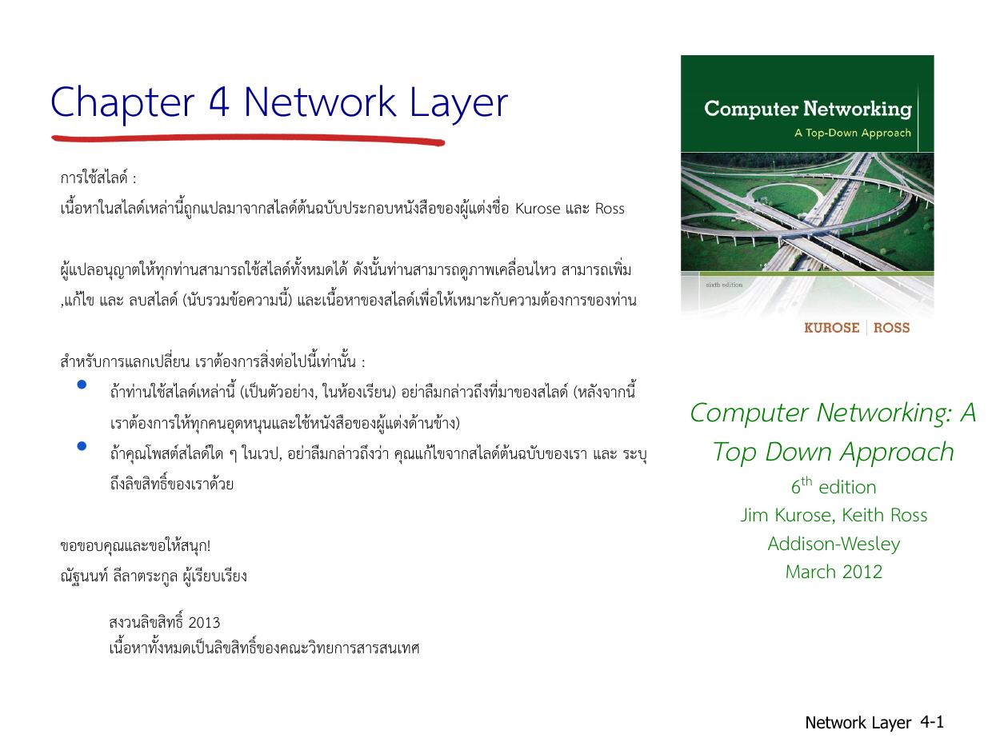
คลิกภาพเพื่อเปิดขยาย
อ่านข้อความต้นฉบับที่สกัดได้ (ไทย/อังกฤษตามไฟล์) Chapter 4 Network Layer
การใช้สไลด์ :
เนื้อหาในสไลด์เหล่านี้ถูกแปลมาจากสไลด์ต้นฉบับประกอบหนังสือของผู้แต่งชื่อ Kurose และ Ross
ผู้แปลอนุญาตให้ทุกท่านสามารถใช้สไลด์ทั้งหมดได้ ดังนั้นท่านสามารถดูภาพเคลื่อนไหว สามารถเพิ่ม
,แก้ไข และ ลบสไลด์ (นับรวมข้อความนี้) และเนื้อหาของสไลด์เพื่อให้เหมาะกับความต้องการของท่าน
สาหรับการแลกเปลี่ยน เราต้องการสิ่งต่อไปนี้เท่านั้น :
• ถ้าท่านใช้สไลด์เหล่านี้ (เป็นตัวอย่าง, ในห้องเรียน) อย่าลืมกล่าวถึงที่มาของสไลด์ (หลังจากนี้
เราต้องการให้ทุกคนอุดหนุนและใช้หนังสือของผู้แต่งด้านข้าง) Computer Networking: A
• ถ้าคุณโพสต์สไลด์ใด ๆ ในเวป, อย่าลืมกล่าวถึงว่า คุณแก้ไขจากสไลด์ต้นฉบับของเรา และ ระบุ Top Down Approach
ถึงลิขสิทธิ์ของเราด้วย 6th edition
Jim Kurose, Keith Ross
ขอขอบคุณและขอให้สนุก! Addison-Wesley
ณัฐนนท์ ลีลาตระกูล ผู้เรียบเรียง March 2012
สงวนลิขสิทธิ์ 2013
เนื้อหาทั้งหมดเป็นลิขสิทธิ์ของคณะวิทยการสารสนเทศ
Network Layer 4-1 ทบทวนภาษาไทย: 351 บท 4: Network Layer, Subnet และ Routing IPv4, IPv6, CIDR และการแบ่ง Subnet IP Datagram, Fragmentation, NAT และ IPv6 ARP, DHCP, ICMP และ Multicast Membership Forwarding และ Routing Algorithms ติว Subnetting แบบละเอียด พร้อมแก้ค่าคลาดเคลื่อนในต้นฉบับ
กลับสารบัญ ↑ หน้า 2 — Chapter 4: network layer ดูภาพต้นฉบับหน้า 2 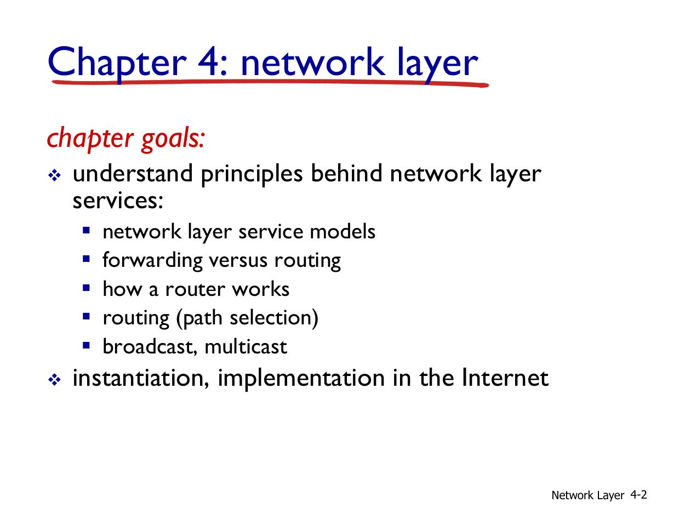
คลิกภาพเพื่อเปิดขยาย
อ่านข้อความต้นฉบับที่สกัดได้ (ไทย/อังกฤษตามไฟล์) Chapter 4: network layer
chapter goals:
understand principles behind network layer
services:
network layer service models
forwarding versus routing
how a router works
routing (path selection)
broadcast, multicast
instantiation, implementation in the Internet
Network Layer 4-2 ทบทวนภาษาไทย: 351 บท 4: Network Layer, Subnet และ Routing IPv4, IPv6, CIDR และการแบ่ง Subnet IP Datagram, Fragmentation, NAT และ IPv6 ARP, DHCP, ICMP และ Multicast Membership Forwarding และ Routing Algorithms ติว Subnetting แบบละเอียด พร้อมแก้ค่าคลาดเคลื่อนในต้นฉบับ
กลับสารบัญ ↑ หน้า 3 — Chapter 4: outline ดูภาพต้นฉบับหน้า 3 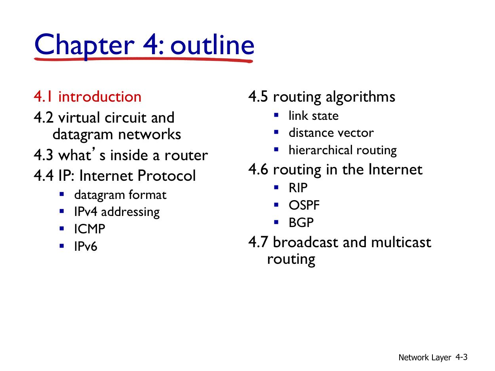
คลิกภาพเพื่อเปิดขยาย
อ่านข้อความต้นฉบับที่สกัดได้ (ไทย/อังกฤษตามไฟล์) Chapter 4: outline
4.1 introduction 4.5 routing algorithms
4.2 virtual circuit and link state
datagram networks distance vector
4.3 what’s inside a router hierarchical routing
4.4 IP: Internet Protocol 4.6 routing in the Internet
datagram format RIP
IPv4 addressing OSPF
ICMP BGP
IPv6 4.7 broadcast and multicast
routing
Network Layer 4-3 ทบทวนภาษาไทย: 351 บท 4: Network Layer, Subnet และ Routing IPv4, IPv6, CIDR และการแบ่ง Subnet IP Datagram, Fragmentation, NAT และ IPv6 ARP, DHCP, ICMP และ Multicast Membership Forwarding และ Routing Algorithms ติว Subnetting แบบละเอียด พร้อมแก้ค่าคลาดเคลื่อนในต้นฉบับ
กลับสารบัญ ↑ หน้า 4 — Network layer ดูภาพต้นฉบับหน้า 4 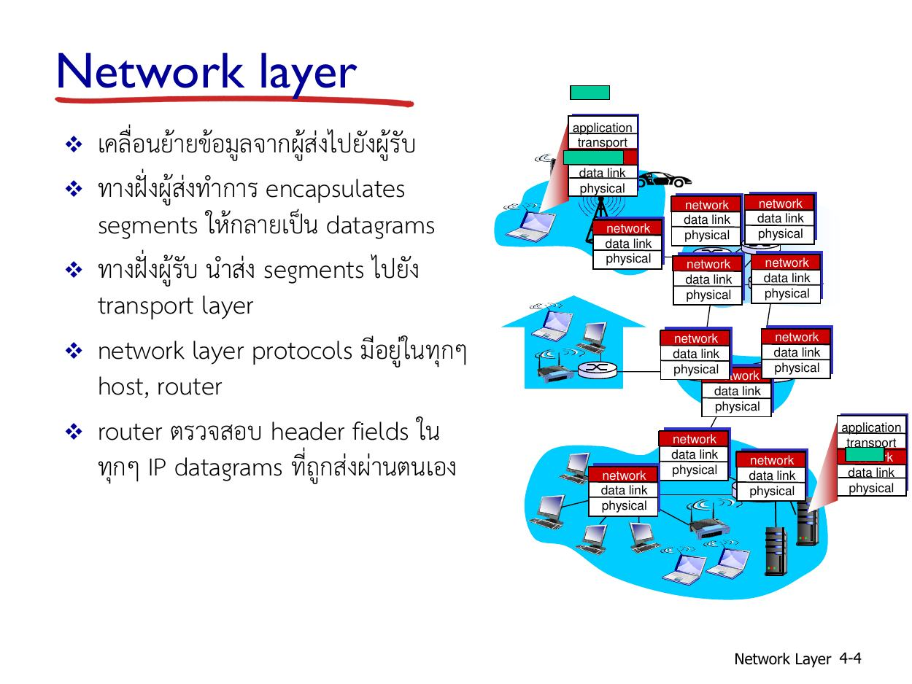
คลิกภาพเพื่อเปิดขยาย
อ่านข้อความต้นฉบับที่สกัดได้ (ไทย/อังกฤษตามไฟล์) Network layer
เคลื่อนย้ายข้อมูลจากผู้ส่งไปยังผู้รับ
application
transport
network
ทางฝั่งผู้ส่งทาการ encapsulates
data link
physical
network network
segments ให้กลายเป็น datagrams network
data link
data link
physical
data link
physical
ทางฝั่งผู้รับ นาส่ง segments ไปยัง
physical network network
data link data link
transport layer physical physical
network layer protocols มีอยู่ในทุกๆ
network network
data link data link
physical physical
host, router network
data link
physical
router ตรวจสอบ header fields ใน network
application
transport
ทุกๆ IP datagrams ที่ถูกส่งผ่านตนเอง network
data link
physical
network
data link
network
data link
physical
data link physical
physical
Network Layer 4-4 ทบทวนภาษาไทย: 351 บท 4: Network Layer, Subnet และ Routing IPv4, IPv6, CIDR และการแบ่ง Subnet IP Datagram, Fragmentation, NAT และ IPv6 ARP, DHCP, ICMP และ Multicast Membership Forwarding และ Routing Algorithms ติว Subnetting แบบละเอียด พร้อมแก้ค่าคลาดเคลื่อนในต้นฉบับ
กลับสารบัญ ↑ หน้า 5 — Two key network-layer functions ดูภาพต้นฉบับหน้า 5 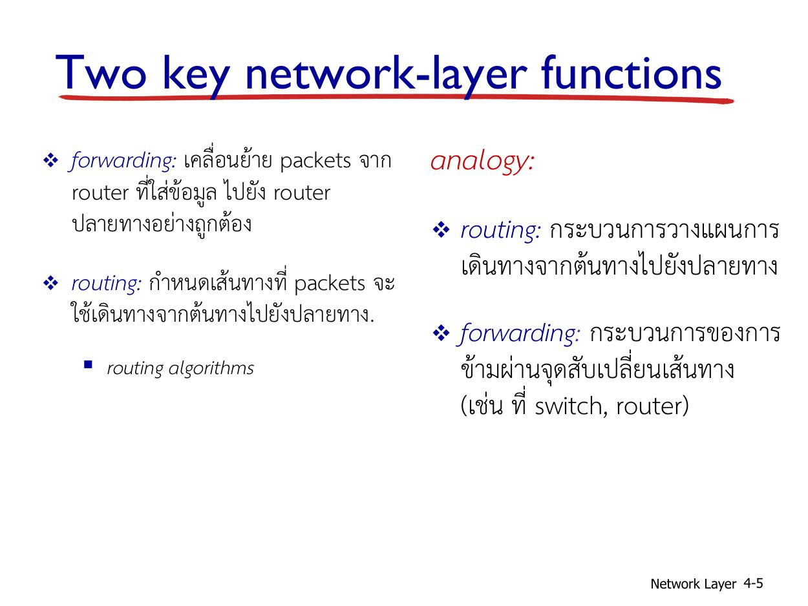
คลิกภาพเพื่อเปิดขยาย
อ่านข้อความต้นฉบับที่สกัดได้ (ไทย/อังกฤษตามไฟล์) Two key network-layer functions
forwarding: เคลื่อนย้าย packets จาก analogy:
router ที่ใส่ข้อมูล ไปยัง router
ปลายทางอย่างถูกต้อง routing: กระบวนการวางแผนการ
routing: กาหนดเส้นทางที่ packets จะ
เดินทางจากต้นทางไปยังปลายทาง
ใช้เดินทางจากต้นทางไปยังปลายทาง.
forwarding: กระบวนการของการ
routing algorithms ข้ามผ่านจุดสับเปลี่ยนเส้นทาง
(เช่น ที่ switch, router)
Network Layer 4-5 ทบทวนภาษาไทย: 351 บท 4: Network Layer, Subnet และ Routing IPv4, IPv6, CIDR และการแบ่ง Subnet IP Datagram, Fragmentation, NAT และ IPv6 ARP, DHCP, ICMP และ Multicast Membership Forwarding และ Routing Algorithms ติว Subnetting แบบละเอียด พร้อมแก้ค่าคลาดเคลื่อนในต้นฉบับ
กลับสารบัญ ↑ หน้า 6 — Interplay between routing and forwarding ดูภาพต้นฉบับหน้า 6 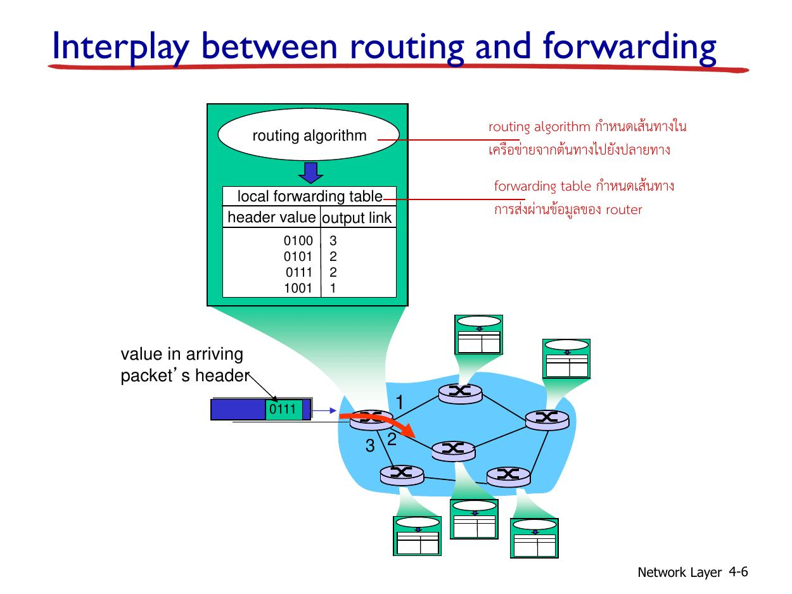
คลิกภาพเพื่อเปิดขยาย
อ่านข้อความต้นฉบับที่สกัดได้ (ไทย/อังกฤษตามไฟล์) Interplay between routing and forwarding
routing algorithm
routing algorithm กาหนดเส้นทางใน
เครือข่ายจากต้นทางไปยังปลายทาง
forwarding table กาหนดเส้นทาง
local forwarding table
header value output link
การส่งผ่านข้อมูลของ router
0100 3
0101 2
0111 2
1001 1
value in arriving
packet’s header
0111 1
3 2
Network Layer 4-6 ทบทวนภาษาไทย: 351 บท 4: Network Layer, Subnet และ Routing IPv4, IPv6, CIDR และการแบ่ง Subnet IP Datagram, Fragmentation, NAT และ IPv6 ARP, DHCP, ICMP และ Multicast Membership Forwarding และ Routing Algorithms ติว Subnetting แบบละเอียด พร้อมแก้ค่าคลาดเคลื่อนในต้นฉบับ
กลับสารบัญ ↑ หน้า 7 — Connection setup (ข้าม) ดูภาพต้นฉบับหน้า 7 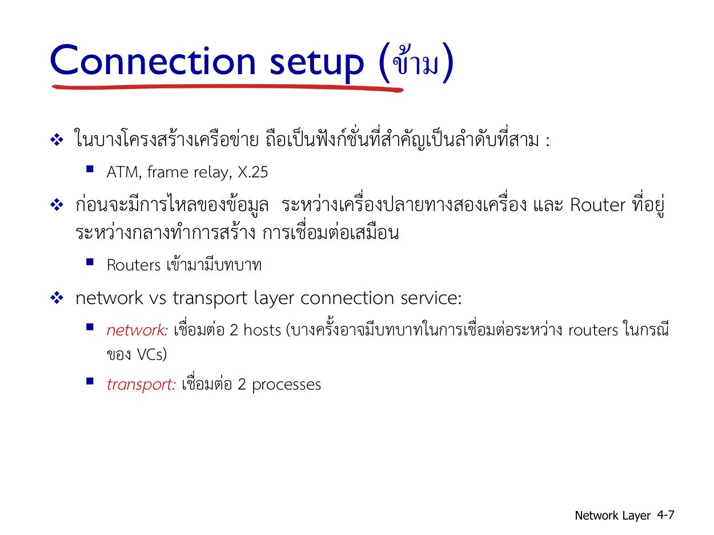
คลิกภาพเพื่อเปิดขยาย
อ่านข้อความต้นฉบับที่สกัดได้ (ไทย/อังกฤษตามไฟล์) Connection setup (ข้าม)
ในบางโครงสร้างเครือข่าย ถือเป็นฟังก์ชั่นที่สาคัญเป็นลาดับที่สาม :
ATM, frame relay, X.25
ก่อนจะมีการไหลของข้อมูล ระหว่างเครื่องปลายทางสองเครื่อง และ Router ที่อยู่
ระหว่างกลางทาการสร้าง การเชื่อมต่อเสมือน
Routers เข้ามามีบทบาท
network vs transport layer connection service:
network: เชื่อมต่อ 2 hosts (บางครั้งอาจมีบทบาทในการเชื่อมต่อระหว่าง routers ในกรณี
ของ VCs)
transport: เชื่อมต่อ 2 processes
Network Layer 4-7 ทบทวนภาษาไทย: 351 บท 4: Network Layer, Subnet และ Routing IPv4, IPv6, CIDR และการแบ่ง Subnet IP Datagram, Fragmentation, NAT และ IPv6 ARP, DHCP, ICMP และ Multicast Membership Forwarding และ Routing Algorithms ติว Subnetting แบบละเอียด พร้อมแก้ค่าคลาดเคลื่อนในต้นฉบับ
กลับสารบัญ ↑ หน้า 8 — Network service model ดูภาพต้นฉบับหน้า 8 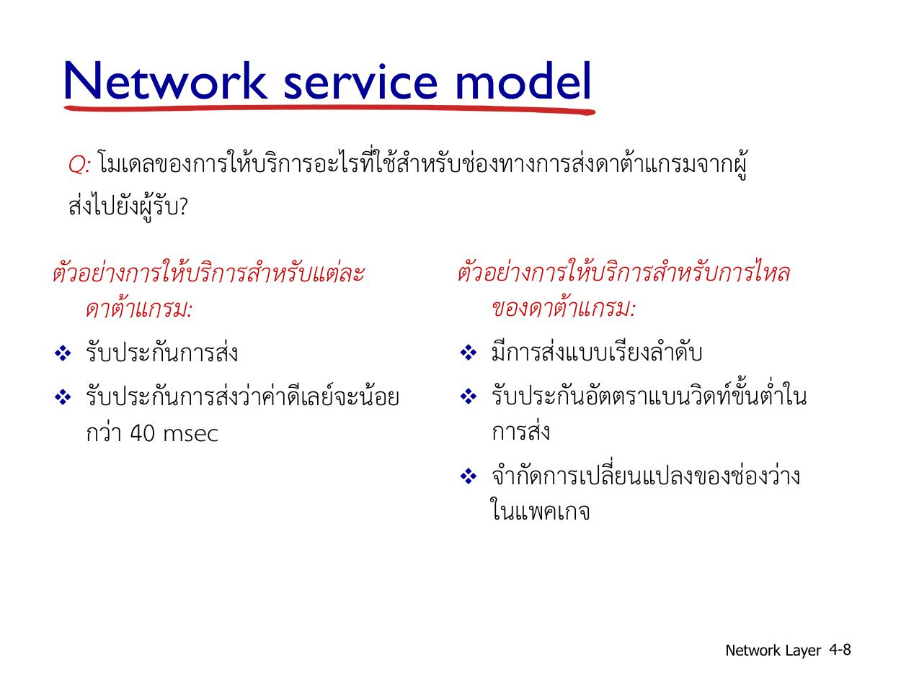
คลิกภาพเพื่อเปิดขยาย
อ่านข้อความต้นฉบับที่สกัดได้ (ไทย/อังกฤษตามไฟล์) Network service model
Q: โมเดลของการให้บริการอะไรที่ใช้สาหรับช่องทางการส่งดาต้าแกรมจากผู้
ส่งไปยังผู้รับ?
ตัวอย่างการให้บริการสาหรับแต่ละ ตัวอย่างการให้บริการสาหรับการไหล
ดาต้าแกรม: ของดาต้าแกรม:
รับประกันการส่ง มีการส่งแบบเรียงลาดับ
รับประกันการส่งว่าค่าดีเลย์จะน้อย รับประกันอัตตราแบนวิดท์ขั้นต่าใน
กว่า 40 msec การส่ง
จากัดการเปลี่ยนแปลงของช่องว่าง
ในแพคเกจ
Network Layer 4-8 ทบทวนภาษาไทย: 351 บท 4: Network Layer, Subnet และ Routing IPv4, IPv6, CIDR และการแบ่ง Subnet IP Datagram, Fragmentation, NAT และ IPv6 ARP, DHCP, ICMP และ Multicast Membership Forwarding และ Routing Algorithms ติว Subnetting แบบละเอียด พร้อมแก้ค่าคลาดเคลื่อนในต้นฉบับ
กลับสารบัญ ↑ หน้า 9 — Network layer service models: ดูภาพต้นฉบับหน้า 9 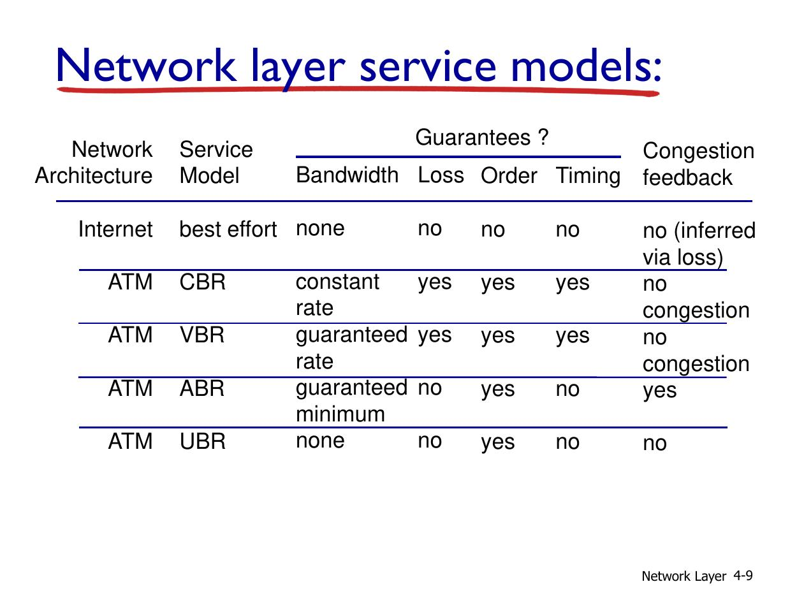
คลิกภาพเพื่อเปิดขยาย
อ่านข้อความต้นฉบับที่สกัดได้ (ไทย/อังกฤษตามไฟล์) Network layer service models:
Guarantees ?
Network Service Congestion
Architecture Model Bandwidth Loss Order Timing feedback
Internet best effort none no no no no (inferred
via loss)
ATM CBR constant yes yes yes no
rate congestion
ATM VBR guaranteed yes yes yes no
rate congestion
ATM ABR guaranteed no yes no yes
minimum
ATM UBR none no yes no no
Network Layer 4-9 ทบทวนภาษาไทย: 351 บท 4: Network Layer, Subnet และ Routing IPv4, IPv6, CIDR และการแบ่ง Subnet IP Datagram, Fragmentation, NAT และ IPv6 ARP, DHCP, ICMP และ Multicast Membership Forwarding และ Routing Algorithms ติว Subnetting แบบละเอียด พร้อมแก้ค่าคลาดเคลื่อนในต้นฉบับ
กลับสารบัญ ↑ หน้า 10 — Chapter 4: outline ดูภาพต้นฉบับหน้า 10 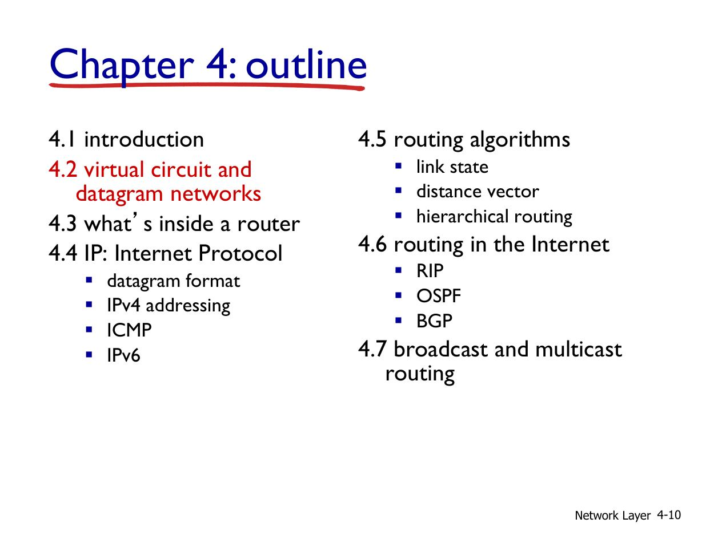
คลิกภาพเพื่อเปิดขยาย
อ่านข้อความต้นฉบับที่สกัดได้ (ไทย/อังกฤษตามไฟล์) Chapter 4: outline
4.1 introduction 4.5 routing algorithms
4.2 virtual circuit and link state
datagram networks distance vector
4.3 what’s inside a router hierarchical routing
4.4 IP: Internet Protocol 4.6 routing in the Internet
datagram format RIP
IPv4 addressing OSPF
ICMP BGP
IPv6 4.7 broadcast and multicast
routing
Network Layer 4-10 ทบทวนภาษาไทย: 351 บท 4: Network Layer, Subnet และ Routing IPv4, IPv6, CIDR และการแบ่ง Subnet IP Datagram, Fragmentation, NAT และ IPv6 ARP, DHCP, ICMP และ Multicast Membership Forwarding และ Routing Algorithms ติว Subnetting แบบละเอียด พร้อมแก้ค่าคลาดเคลื่อนในต้นฉบับ
กลับสารบัญ ↑ หน้า 11 — Connection, connection-less service ดูภาพต้นฉบับหน้า 11 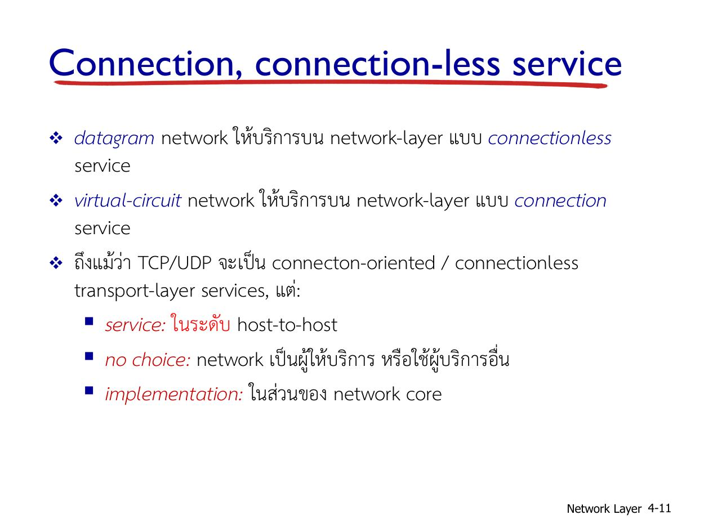
คลิกภาพเพื่อเปิดขยาย
อ่านข้อความต้นฉบับที่สกัดได้ (ไทย/อังกฤษตามไฟล์) Connection, connection-less service
datagram network ให้บริการบน network-layer แบบ connectionless
service
virtual-circuit network ให้บริการบน network-layer แบบ connection
service
ถึงแม้ว่า TCP/UDP จะเป็น connecton-oriented / connectionless
transport-layer services, แต่:
service: ในระดับ host-to-host
no choice: network เป็นผู้ให้บริการ หรือใช้ผู้บริการอื่น
implementation: ในส่วนของ network core
Network Layer 4-11 ทบทวนภาษาไทย: 351 บท 4: Network Layer, Subnet และ Routing IPv4, IPv6, CIDR และการแบ่ง Subnet IP Datagram, Fragmentation, NAT และ IPv6 ARP, DHCP, ICMP และ Multicast Membership Forwarding และ Routing Algorithms ติว Subnetting แบบละเอียด พร้อมแก้ค่าคลาดเคลื่อนในต้นฉบับ
กลับสารบัญ ↑ หน้า 12 — Virtual circuits ดูภาพต้นฉบับหน้า 12 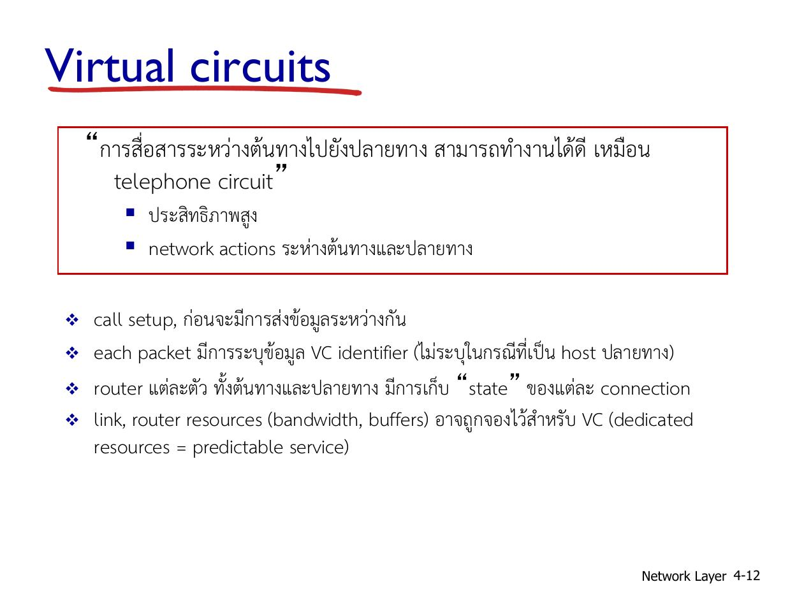
คลิกภาพเพื่อเปิดขยาย
อ่านข้อความต้นฉบับที่สกัดได้ (ไทย/อังกฤษตามไฟล์) Virtual circuits
“การสื่อสารระหว่างต้นทางไปยังปลายทาง สามารถทางานได้ดี เหมือน
telephone circuit”
ประสิทธิภาพสูง
network actions ระห่างต้นทางและปลายทาง
call setup, ก่อนจะมีการส่งข้อมูลระหว่างกัน
each packet มีการระบุข้อมูล VC identifier (ไม่ระบุในกรณีที่เป็น host ปลายทาง)
router แต่ละตัว ทั้งต้นทางและปลายทาง มีการเก็บ “state” ของแต่ละ connection
link, router resources (bandwidth, buffers) อาจถูกจองไว้สาหรับ VC (dedicated
resources = predictable service)
Network Layer 4-12 ทบทวนภาษาไทย: 351 บท 4: Network Layer, Subnet และ Routing IPv4, IPv6, CIDR และการแบ่ง Subnet IP Datagram, Fragmentation, NAT และ IPv6 ARP, DHCP, ICMP และ Multicast Membership Forwarding และ Routing Algorithms ติว Subnetting แบบละเอียด พร้อมแก้ค่าคลาดเคลื่อนในต้นฉบับ
กลับสารบัญ ↑ หน้า 13 — VC implementation (ข้าม) ดูภาพต้นฉบับหน้า 13 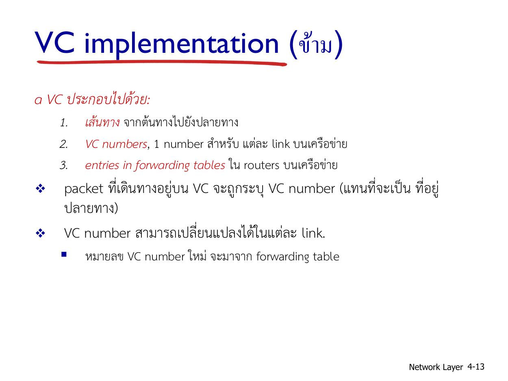
คลิกภาพเพื่อเปิดขยาย
อ่านข้อความต้นฉบับที่สกัดได้ (ไทย/อังกฤษตามไฟล์) VC implementation (ข้าม)
a VC ประกอบไปด้วย:
1. เส้นทาง จากต้นทางไปยังปลายทาง
2. VC numbers, 1 number สาหรับ แต่ละ link บนเครือข่าย
3. entries in forwarding tables ใน routers บนเครือข่าย
packet ที่เดินทางอยู่บน VC จะถูกระบุ VC number (แทนที่จะเป็น ที่อยู่
ปลายทาง)
VC number สามารถเปลี่ยนแปลงได้ในแต่ละ link.
หมายลข VC number ใหม่ จะมาจาก forwarding table
Network Layer 4-13 ทบทวนภาษาไทย: 351 บท 4: Network Layer, Subnet และ Routing IPv4, IPv6, CIDR และการแบ่ง Subnet IP Datagram, Fragmentation, NAT และ IPv6 ARP, DHCP, ICMP และ Multicast Membership Forwarding และ Routing Algorithms ติว Subnetting แบบละเอียด พร้อมแก้ค่าคลาดเคลื่อนในต้นฉบับ
กลับสารบัญ ↑ หน้า 14 — VC forwarding table ดูภาพต้นฉบับหน้า 14 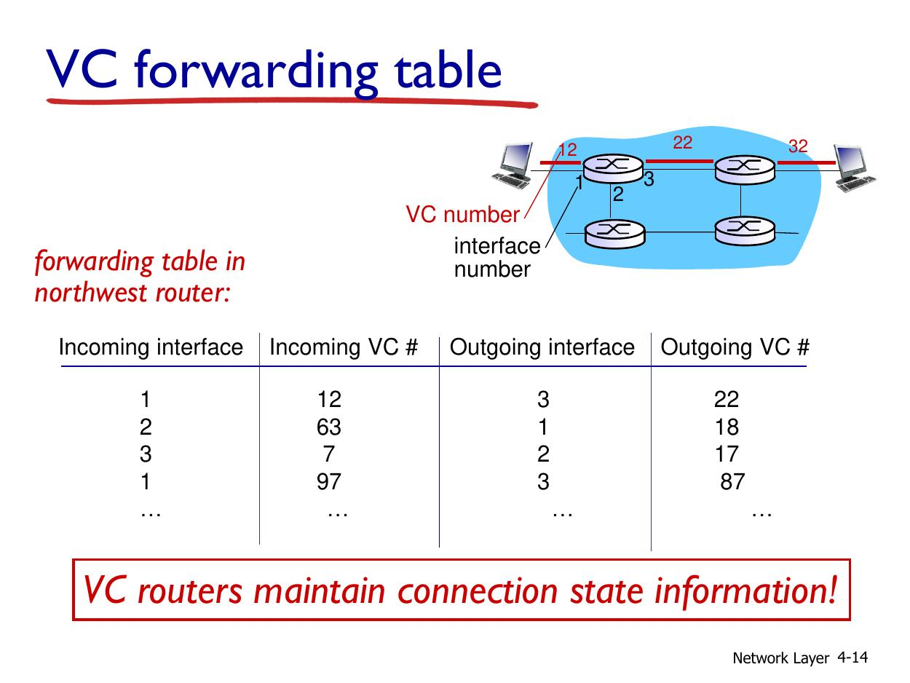
คลิกภาพเพื่อเปิดขยาย
อ่านข้อความต้นฉบับที่สกัดได้ (ไทย/อังกฤษตามไฟล์) VC forwarding table
12 22 32
1 3
2
VC number
interface
forwarding table in number
northwest router:
Incoming interface Incoming VC # Outgoing interface Outgoing VC #
1 12 3 22
2 63 1 18
3 7 2 17
1 97 3 87
… … … …
VC routers maintain connection state information!
Network Layer 4-14 ทบทวนภาษาไทย: 351 บท 4: Network Layer, Subnet และ Routing IPv4, IPv6, CIDR และการแบ่ง Subnet IP Datagram, Fragmentation, NAT และ IPv6 ARP, DHCP, ICMP และ Multicast Membership Forwarding และ Routing Algorithms ติว Subnetting แบบละเอียด พร้อมแก้ค่าคลาดเคลื่อนในต้นฉบับ
กลับสารบัญ ↑ หน้า 15 — Virtual circuits: signaling protocols (ข้าม) ดูภาพต้นฉบับหน้า 15 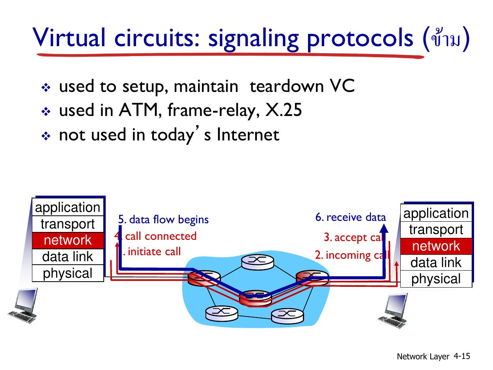
คลิกภาพเพื่อเปิดขยาย
อ่านข้อความต้นฉบับที่สกัดได้ (ไทย/อังกฤษตามไฟล์) Virtual circuits: signaling protocols (ข้าม)
used to setup, maintain teardown VC
used in ATM, frame-relay, X.25
not used in today’s Internet
application application
5. data flow begins 6. receive data
transport transport
network 4. call connected 3. accept call
1. initiate call network
data link 2. incoming call
data link
physical physical
Network Layer 4-15 ทบทวนภาษาไทย: 351 บท 4: Network Layer, Subnet และ Routing IPv4, IPv6, CIDR และการแบ่ง Subnet IP Datagram, Fragmentation, NAT และ IPv6 ARP, DHCP, ICMP และ Multicast Membership Forwarding และ Routing Algorithms ติว Subnetting แบบละเอียด พร้อมแก้ค่าคลาดเคลื่อนในต้นฉบับ
กลับสารบัญ ↑ หน้า 16 — Datagram networks ดูภาพต้นฉบับหน้า 16 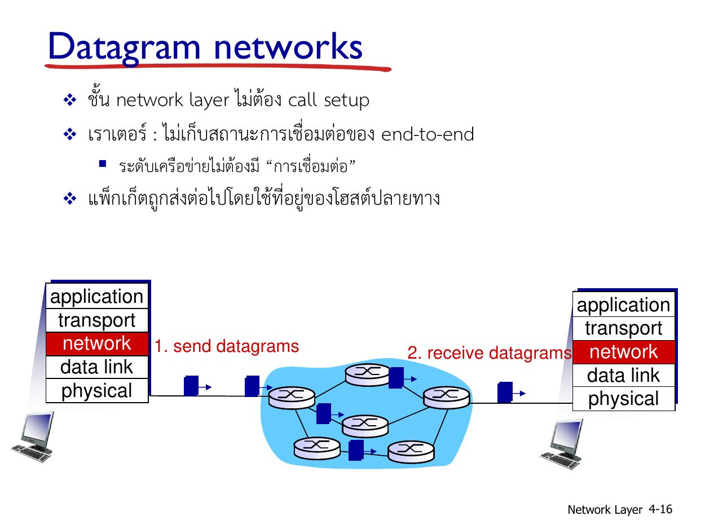
คลิกภาพเพื่อเปิดขยาย
อ่านข้อความต้นฉบับที่สกัดได้ (ไทย/อังกฤษตามไฟล์) Datagram networks
ชั้น network layer ไม่ต้อง call setup
เราเตอร์ : ไม่เก็บสถานะการเชื่อมต่อของ end-to-end
ระดับเครือข่ายไม่ต้องมี “การเชื่อมต่อ”
แพ็กเก็ตถูกส่งต่อไปโดยใช้ที่อยู่ของโฮสต์ปลายทาง
application application
transport transport
network 1. send datagrams 2. receive datagrams network
data link data link
physical physical
Network Layer 4-16 ทบทวนภาษาไทย: 351 บท 4: Network Layer, Subnet และ Routing IPv4, IPv6, CIDR และการแบ่ง Subnet IP Datagram, Fragmentation, NAT และ IPv6 ARP, DHCP, ICMP และ Multicast Membership Forwarding และ Routing Algorithms ติว Subnetting แบบละเอียด พร้อมแก้ค่าคลาดเคลื่อนในต้นฉบับ
กลับสารบัญ ↑ หน้า 17 — Datagram forwarding table ดูภาพต้นฉบับหน้า 17 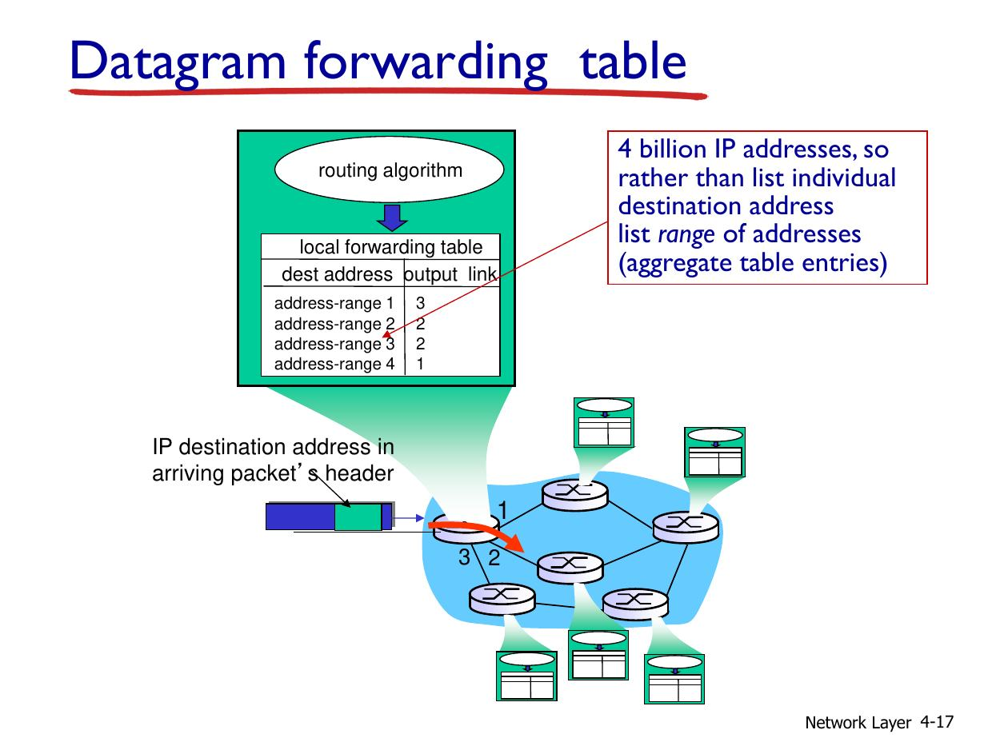
คลิกภาพเพื่อเปิดขยาย
อ่านข้อความต้นฉบับที่สกัดได้ (ไทย/อังกฤษตามไฟล์) Datagram forwarding table
4 billion IP addresses, so
routing algorithm rather than list individual
destination address
local forwarding table
list range of addresses
dest address output link (aggregate table entries)
address-range 1 3
address-range 2 2
address-range 3 2
address-range 4 1
IP destination address in
arriving packet’s header
1
3 2
Network Layer 4-17 ทบทวนภาษาไทย: 351 บท 4: Network Layer, Subnet และ Routing IPv4, IPv6, CIDR และการแบ่ง Subnet IP Datagram, Fragmentation, NAT และ IPv6 ARP, DHCP, ICMP และ Multicast Membership Forwarding และ Routing Algorithms ติว Subnetting แบบละเอียด พร้อมแก้ค่าคลาดเคลื่อนในต้นฉบับ
กลับสารบัญ ↑ หน้า 18 — Datagram forwarding table ดูภาพต้นฉบับหน้า 18 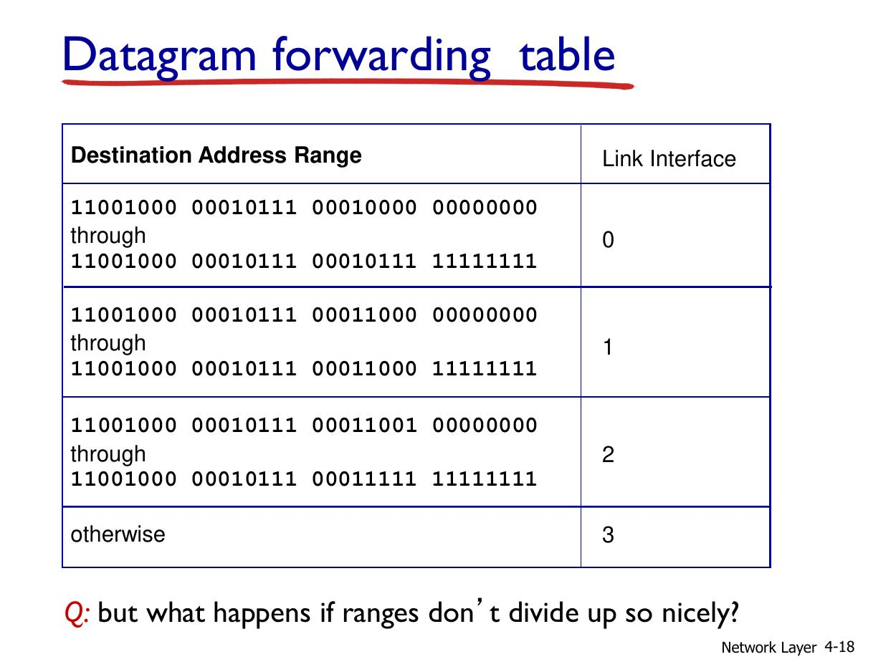
คลิกภาพเพื่อเปิดขยาย
อ่านข้อความต้นฉบับที่สกัดได้ (ไทย/อังกฤษตามไฟล์) Datagram forwarding table
Destination Address Range Link Interface
11001000 00010111 00010000 00000000
through 0
11001000 00010111 00010111 11111111
11001000 00010111 00011000 00000000
through 1
11001000 00010111 00011000 11111111
11001000 00010111 00011001 00000000
through 2
11001000 00010111 00011111 11111111
otherwise 3
Q: but what happens if ranges don’t divide up so nicely?
Network Layer 4-18 ทบทวนภาษาไทย: 351 บท 4: Network Layer, Subnet และ Routing IPv4, IPv6, CIDR และการแบ่ง Subnet IP Datagram, Fragmentation, NAT และ IPv6 ARP, DHCP, ICMP และ Multicast Membership Forwarding และ Routing Algorithms ติว Subnetting แบบละเอียด พร้อมแก้ค่าคลาดเคลื่อนในต้นฉบับ
กลับสารบัญ ↑ หน้า 19 — Longest prefix matching ดูภาพต้นฉบับหน้า 19 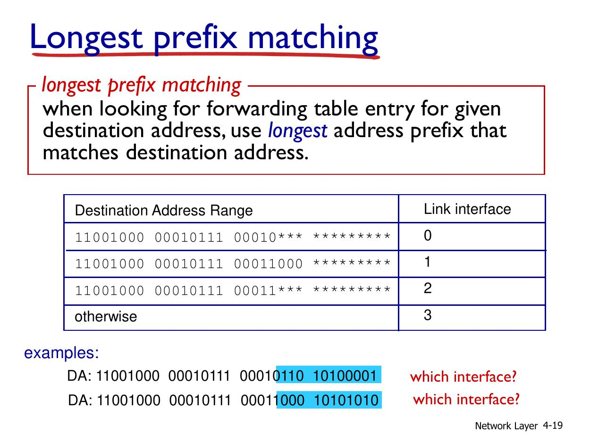
คลิกภาพเพื่อเปิดขยาย
อ่านข้อความต้นฉบับที่สกัดได้ (ไทย/อังกฤษตามไฟล์) Longest prefix matching
longest prefix matching
when looking for forwarding table entry for given
destination address, use longest address prefix that
matches destination address.
Destination Address Range Link interface
11001000 00010111 00010*** ********* 0
11001000 00010111 00011000 ********* 1
11001000 00010111 00011*** ********* 2
otherwise 3
examples:
DA: 11001000 00010111 00010110 10100001 which interface?
DA: 11001000 00010111 00011000 10101010 which interface?
Network Layer 4-19 ทบทวนภาษาไทย: 351 บท 4: Network Layer, Subnet และ Routing IPv4, IPv6, CIDR และการแบ่ง Subnet IP Datagram, Fragmentation, NAT และ IPv6 ARP, DHCP, ICMP และ Multicast Membership Forwarding และ Routing Algorithms ติว Subnetting แบบละเอียด พร้อมแก้ค่าคลาดเคลื่อนในต้นฉบับ
กลับสารบัญ ↑ หน้า 20 — Datagram หรือ VC network: ทำไม? ดูภาพต้นฉบับหน้า 20 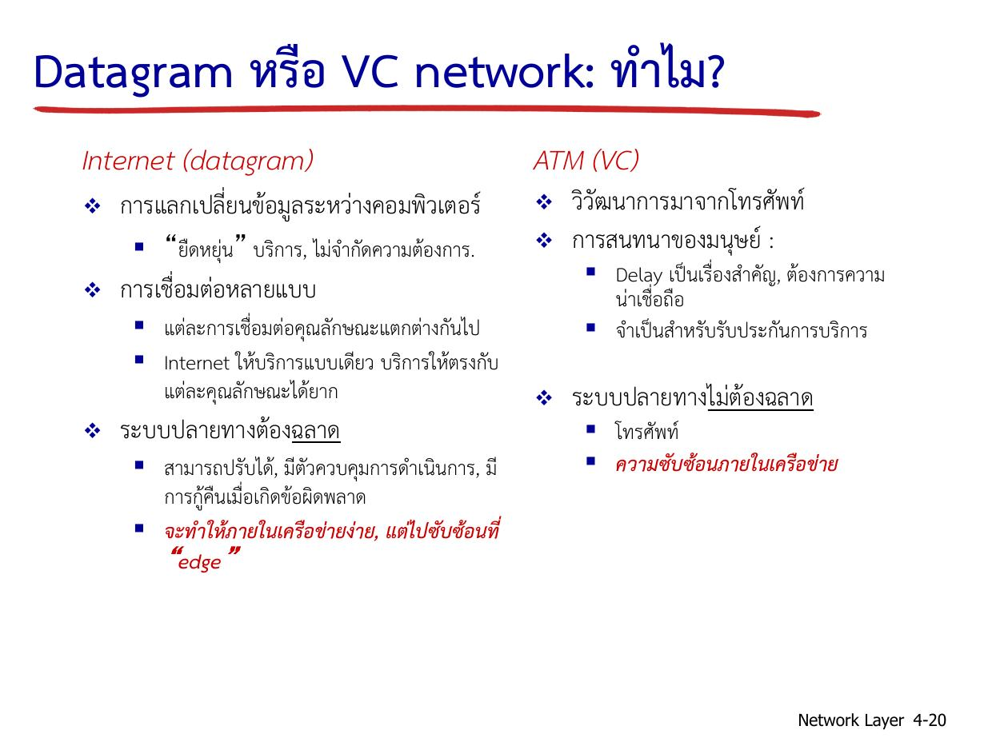
คลิกภาพเพื่อเปิดขยาย
อ่านข้อความต้นฉบับที่สกัดได้ (ไทย/อังกฤษตามไฟล์) Datagram หรือ VC network: ทำไม?
Internet (datagram) ATM (VC)
การแลกเปลี่ยนข้อมูลระหว่างคอมพิวเตอร์ วิวัฒนาการมาจากโทรศัพท์
“ยืดหยุ่น” บริการ, ไม่จากัดความต้องการ. การสนทนาของมนุษย์ :
Delay เป็นเรื่องสาคัญ, ต้องการความ
การเชื่อมต่อหลายแบบ น่าเชื่อถือ
แต่ละการเชื่อมต่อคุณลักษณะแตกต่างกันไป จาเป็นสาหรับรับประกันการบริการ
Internet ให้บริการแบบเดียว บริการให้ตรงกับ
แต่ละคุณลักษณะได้ยาก ระบบปลายทางไม่ต้องฉลาด
ระบบปลายทางต้องฉลาด โทรศัพท์
สามารถปรับได้, มีตัวควบคุมการดาเนินการ, มี ควำมซับซ้อนภำยในเครือข่ำย
การกูค้ ืนเมื่อเกิดข้อผิดพลาด
จะทำให้ภำยในเครือข่ำยง่ำย, แต่ไปซับซ้อนที่
“edge”
Network Layer 4-20 ทบทวนภาษาไทย: 351 บท 4: Network Layer, Subnet และ Routing IPv4, IPv6, CIDR และการแบ่ง Subnet IP Datagram, Fragmentation, NAT และ IPv6 ARP, DHCP, ICMP และ Multicast Membership Forwarding และ Routing Algorithms ติว Subnetting แบบละเอียด พร้อมแก้ค่าคลาดเคลื่อนในต้นฉบับ
กลับสารบัญ ↑ หน้า 21 — Chapter 4: outline ดูภาพต้นฉบับหน้า 21 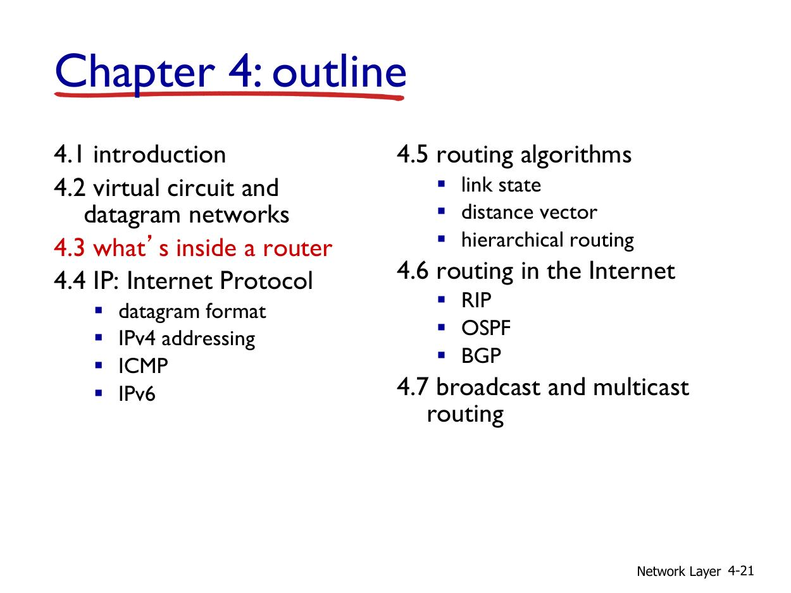
คลิกภาพเพื่อเปิดขยาย
อ่านข้อความต้นฉบับที่สกัดได้ (ไทย/อังกฤษตามไฟล์) Chapter 4: outline
4.1 introduction 4.5 routing algorithms
4.2 virtual circuit and link state
datagram networks distance vector
4.3 what’s inside a router hierarchical routing
4.4 IP: Internet Protocol 4.6 routing in the Internet
datagram format RIP
IPv4 addressing OSPF
ICMP BGP
IPv6 4.7 broadcast and multicast
routing
Network Layer 4-21 ทบทวนภาษาไทย: 351 บท 4: Network Layer, Subnet และ Routing IPv4, IPv6, CIDR และการแบ่ง Subnet IP Datagram, Fragmentation, NAT และ IPv6 ARP, DHCP, ICMP และ Multicast Membership Forwarding และ Routing Algorithms ติว Subnetting แบบละเอียด พร้อมแก้ค่าคลาดเคลื่อนในต้นฉบับ
กลับสารบัญ ↑ หน้า 22 — ภำพรวมของสถำปัตยกรรมเรำเตอร์ ดูภาพต้นฉบับหน้า 22 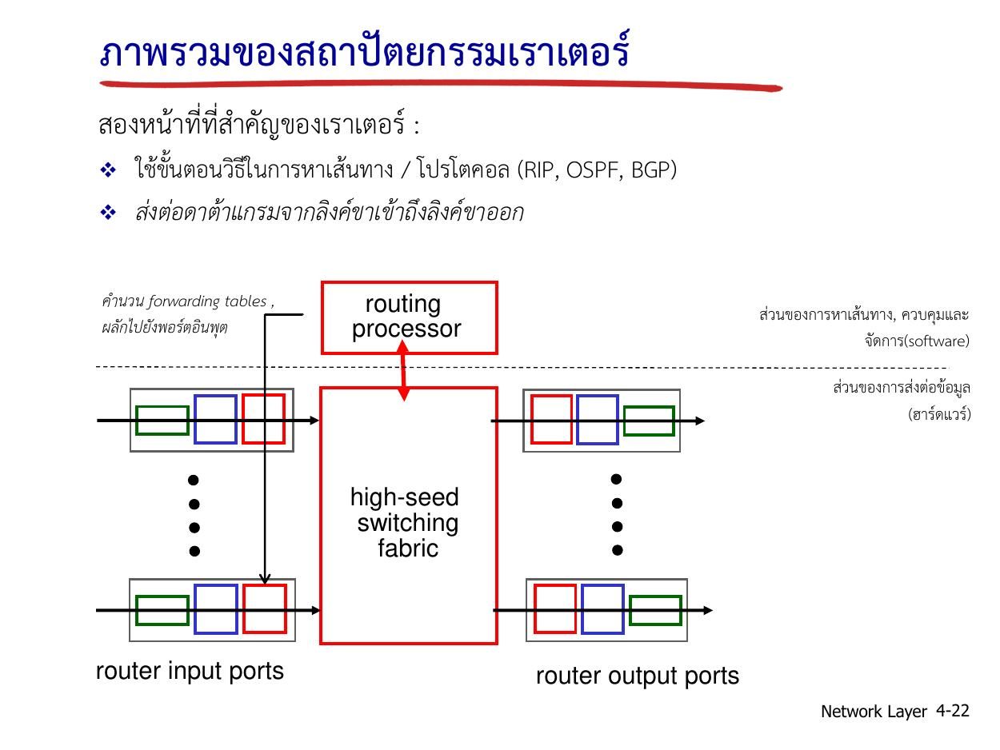
คลิกภาพเพื่อเปิดขยาย
อ่านข้อความต้นฉบับที่สกัดได้ (ไทย/อังกฤษตามไฟล์) ภำพรวมของสถำปัตยกรรมเรำเตอร์
สองหน้าที่ที่สาคัญของเราเตอร์ :
ใช้ขั้นตอนวิธีในการหาเส้นทาง / โปรโตคอล (RIP, OSPF, BGP)
ส่งต่อดาต้าแกรมจากลิงค์ขาเข้าถึงลิงค์ขาออก
คานวน forwarding tables , routing ส่วนของการหาเส้นทาง, ควบคุมและ
ผลักไปยังพอร์ตอินพุต processor จัดการ(software)
ส่วนของการส่งต่อข้อมูล
(ฮาร์ดแวร์)
high-seed
switching
fabric
router input ports router output ports
Network Layer 4-22 ทบทวนภาษาไทย: 351 บท 4: Network Layer, Subnet และ Routing IPv4, IPv6, CIDR และการแบ่ง Subnet IP Datagram, Fragmentation, NAT และ IPv6 ARP, DHCP, ICMP และ Multicast Membership Forwarding และ Routing Algorithms ติว Subnetting แบบละเอียด พร้อมแก้ค่าคลาดเคลื่อนในต้นฉบับ
กลับสารบัญ ↑ หน้า 23 — Input port functions ดูภาพต้นฉบับหน้า 23 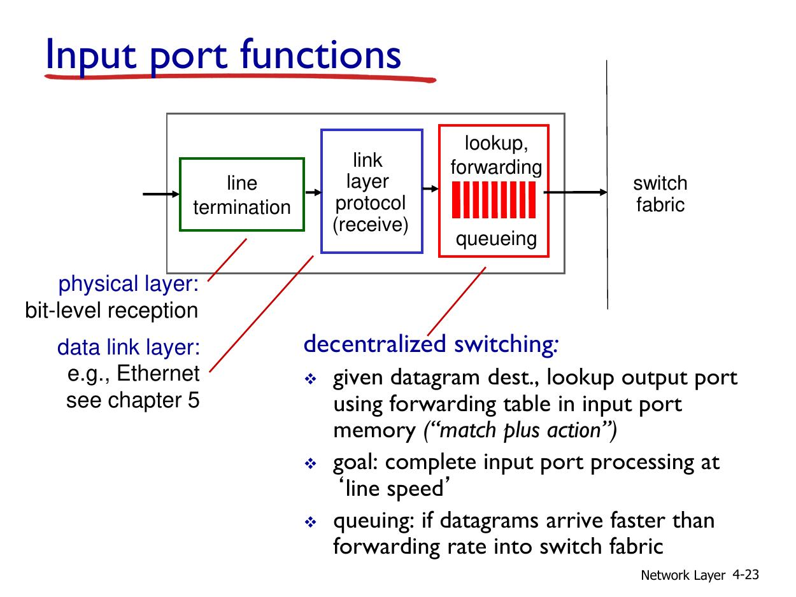
คลิกภาพเพื่อเปิดขยาย
อ่านข้อความต้นฉบับที่สกัดได้ (ไทย/อังกฤษตามไฟล์) Input port functions
lookup,
link forwarding
line layer switch
termination protocol fabric
(receive)
queueing
physical layer:
bit-level reception
data link layer: decentralized switching:
e.g., Ethernet given datagram dest., lookup output port
see chapter 5 using forwarding table in input port
memory (“match plus action”)
goal: complete input port processing at
‘line speed’
queuing: if datagrams arrive faster than
forwarding rate into switch fabric
Network Layer 4-23 ทบทวนภาษาไทย: 351 บท 4: Network Layer, Subnet และ Routing IPv4, IPv6, CIDR และการแบ่ง Subnet IP Datagram, Fragmentation, NAT และ IPv6 ARP, DHCP, ICMP และ Multicast Membership Forwarding และ Routing Algorithms ติว Subnetting แบบละเอียด พร้อมแก้ค่าคลาดเคลื่อนในต้นฉบับ
กลับสารบัญ ↑ หน้า 24 — Switching fabrics ดูภาพต้นฉบับหน้า 24 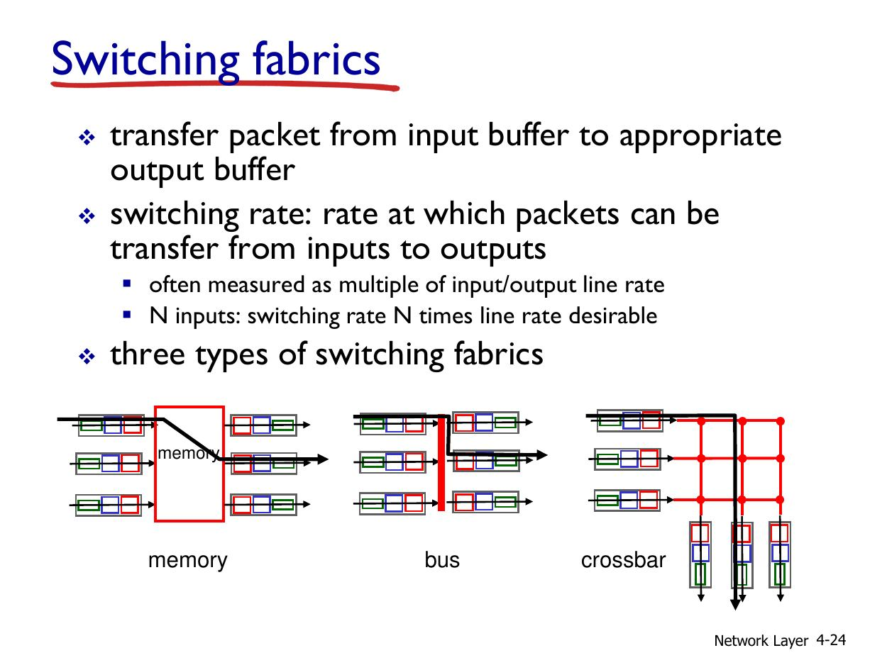
คลิกภาพเพื่อเปิดขยาย
อ่านข้อความต้นฉบับที่สกัดได้ (ไทย/อังกฤษตามไฟล์) Switching fabrics
transfer packet from input buffer to appropriate
output buffer
switching rate: rate at which packets can be
transfer from inputs to outputs
often measured as multiple of input/output line rate
N inputs: switching rate N times line rate desirable
three types of switching fabrics
memory
memory bus crossbar
Network Layer 4-24 ทบทวนภาษาไทย: 351 บท 4: Network Layer, Subnet และ Routing IPv4, IPv6, CIDR และการแบ่ง Subnet IP Datagram, Fragmentation, NAT และ IPv6 ARP, DHCP, ICMP และ Multicast Membership Forwarding และ Routing Algorithms ติว Subnetting แบบละเอียด พร้อมแก้ค่าคลาดเคลื่อนในต้นฉบับ
กลับสารบัญ ↑ หน้า 25 — กำร Switching ผ่ำนหน่วยควำมจำ ดูภาพต้นฉบับหน้า 25 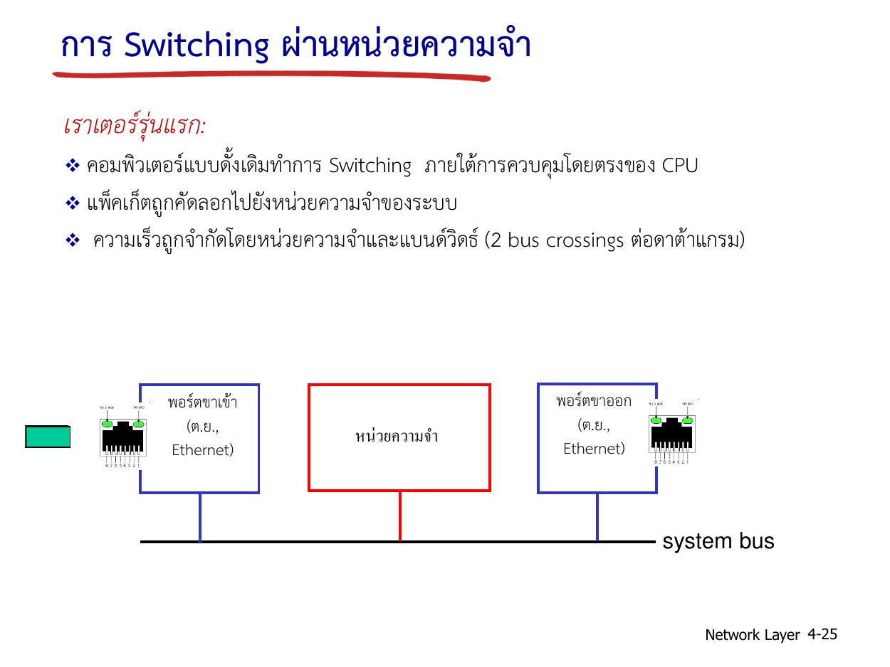
คลิกภาพเพื่อเปิดขยาย
อ่านข้อความต้นฉบับที่สกัดได้ (ไทย/อังกฤษตามไฟล์) กำร Switching ผ่ำนหน่วยควำมจำ
เราเตอร์รุ่นแรก:
คอมพิวเตอร์แบบดั้งเดิมทาการ Switching ภายใต้การควบคุมโดยตรงของ CPU
แพ็คเก็ตถูกคัดลอกไปยังหน่วยความจาของระบบ
ความเร็วถูกจากัดโดยหน่วยความจาและแบนด์วิดธ์ (2 bus crossings ต่อดาต้าแกรม)
พอร์ตขาเข้า พอร์ตขาออก
(ต.ย., (ต.ย.,
หน่วยความจา
Ethernet) Ethernet)
system bus
Network Layer 4-25 ทบทวนภาษาไทย: 351 บท 4: Network Layer, Subnet และ Routing IPv4, IPv6, CIDR และการแบ่ง Subnet IP Datagram, Fragmentation, NAT และ IPv6 ARP, DHCP, ICMP และ Multicast Membership Forwarding และ Routing Algorithms ติว Subnetting แบบละเอียด พร้อมแก้ค่าคลาดเคลื่อนในต้นฉบับ
กลับสารบัญ ↑ หน้า 26 — Switching ผ่ำน bus ดูภาพต้นฉบับหน้า 26 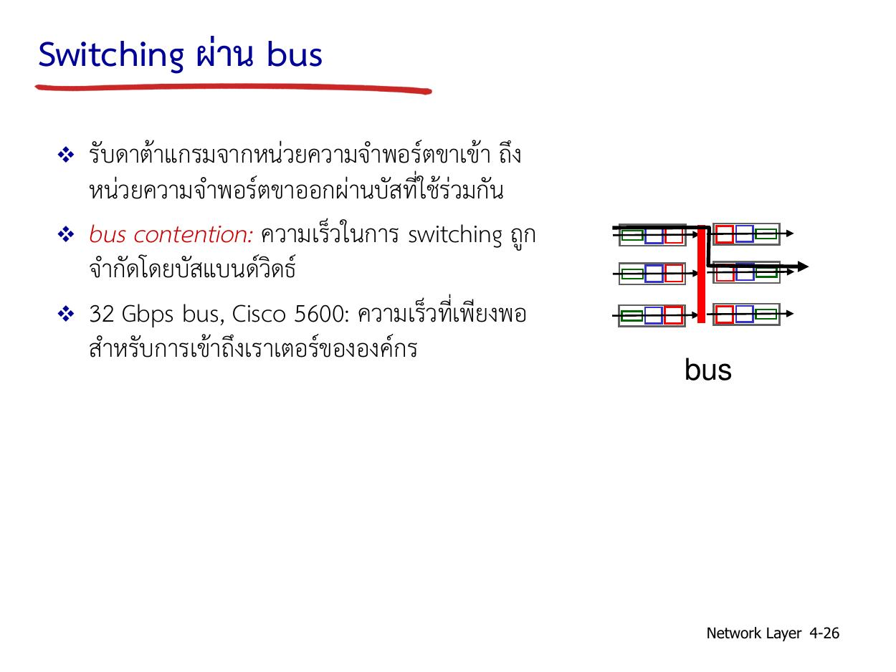
คลิกภาพเพื่อเปิดขยาย
อ่านข้อความต้นฉบับที่สกัดได้ (ไทย/อังกฤษตามไฟล์) Switching ผ่ำน bus
รับดาต้าแกรมจากหน่วยความจาพอร์ตขาเข้า ถึง
หน่วยความจาพอร์ตขาออกผ่านบัสที่ใช้ร่วมกัน
bus contention: ความเร็วในการ switching ถูก
จากัดโดยบัสแบนด์วิดธ์
32 Gbps bus, Cisco 5600: ความเร็วที่เพียงพอ
สาหรับการเข้าถึงเราเตอร์ขององค์กร
bus
Network Layer 4-26 ทบทวนภาษาไทย: 351 บท 4: Network Layer, Subnet และ Routing IPv4, IPv6, CIDR และการแบ่ง Subnet IP Datagram, Fragmentation, NAT และ IPv6 ARP, DHCP, ICMP และ Multicast Membership Forwarding และ Routing Algorithms ติว Subnetting แบบละเอียด พร้อมแก้ค่าคลาดเคลื่อนในต้นฉบับ
กลับสารบัญ ↑ หน้า 27 — Switching ผ่ำนกำรเชื่อมโยงของเครือข่ำย ดูภาพต้นฉบับหน้า 27 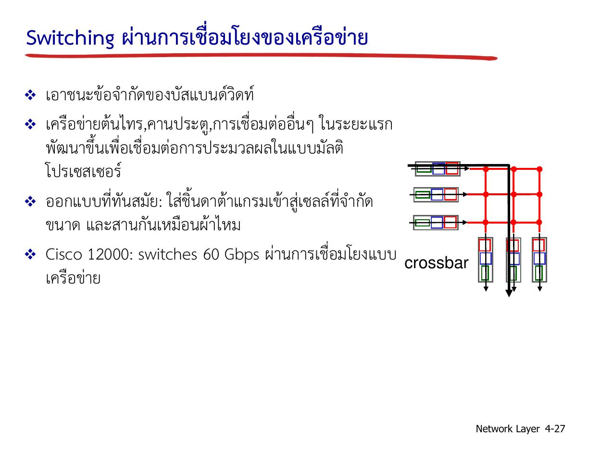
คลิกภาพเพื่อเปิดขยาย
อ่านข้อความต้นฉบับที่สกัดได้ (ไทย/อังกฤษตามไฟล์) Switching ผ่ำนกำรเชื่อมโยงของเครือข่ำย
เอาชนะข้อจากัดของบัสแบนด์วิดท์
เครือข่ายต้นไทร,คานประตู,การเชื่อมต่ออื่นๆ ในระยะแรก
พัฒนาขึ้นเพื่อเชื่อมต่อการประมวลผลในแบบมัลติ
โปรเซสเซอร์
ออกแบบทีท ่ ันสมัย: ใส่ชิ้นดาต้าแกรมเข้าสู่เซลล์ที่จากัด
ขนาด และสานกันเหมือนผ้าไหม
Cisco 12000: switches 60 Gbps ผ่านการเชื่อมโยงแบบ
crossbar
เครือข่าย
Network Layer 4-27 ทบทวนภาษาไทย: 351 บท 4: Network Layer, Subnet และ Routing IPv4, IPv6, CIDR และการแบ่ง Subnet IP Datagram, Fragmentation, NAT และ IPv6 ARP, DHCP, ICMP และ Multicast Membership Forwarding และ Routing Algorithms ติว Subnetting แบบละเอียด พร้อมแก้ค่าคลาดเคลื่อนในต้นฉบับ
กลับสารบัญ ↑ หน้า 28 — พอร์ตขำออก ดูภาพต้นฉบับหน้า 28 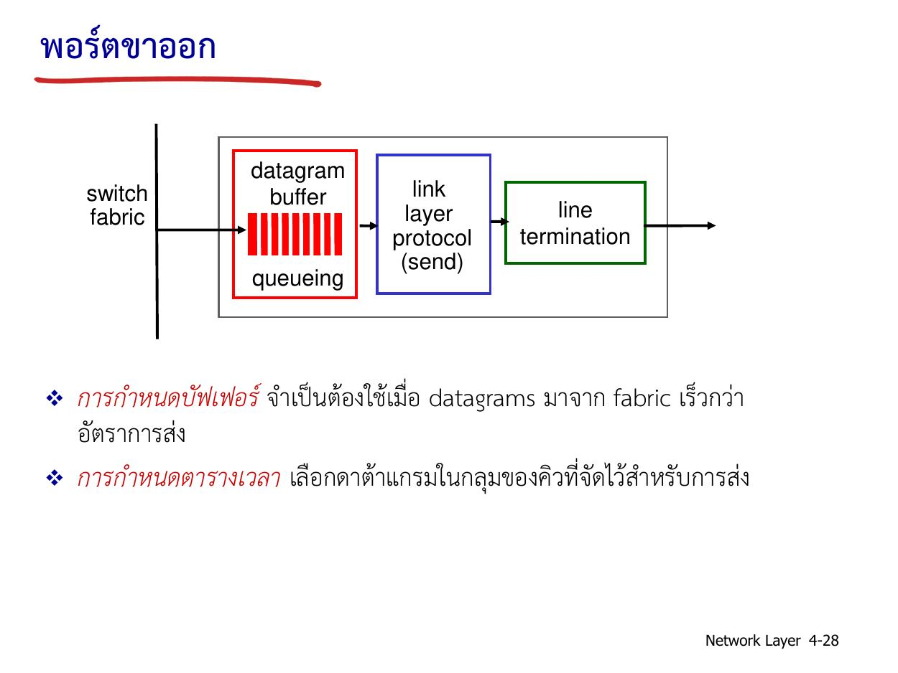
คลิกภาพเพื่อเปิดขยาย
อ่านข้อความต้นฉบับที่สกัดได้ (ไทย/อังกฤษตามไฟล์) พอร์ตขำออก
datagram
switch buffer link
fabric layer line
protocol termination
(send)
queueing
การกาหนดบัฟเฟอร์ จาเป็นต้องใช้เมื่อ datagrams มาจาก fabric เร็วกว่า
อัตราการส่ง
การกาหนดตารางเวลา เลือกดาต้าแกรมในกลุมของคิวที่จัดไว้สาหรับการส่ง
Network Layer 4-28 ทบทวนภาษาไทย: 351 บท 4: Network Layer, Subnet และ Routing IPv4, IPv6, CIDR และการแบ่ง Subnet IP Datagram, Fragmentation, NAT และ IPv6 ARP, DHCP, ICMP และ Multicast Membership Forwarding และ Routing Algorithms ติว Subnetting แบบละเอียด พร้อมแก้ค่าคลาดเคลื่อนในต้นฉบับ
กลับสารบัญ ↑ หน้า 29 — คิวที่ Output port ดูภาพต้นฉบับหน้า 29 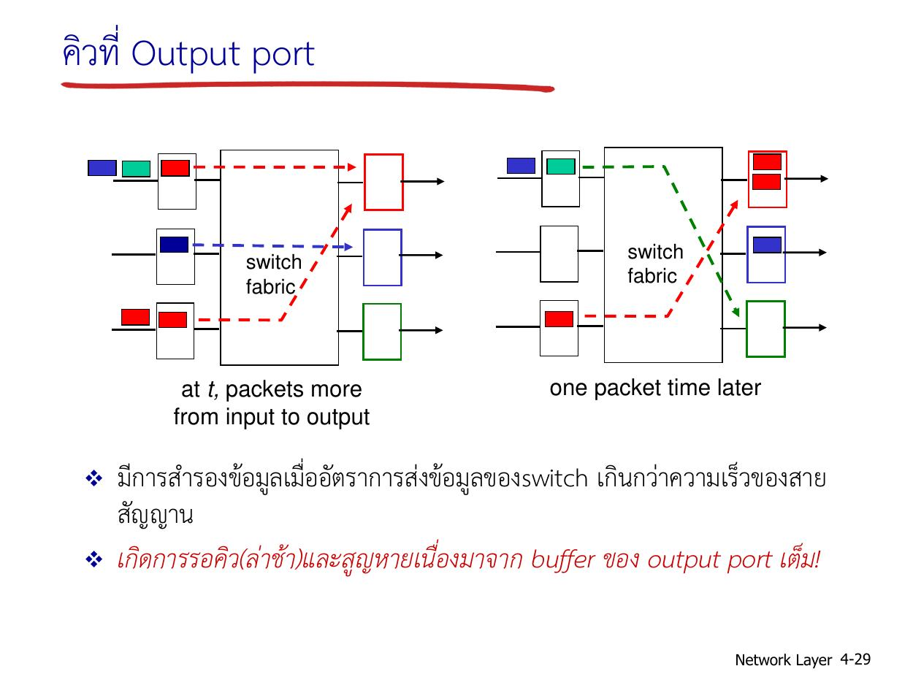
คลิกภาพเพื่อเปิดขยาย
อ่านข้อความต้นฉบับที่สกัดได้ (ไทย/อังกฤษตามไฟล์) คิวที่ Output port
switch
switch
fabric
fabric
at t, packets more one packet time later
from input to output
มีการสารองข้อมูลเมื่ออัตราการส่งข้อมูลของswitch เกินกว่าความเร็วของสาย
สัญญาน
เกิดการรอคิว(ล่าช้า)และสูญหายเนื่องมาจาก buffer ของ output port เต็ม!
Network Layer 4-29 ทบทวนภาษาไทย: 351 บท 4: Network Layer, Subnet และ Routing IPv4, IPv6, CIDR และการแบ่ง Subnet IP Datagram, Fragmentation, NAT และ IPv6 ARP, DHCP, ICMP และ Multicast Membership Forwarding และ Routing Algorithms ติว Subnetting แบบละเอียด พร้อมแก้ค่าคลาดเคลื่อนในต้นฉบับ
กลับสารบัญ ↑ หน้า 30 — ขนาด buffer ควรมีเท่าไร? (ข้าม) ดูภาพต้นฉบับหน้า 30 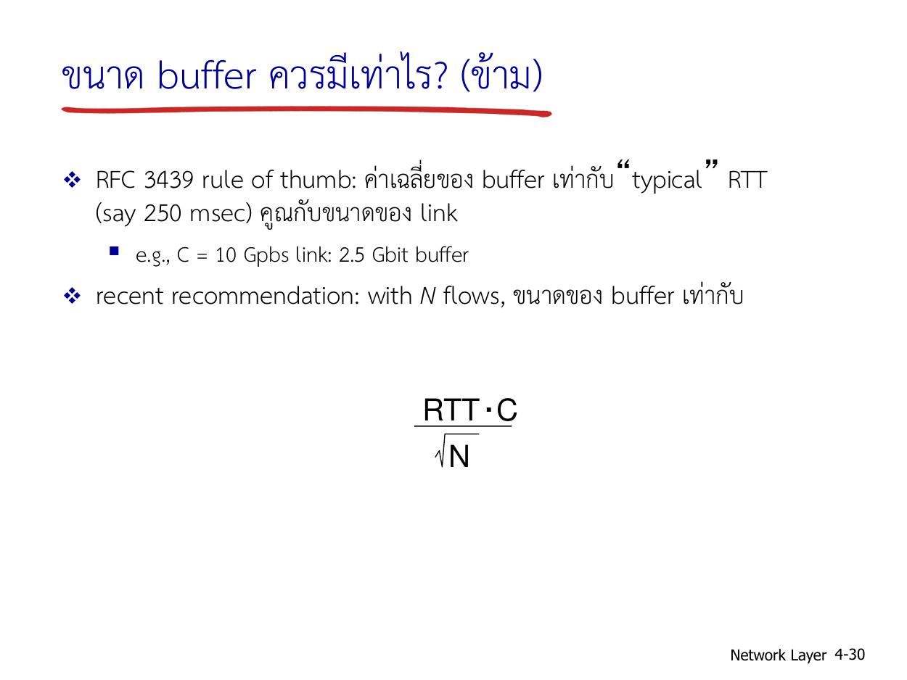
คลิกภาพเพื่อเปิดขยาย
อ่านข้อความต้นฉบับที่สกัดได้ (ไทย/อังกฤษตามไฟล์) ขนาด buffer ควรมีเท่าไร? (ข้าม)
RFC 3439 rule of thumb: ค่าเฉลี่ยของ buffer เท่ากับ“typical” RTT
(say 250 msec) คูณกับขนาดของ link
e.g., C = 10 Gpbs link: 2.5 Gbit buffer
recent recommendation: with N flows, ขนาดของ buffer เท่ากับ
RTT . C
N
Network Layer 4-30 ทบทวนภาษาไทย: 351 บท 4: Network Layer, Subnet และ Routing IPv4, IPv6, CIDR และการแบ่ง Subnet IP Datagram, Fragmentation, NAT และ IPv6 ARP, DHCP, ICMP และ Multicast Membership Forwarding และ Routing Algorithms ติว Subnetting แบบละเอียด พร้อมแก้ค่าคลาดเคลื่อนในต้นฉบับ
กลับสารบัญ ↑ หน้า 31 — คิวที่ Input port ดูภาพต้นฉบับหน้า 31 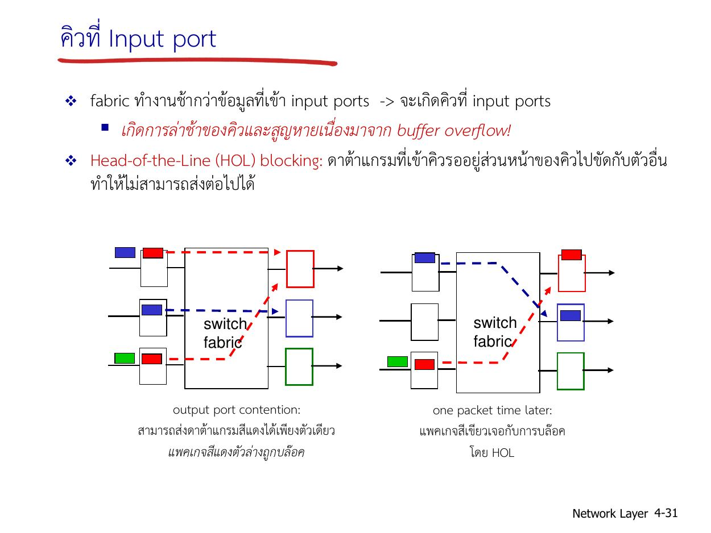
คลิกภาพเพื่อเปิดขยาย
อ่านข้อความต้นฉบับที่สกัดได้ (ไทย/อังกฤษตามไฟล์) คิวที่ Input port
fabric ทางานช้ากว่าข้อมูลที่เข้า input ports -> จะเกิดคิวที่ input ports
เกิดการล่าช้าของคิวและสูญหายเนื่องมาจาก buffer overflow!
Head-of-the-Line (HOL) blocking: ดาต้าแกรมที่เข้าคิวรออยู่ส่วนหน้าของคิวไปขัดกับตัวอื่น
ทาให้ไม่สามารถส่งต่อไปได้
switch switch
fabric fabric
output port contention: one packet time later:
สามารถส่งดาต้าแกรมสีแดงได้เพียงตัวเดียว แพคเกจสีเขียวเจอกับการบล๊อค
แพคเกจสีแดงตัวล่างถูกบล๊อค โดย HOL
Network Layer 4-31 ทบทวนภาษาไทย: 351 บท 4: Network Layer, Subnet และ Routing IPv4, IPv6, CIDR และการแบ่ง Subnet IP Datagram, Fragmentation, NAT และ IPv6 ARP, DHCP, ICMP และ Multicast Membership Forwarding และ Routing Algorithms ติว Subnetting แบบละเอียด พร้อมแก้ค่าคลาดเคลื่อนในต้นฉบับ
กลับสารบัญ ↑ หน้า 32 — Chapter 4: outline ดูภาพต้นฉบับหน้า 32 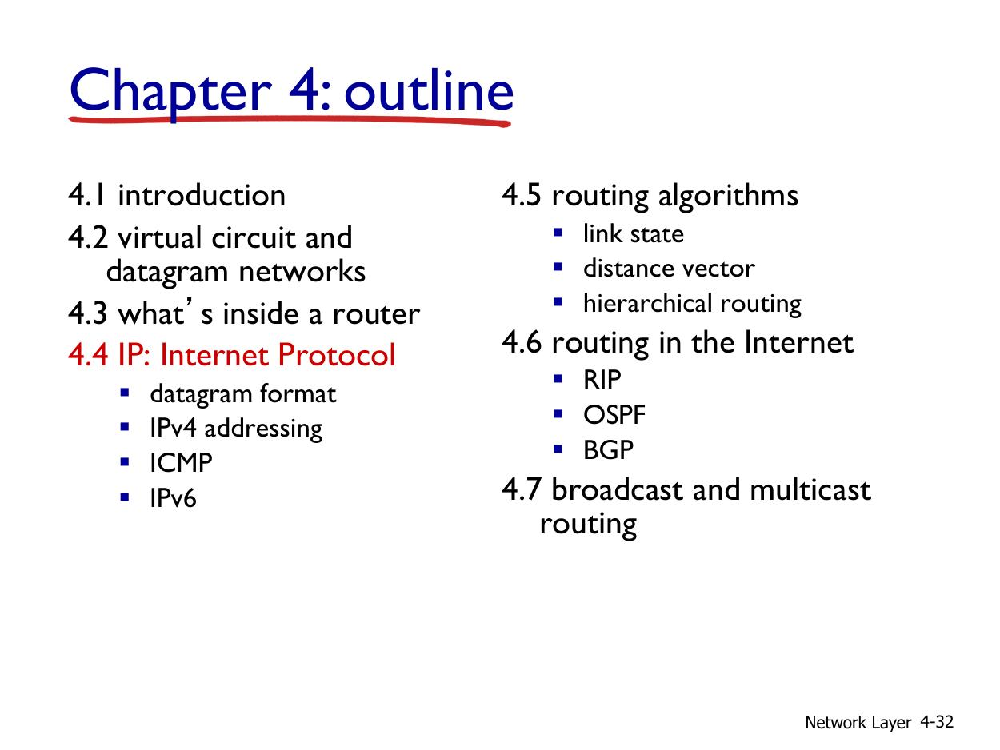
คลิกภาพเพื่อเปิดขยาย
อ่านข้อความต้นฉบับที่สกัดได้ (ไทย/อังกฤษตามไฟล์) Chapter 4: outline
4.1 introduction 4.5 routing algorithms
4.2 virtual circuit and link state
datagram networks distance vector
4.3 what’s inside a router hierarchical routing
4.4 IP: Internet Protocol 4.6 routing in the Internet
datagram format RIP
IPv4 addressing OSPF
ICMP BGP
IPv6 4.7 broadcast and multicast
routing
Network Layer 4-32 ทบทวนภาษาไทย: 351 บท 4: Network Layer, Subnet และ Routing IPv4, IPv6, CIDR และการแบ่ง Subnet IP Datagram, Fragmentation, NAT และ IPv6 ARP, DHCP, ICMP และ Multicast Membership Forwarding และ Routing Algorithms ติว Subnetting แบบละเอียด พร้อมแก้ค่าคลาดเคลื่อนในต้นฉบับ
กลับสารบัญ ↑ หน้า 33 — The Internet network layer ดูภาพต้นฉบับหน้า 33 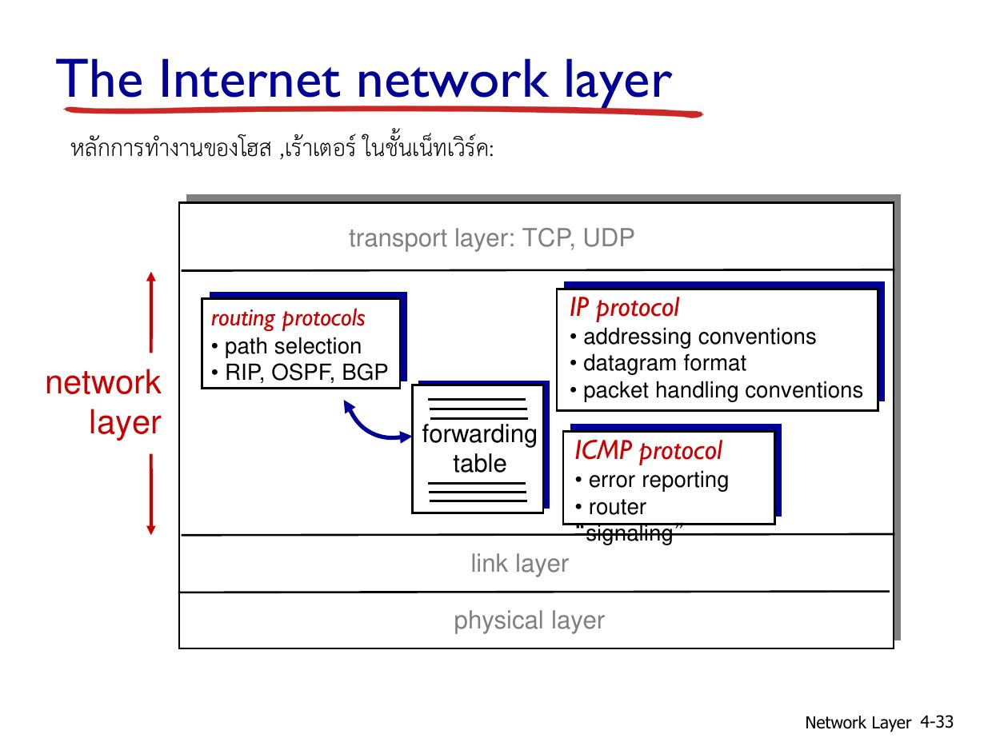
คลิกภาพเพื่อเปิดขยาย
อ่านข้อความต้นฉบับที่สกัดได้ (ไทย/อังกฤษตามไฟล์) The Internet network layer
หลักการทางานของโฮส ,เร้าเตอร์ ในชั้นเน็ทเวิร์ค:
transport layer: TCP, UDP
routing protocols IP protocol
• path selection • addressing conventions
• RIP, OSPF, BGP • datagram format
network • packet handling conventions
layer forwarding
table
ICMP protocol
• error reporting
• router
“signaling”
link layer
physical layer
Network Layer 4-33 ทบทวนภาษาไทย: 351 บท 4: Network Layer, Subnet และ Routing IPv4, IPv6, CIDR และการแบ่ง Subnet IP Datagram, Fragmentation, NAT และ IPv6 ARP, DHCP, ICMP และ Multicast Membership Forwarding และ Routing Algorithms ติว Subnetting แบบละเอียด พร้อมแก้ค่าคลาดเคลื่อนในต้นฉบับ
กลับสารบัญ ↑ หน้า 34 — IP datagram format ดูภาพต้นฉบับหน้า 34 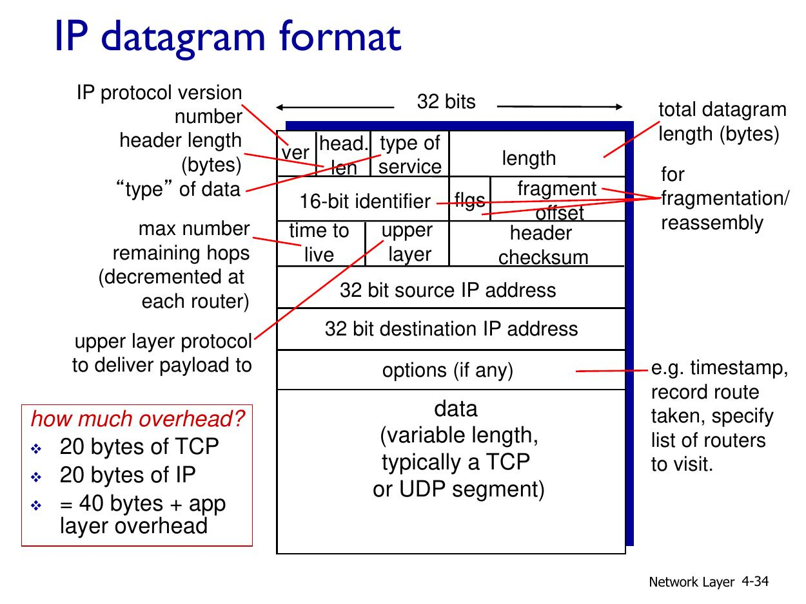
คลิกภาพเพื่อเปิดขยาย
อ่านข้อความต้นฉบับที่สกัดได้ (ไทย/อังกฤษตามไฟล์) IP datagram format
IP protocol version 32 bits
number total datagram
header length length (bytes)
ver head. type of length
(bytes) len service for
“type” of data fragment fragmentation/
16-bit identifier flgs
offset reassembly
max number time to upper header
remaining hops live layer checksum
(decremented at
32 bit source IP address
each router)
32 bit destination IP address
upper layer protocol
to deliver payload to options (if any) e.g. timestamp,
record route
how much overhead? data taken, specify
(variable length, list of routers
20 bytes of TCP
typically a TCP to visit.
20 bytes of IP
or UDP segment)
= 40 bytes + app
layer overhead
Network Layer 4-34 ทบทวนภาษาไทย: 351 บท 4: Network Layer, Subnet และ Routing IPv4, IPv6, CIDR และการแบ่ง Subnet IP Datagram, Fragmentation, NAT และ IPv6 ARP, DHCP, ICMP และ Multicast Membership Forwarding และ Routing Algorithms ติว Subnetting แบบละเอียด พร้อมแก้ค่าคลาดเคลื่อนในต้นฉบับ
กลับสารบัญ ↑ หน้า 35 — IP fragmentation, reassembly ดูภาพต้นฉบับหน้า 35 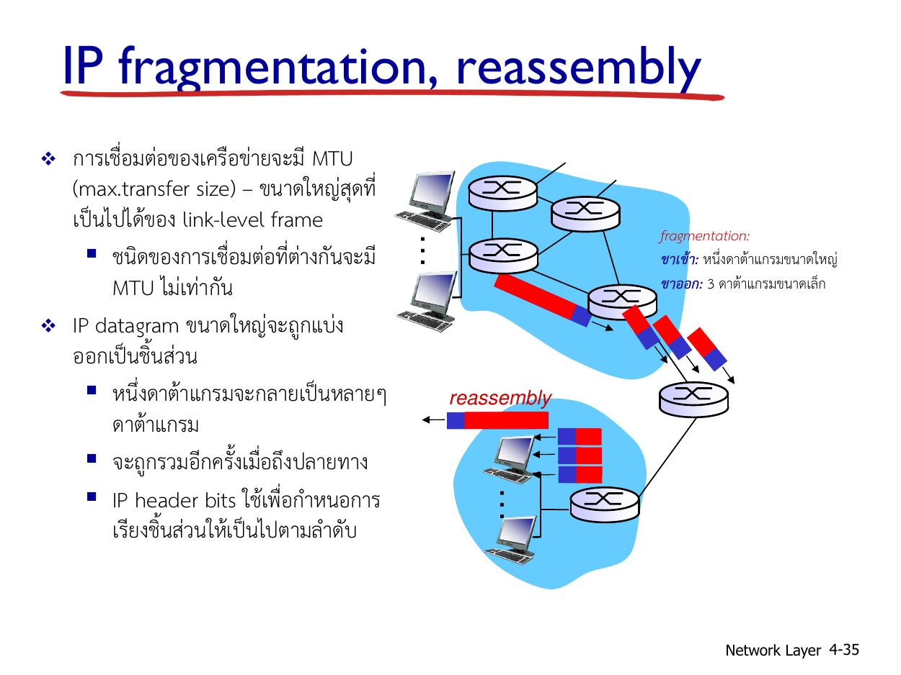
คลิกภาพเพื่อเปิดขยาย
อ่านข้อความต้นฉบับที่สกัดได้ (ไทย/อังกฤษตามไฟล์) IP fragmentation, reassembly
การเชื่อมต่อของเครือข่ายจะมี MTU
(max.transfer size) – ขนาดใหญ่สุดที่
เป็นไปได้ของ link-level frame fragmentation:
…
ชนิดของการเชื่อมต่อที่ต่างกันจะมี ขำเข้ำ: หนึ่งดาต้าแกรมขนาดใหญ่
MTU ไม่เท่ากัน ขำออก: 3 ดาต้าแกรมขนาดเล็ก
IP datagram ขนาดใหญ่จะถูกแบ่ง
ออกเป็นชิ้นส่วน
หนึ่งดาต้าแกรมจะกลายเป็นหลายๆ reassembly
ดาต้าแกรม
จะถูกรวมอีกครั้งเมื่อถึงปลายทาง
IP header bits ใช้เพื่อกาหนอการ …
เรียงชิ้นส่วนให้เป็นไปตามลาดับ
Network Layer 4-35 ทบทวนภาษาไทย: 351 บท 4: Network Layer, Subnet และ Routing IPv4, IPv6, CIDR และการแบ่ง Subnet IP Datagram, Fragmentation, NAT และ IPv6 ARP, DHCP, ICMP และ Multicast Membership Forwarding และ Routing Algorithms ติว Subnetting แบบละเอียด พร้อมแก้ค่าคลาดเคลื่อนในต้นฉบับ
กลับสารบัญ ↑ หน้า 36 — IP fragmentation, reassembly ดูภาพต้นฉบับหน้า 36 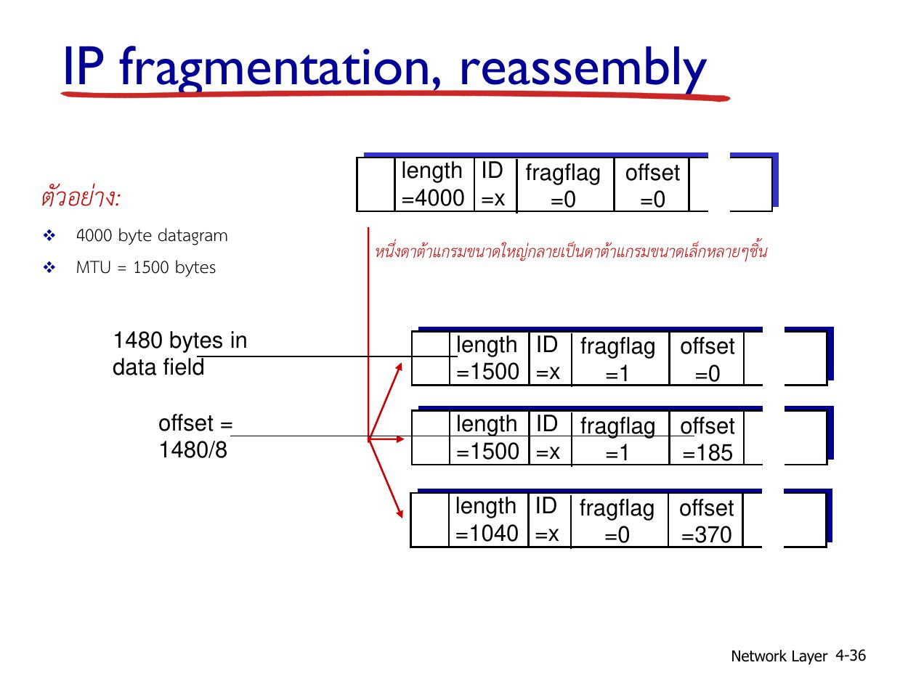
คลิกภาพเพื่อเปิดขยาย
อ่านข้อความต้นฉบับที่สกัดได้ (ไทย/อังกฤษตามไฟล์) IP fragmentation, reassembly
length ID fragflag offset
ตัวอย่าง: =4000 =x =0 =0
4000 byte datagram
หนึ่งดาต้าแกรมขนาดใหญ่กลายเป็นดาต้าแกรมขนาดเล็กหลายๆชิ้น
MTU = 1500 bytes
1480 bytes in length ID fragflag offset
data field =1500 =x =1 =0
offset = length ID fragflag offset
1480/8 =1500 =x =1 =185
length ID fragflag offset
=1040 =x =0 =370
Network Layer 4-36 ทบทวนภาษาไทย: 351 บท 4: Network Layer, Subnet และ Routing IPv4, IPv6, CIDR และการแบ่ง Subnet IP Datagram, Fragmentation, NAT และ IPv6 ARP, DHCP, ICMP และ Multicast Membership Forwarding และ Routing Algorithms ติว Subnetting แบบละเอียด พร้อมแก้ค่าคลาดเคลื่อนในต้นฉบับ
กลับสารบัญ ↑ หน้า 37 — Chapter 4: outline ดูภาพต้นฉบับหน้า 37 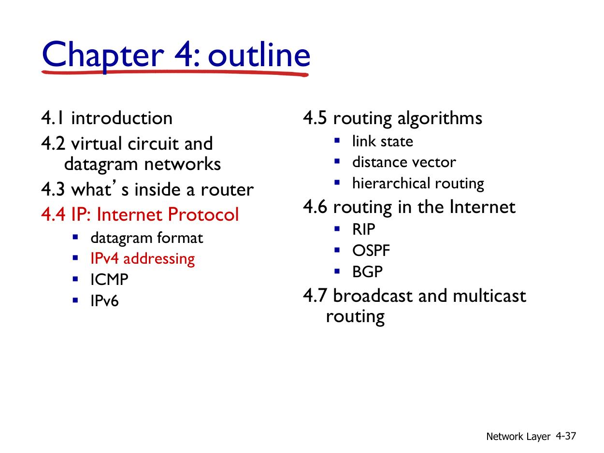
คลิกภาพเพื่อเปิดขยาย
อ่านข้อความต้นฉบับที่สกัดได้ (ไทย/อังกฤษตามไฟล์) Chapter 4: outline
4.1 introduction 4.5 routing algorithms
4.2 virtual circuit and link state
datagram networks distance vector
4.3 what’s inside a router hierarchical routing
4.4 IP: Internet Protocol 4.6 routing in the Internet
datagram format RIP
IPv4 addressing OSPF
ICMP BGP
IPv6 4.7 broadcast and multicast
routing
Network Layer 4-37 ทบทวนภาษาไทย: 351 บท 4: Network Layer, Subnet และ Routing IPv4, IPv6, CIDR และการแบ่ง Subnet IP Datagram, Fragmentation, NAT และ IPv6 ARP, DHCP, ICMP และ Multicast Membership Forwarding และ Routing Algorithms ติว Subnetting แบบละเอียด พร้อมแก้ค่าคลาดเคลื่อนในต้นฉบับ
กลับสารบัญ ↑ หน้า 38 — IP addressing: introduction ดูภาพต้นฉบับหน้า 38 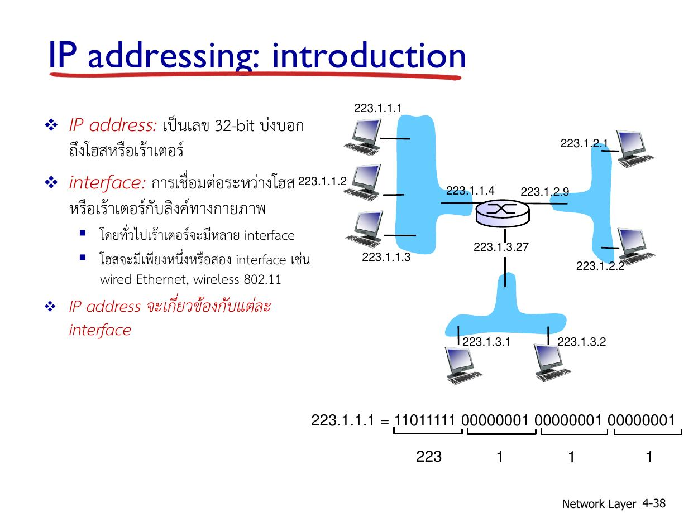
คลิกภาพเพื่อเปิดขยาย
อ่านข้อความต้นฉบับที่สกัดได้ (ไทย/อังกฤษตามไฟล์) IP addressing: introduction
223.1.1.1
IP address: เป็นเลข 32-bit บ่งบอก
ถึงโฮสหรือเร้าเตอร์ 223.1.2.1
interface: การเชื่อมต่อระหว่างโฮส 223.1.1.2 223.1.1.4 223.1.2.9
หรือเร้าเตอร์กับลิงค์ทางกายภาพ
โดยทั่วไปเร้าเตอร์จะมีหลาย interface
223.1.3.27
โฮสจะมีเพียงหนึ่งหรือสอง interface เช่น 223.1.1.3
223.1.2.2
wired Ethernet, wireless 802.11
IP address จะเกี่ยวข้องกับแต่ละ
interface 223.1.3.1 223.1.3.2
223.1.1.1 = 11011111 00000001 00000001 00000001
223 1 1 1
Network Layer 4-38 ทบทวนภาษาไทย: 351 บท 4: Network Layer, Subnet และ Routing IPv4, IPv6, CIDR และการแบ่ง Subnet IP Datagram, Fragmentation, NAT และ IPv6 ARP, DHCP, ICMP และ Multicast Membership Forwarding และ Routing Algorithms ติว Subnetting แบบละเอียด พร้อมแก้ค่าคลาดเคลื่อนในต้นฉบับ
กลับสารบัญ ↑ หน้า 39 — IP addressing: introduction ดูภาพต้นฉบับหน้า 39 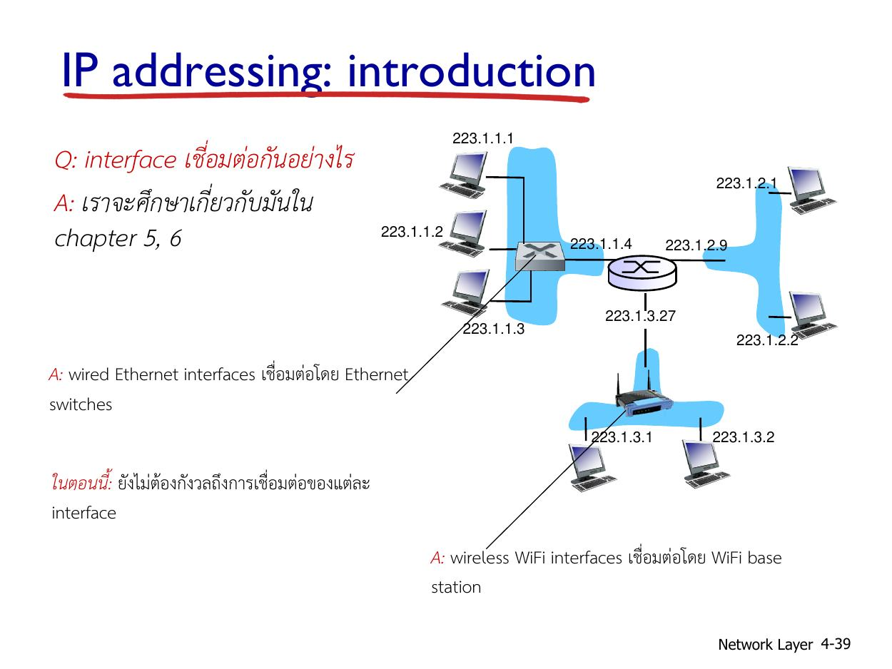
คลิกภาพเพื่อเปิดขยาย
อ่านข้อความต้นฉบับที่สกัดได้ (ไทย/อังกฤษตามไฟล์) IP addressing: introduction
223.1.1.1
Q: interface เชี่อมต่อกันอย่างไร
223.1.2.1
A: เราจะศึกษาเกี่ยวกับมันใน
chapter 5, 6 223.1.1.2
223.1.1.4 223.1.2.9
223.1.3.27
223.1.1.3
223.1.2.2
A: wired Ethernet interfaces เชื่อมต่อโดย Ethernet
switches
223.1.3.1 223.1.3.2
ในตอนนี:้ ยังไม่ต้องกังวลถึงการเชื่อมต่อของแต่ละ
interface
A: wireless WiFi interfaces เชื่อมต่อโดย WiFi base
station
Network Layer 4-39 ทบทวนภาษาไทย: 351 บท 4: Network Layer, Subnet และ Routing IPv4, IPv6, CIDR และการแบ่ง Subnet IP Datagram, Fragmentation, NAT และ IPv6 ARP, DHCP, ICMP และ Multicast Membership Forwarding และ Routing Algorithms ติว Subnetting แบบละเอียด พร้อมแก้ค่าคลาดเคลื่อนในต้นฉบับ
กลับสารบัญ ↑ หน้า 40 — Subnets ดูภาพต้นฉบับหน้า 40 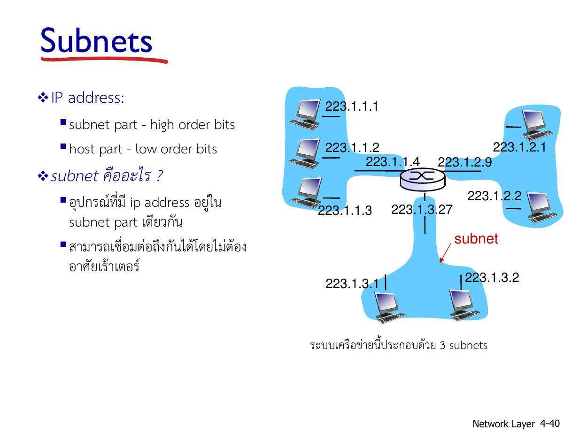
คลิกภาพเพื่อเปิดขยาย
อ่านข้อความต้นฉบับที่สกัดได้ (ไทย/อังกฤษตามไฟล์) Subnets
IP address:
223.1.1.1
subnet part - high order bits
host part - low order bits 223.1.1.2 223.1.2.1
223.1.1.4 223.1.2.9
subnet คืออะไร ?
อุปกรณ์ที่มี ip address อยู่ใน 223.1.1.3 223.1.3.27
223.1.2.2
subnet part เดียวกัน
subnet
สามารถเชื่อมต่อถึงกันได้โดยไม่ต้อง
อาศัยเร้าเตอร์
223.1.3.1 223.1.3.2
ระบบเครือข่ายนี้ประกอบด้วย 3 subnets
Network Layer 4-40 ทบทวนภาษาไทย: 351 บท 4: Network Layer, Subnet และ Routing IPv4, IPv6, CIDR และการแบ่ง Subnet IP Datagram, Fragmentation, NAT และ IPv6 ARP, DHCP, ICMP และ Multicast Membership Forwarding และ Routing Algorithms ติว Subnetting แบบละเอียด พร้อมแก้ค่าคลาดเคลื่อนในต้นฉบับ
กลับสารบัญ ↑ หน้า 41 — Subnets ดูภาพต้นฉบับหน้า 41 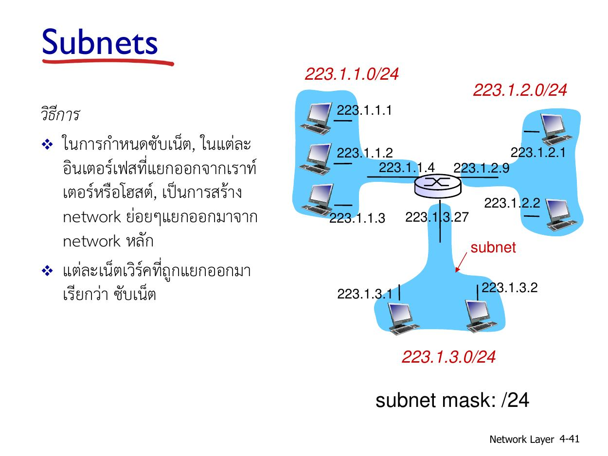
คลิกภาพเพื่อเปิดขยาย
อ่านข้อความต้นฉบับที่สกัดได้ (ไทย/อังกฤษตามไฟล์) Subnets
223.1.1.0/24
223.1.2.0/24
วิธีการ 223.1.1.1
ในการกาหนดซับเน็ต, ในแต่ละ 223.1.1.2 223.1.2.1
อินเตอร์เฟสที่แยกออกจากเราท์ 223.1.1.4 223.1.2.9
เตอร์หรือโฮสต์, เป็นการสร้าง 223.1.2.2
network ย่อยๆแยกออกมาจาก 223.1.1.3 223.1.3.27
network หลัก subnet
แต่ละเน็ตเวิร์คที่ถูกแยกออกมา
เรียกว่า ซับเน็ต 223.1.3.1 223.1.3.2
223.1.3.0/24
subnet mask: /24
Network Layer 4-41 ทบทวนภาษาไทย: 351 บท 4: Network Layer, Subnet และ Routing IPv4, IPv6, CIDR และการแบ่ง Subnet IP Datagram, Fragmentation, NAT และ IPv6 ARP, DHCP, ICMP และ Multicast Membership Forwarding และ Routing Algorithms ติว Subnetting แบบละเอียด พร้อมแก้ค่าคลาดเคลื่อนในต้นฉบับ
กลับสารบัญ ↑ หน้า 42 — Subnets 223.1.1.2 ดูภาพต้นฉบับหน้า 42 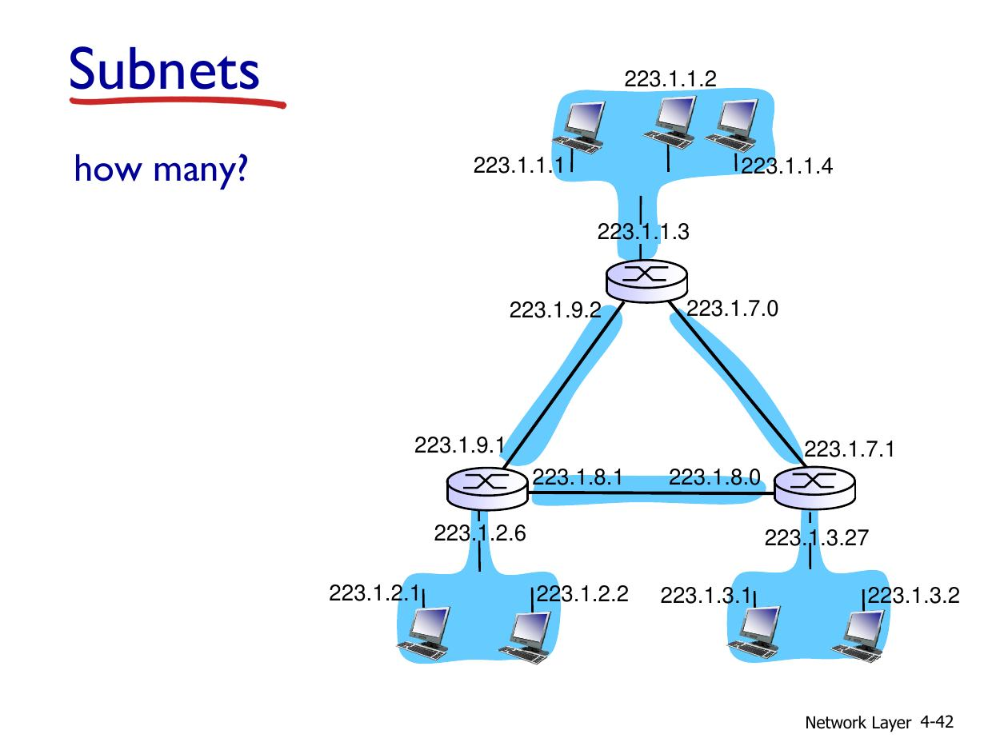
คลิกภาพเพื่อเปิดขยาย
อ่านข้อความต้นฉบับที่สกัดได้ (ไทย/อังกฤษตามไฟล์) Subnets 223.1.1.2
how many? 223.1.1.1 223.1.1.4
223.1.1.3
223.1.9.2 223.1.7.0
223.1.9.1 223.1.7.1
223.1.8.1 223.1.8.0
223.1.2.6 223.1.3.27
223.1.2.1 223.1.2.2 223.1.3.1 223.1.3.2
Network Layer 4-42 ทบทวนภาษาไทย: 351 บท 4: Network Layer, Subnet และ Routing IPv4, IPv6, CIDR และการแบ่ง Subnet IP Datagram, Fragmentation, NAT และ IPv6 ARP, DHCP, ICMP และ Multicast Membership Forwarding และ Routing Algorithms ติว Subnetting แบบละเอียด พร้อมแก้ค่าคลาดเคลื่อนในต้นฉบับ
กลับสารบัญ ↑ หน้า 43 — IP addressing: CIDR ดูภาพต้นฉบับหน้า 43 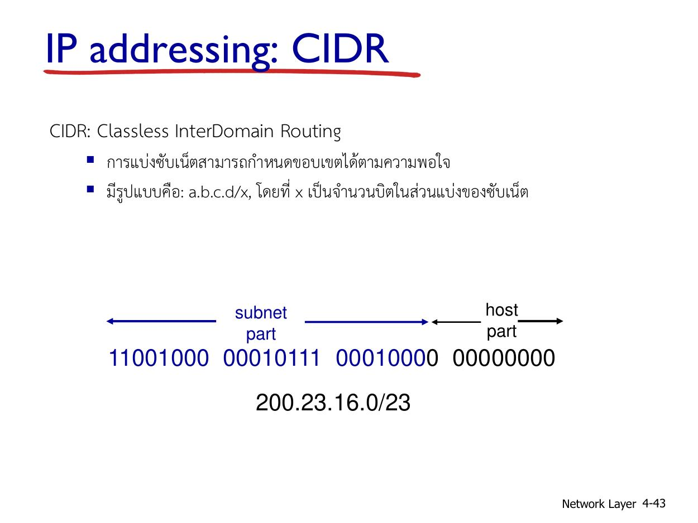
คลิกภาพเพื่อเปิดขยาย
อ่านข้อความต้นฉบับที่สกัดได้ (ไทย/อังกฤษตามไฟล์) IP addressing: CIDR
CIDR: Classless InterDomain Routing
การแบ่งซับเน็ตสามารถกาหนดขอบเขตได้ตามความพอใจ
มีรูปแบบคือ: a.b.c.d/x, โดยที่ x เป็นจานวนบิตในส่วนแบ่งของซับเน็ต
subnet host
part part
11001000 00010111 00010000 00000000
200.23.16.0/23
Network Layer 4-43 ทบทวนภาษาไทย: 351 บท 4: Network Layer, Subnet และ Routing IPv4, IPv6, CIDR และการแบ่ง Subnet IP Datagram, Fragmentation, NAT และ IPv6 ARP, DHCP, ICMP และ Multicast Membership Forwarding และ Routing Algorithms ติว Subnetting แบบละเอียด พร้อมแก้ค่าคลาดเคลื่อนในต้นฉบับ
กลับสารบัญ ↑ หน้า 44 — IP addresses: how to get one? ดูภาพต้นฉบับหน้า 44 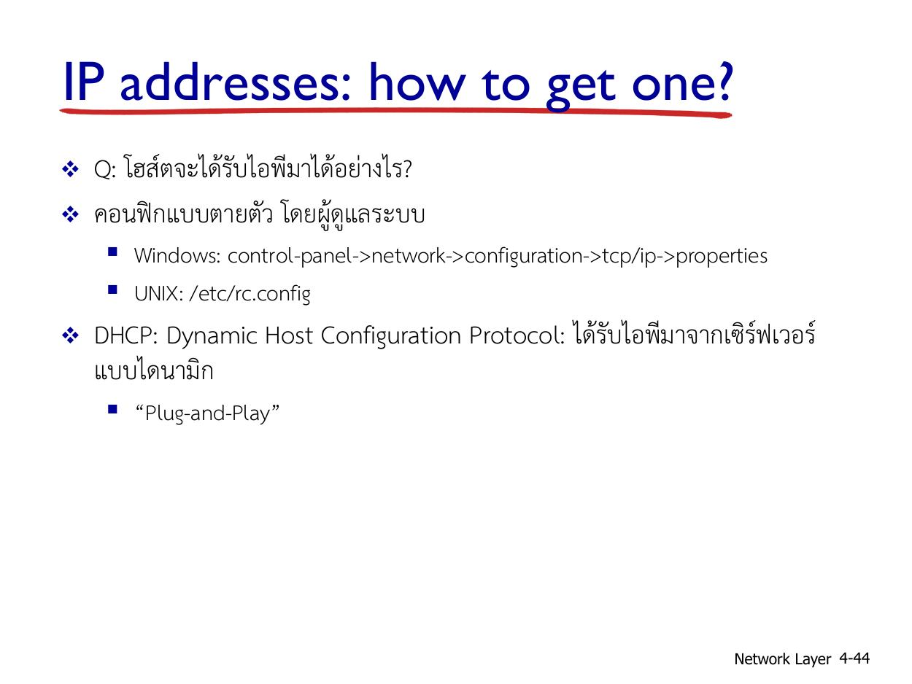
คลิกภาพเพื่อเปิดขยาย
อ่านข้อความต้นฉบับที่สกัดได้ (ไทย/อังกฤษตามไฟล์) IP addresses: how to get one?
Q: โฮส์ตจะได้รับไอพีมาได้อย่างไร?
คอนฟิกแบบตายตัว โดยผู้ดูแลระบบ
Windows: control-panel->network->configuration->tcp/ip->properties
UNIX: /etc/rc.config
DHCP: Dynamic Host Configuration Protocol: ได้รับไอพีมาจากเซิร์ฟเวอร์
แบบไดนามิก
“Plug-and-Play”
Network Layer 4-44 ทบทวนภาษาไทย: 351 บท 4: Network Layer, Subnet และ Routing IPv4, IPv6, CIDR และการแบ่ง Subnet IP Datagram, Fragmentation, NAT และ IPv6 ARP, DHCP, ICMP และ Multicast Membership Forwarding และ Routing Algorithms ติว Subnetting แบบละเอียด พร้อมแก้ค่าคลาดเคลื่อนในต้นฉบับ
กลับสารบัญ ↑ หน้า 45 — DHCP: Dynamic Host Configuration Protocol ดูภาพต้นฉบับหน้า 45 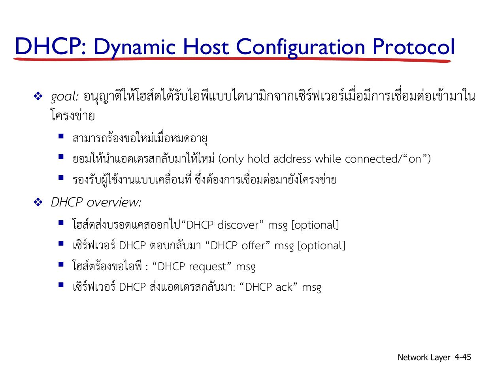
คลิกภาพเพื่อเปิดขยาย
อ่านข้อความต้นฉบับที่สกัดได้ (ไทย/อังกฤษตามไฟล์) DHCP: Dynamic Host Configuration Protocol
goal: อนุญาติให้โฮส์ตได้รับไอพีแบบไดนามิกจากเซิร์ฟเวอร์เมื่อมีการเชื่อมต่อเข้ามาใน
โครงข่าย
สามารถร้องขอใหม่เมื่อหมดอายุ
ยอมให้นาแอดเดรสกลับมาให้ใหม่ (only hold address while connected/“on”)
รองรับผู้ใช้งานแบบเคลื่อนที่ ซึ่งต้องการเชื่อมต่อมายังโครงข่าย
DHCP overview:
โฮส์ตส่งบรอดแคสออกไป“DHCP discover” msg [optional]
เซิร์ฟเวอร์ DHCP ตอบกลับมา “DHCP offer” msg [optional]
โฮส์ตร้องขอไอพี : “DHCP request” msg
เซิร์ฟเวอร์ DHCP ส่งแอดเดรสกลับมา: “DHCP ack” msg
Network Layer 4-45 ทบทวนภาษาไทย: 351 บท 4: Network Layer, Subnet และ Routing IPv4, IPv6, CIDR และการแบ่ง Subnet IP Datagram, Fragmentation, NAT และ IPv6 ARP, DHCP, ICMP และ Multicast Membership Forwarding และ Routing Algorithms ติว Subnetting แบบละเอียด พร้อมแก้ค่าคลาดเคลื่อนในต้นฉบับ
กลับสารบัญ ↑ หน้า 46 — DHCP client-server scenario ดูภาพต้นฉบับหน้า 46 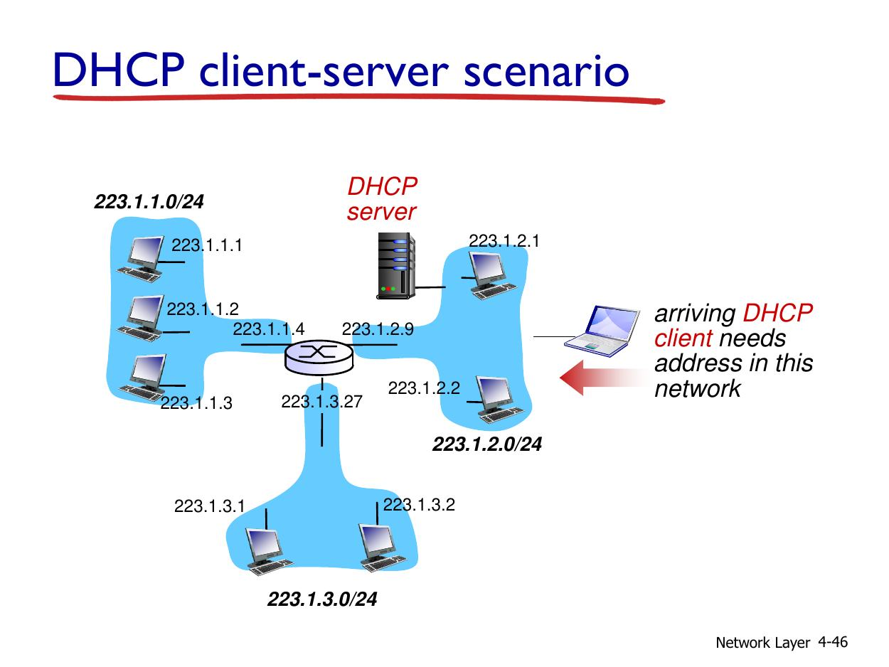
คลิกภาพเพื่อเปิดขยาย
อ่านข้อความต้นฉบับที่สกัดได้ (ไทย/อังกฤษตามไฟล์) DHCP client-server scenario
DHCP
223.1.1.0/24
server
223.1.1.1 223.1.2.1
223.1.1.2 arriving DHCP
223.1.1.4 223.1.2.9
client needs
address in this
223.1.3.27
223.1.2.2 network
223.1.1.3
223.1.2.0/24
223.1.3.1 223.1.3.2
223.1.3.0/24
Network Layer 4-46 ทบทวนภาษาไทย: 351 บท 4: Network Layer, Subnet และ Routing IPv4, IPv6, CIDR และการแบ่ง Subnet IP Datagram, Fragmentation, NAT และ IPv6 ARP, DHCP, ICMP และ Multicast Membership Forwarding และ Routing Algorithms ติว Subnetting แบบละเอียด พร้อมแก้ค่าคลาดเคลื่อนในต้นฉบับ
กลับสารบัญ ↑ หน้า 47 — DHCP client-server scenario ดูภาพต้นฉบับหน้า 47 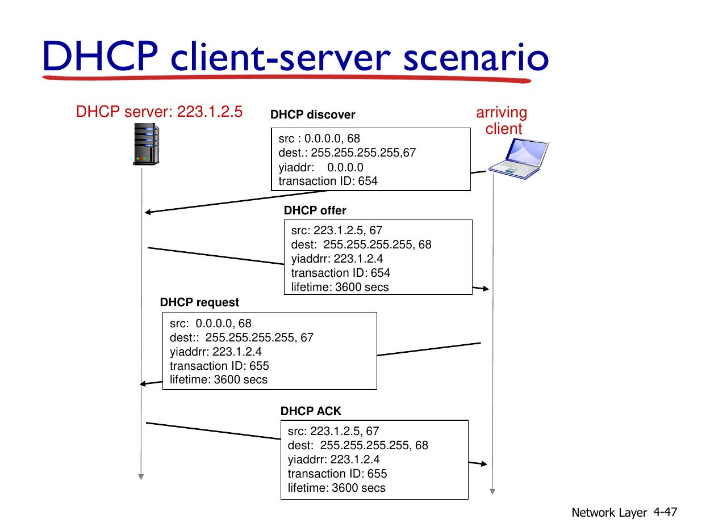
คลิกภาพเพื่อเปิดขยาย
อ่านข้อความต้นฉบับที่สกัดได้ (ไทย/อังกฤษตามไฟล์) DHCP client-server scenario
DHCP server: 223.1.2.5 DHCP discover arriving
client
src : 0.0.0.0, 68
dest.: 255.255.255.255,67
yiaddr: 0.0.0.0
transaction ID: 654
DHCP offer
src: 223.1.2.5, 67
dest: 255.255.255.255, 68
yiaddrr: 223.1.2.4
transaction ID: 654
lifetime: 3600 secs
DHCP request
src: 0.0.0.0, 68
dest:: 255.255.255.255, 67
yiaddrr: 223.1.2.4
transaction ID: 655
lifetime: 3600 secs
DHCP ACK
src: 223.1.2.5, 67
dest: 255.255.255.255, 68
yiaddrr: 223.1.2.4
transaction ID: 655
lifetime: 3600 secs
Network Layer 4-47 ทบทวนภาษาไทย: 351 บท 4: Network Layer, Subnet และ Routing IPv4, IPv6, CIDR และการแบ่ง Subnet IP Datagram, Fragmentation, NAT และ IPv6 ARP, DHCP, ICMP และ Multicast Membership Forwarding และ Routing Algorithms ติว Subnetting แบบละเอียด พร้อมแก้ค่าคลาดเคลื่อนในต้นฉบับ
กลับสารบัญ ↑ หน้า 48 — DHCP: เป็นมากกว่าการจ่ายไอพี ดูภาพต้นฉบับหน้า 48 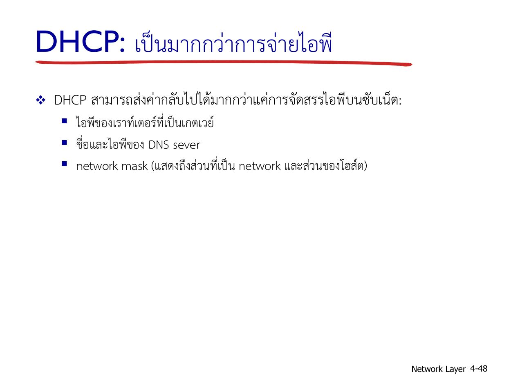
คลิกภาพเพื่อเปิดขยาย
อ่านข้อความต้นฉบับที่สกัดได้ (ไทย/อังกฤษตามไฟล์) DHCP: เป็นมากกว่าการจ่ายไอพี
DHCP สามารถส่งค่ากลับไปได้มากกว่าแค่การจัดสรรไอพีบนซับเน็ต:
ไอพีของเราท์เตอร์ที่เป็นเกตเวย์
ชื่อและไอพีของ DNS sever
network mask (แสดงถึงส่วนที่เป็น network และส่วนของโฮส์ต)
Network Layer 4-48 ทบทวนภาษาไทย: 351 บท 4: Network Layer, Subnet และ Routing IPv4, IPv6, CIDR และการแบ่ง Subnet IP Datagram, Fragmentation, NAT และ IPv6 ARP, DHCP, ICMP และ Multicast Membership Forwarding และ Routing Algorithms ติว Subnetting แบบละเอียด พร้อมแก้ค่าคลาดเคลื่อนในต้นฉบับ
กลับสารบัญ ↑ หน้า 49 — DHCP: example ดูภาพต้นฉบับหน้า 49 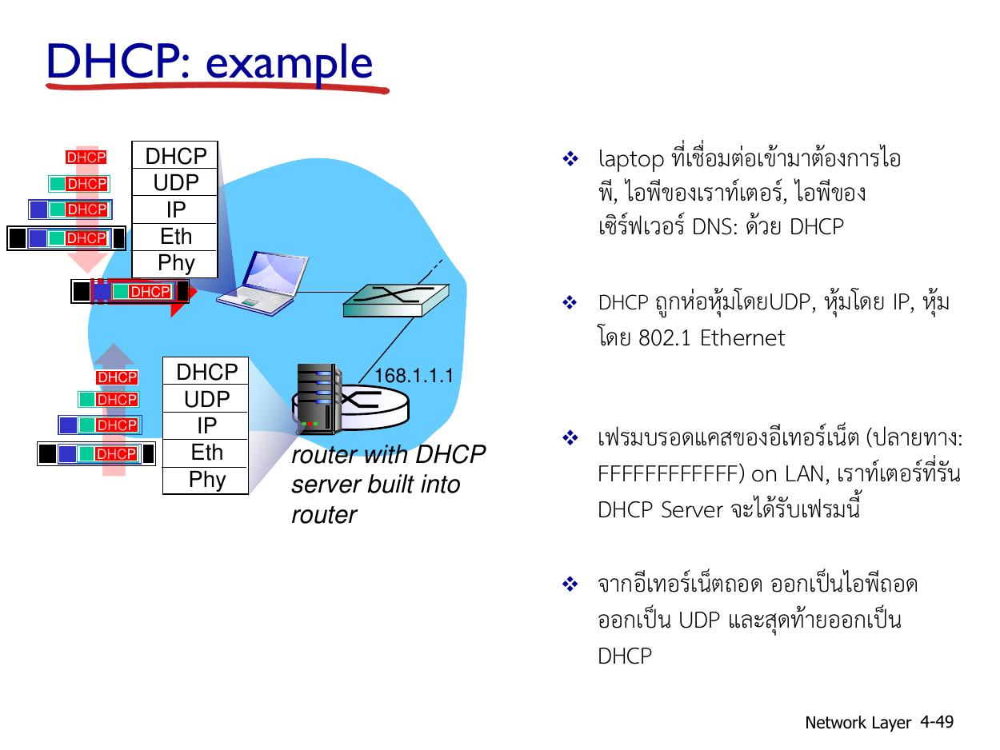
คลิกภาพเพื่อเปิดขยาย
อ่านข้อความต้นฉบับที่สกัดได้ (ไทย/อังกฤษตามไฟล์) DHCP: example
DHCP DHCP laptop ที่เชื่อมต่อเข้ามาต้องการไอ
DHCP UDP พี, ไอพีของเราท์เตอร์, ไอพีของ
DHCP IP
DHCP Eth เซิร์ฟเวอร์ DNS: ด้วย DHCP
Phy
DHCP
DHCP ถูกห่อหุ้มโดยUDP, หุ้มโดย IP, หุ้ม
โดย 802.1 Ethernet
DHCP DHCP 168.1.1.1
DHCP UDP
DHCP IP
Eth
เฟรมบรอดแคสของอีเทอร์เน็ต (ปลายทาง:
DHCP router with DHCP
Phy server built into FFFFFFFFFFFF) on LAN, เราท์เตอร์ที่รัน
router DHCP Server จะได้รับเฟรมนี้
จากอีเทอร์เน็ตถอด ออกเป็นไอพีถอด
ออกเป็น UDP และสุดท้ายออกเป็น
DHCP
Network Layer 4-49 ทบทวนภาษาไทย: 351 บท 4: Network Layer, Subnet และ Routing IPv4, IPv6, CIDR และการแบ่ง Subnet IP Datagram, Fragmentation, NAT และ IPv6 ARP, DHCP, ICMP และ Multicast Membership Forwarding และ Routing Algorithms ติว Subnetting แบบละเอียด พร้อมแก้ค่าคลาดเคลื่อนในต้นฉบับ
กลับสารบัญ ↑ หน้า 50 — DHCP: example ดูภาพต้นฉบับหน้า 50 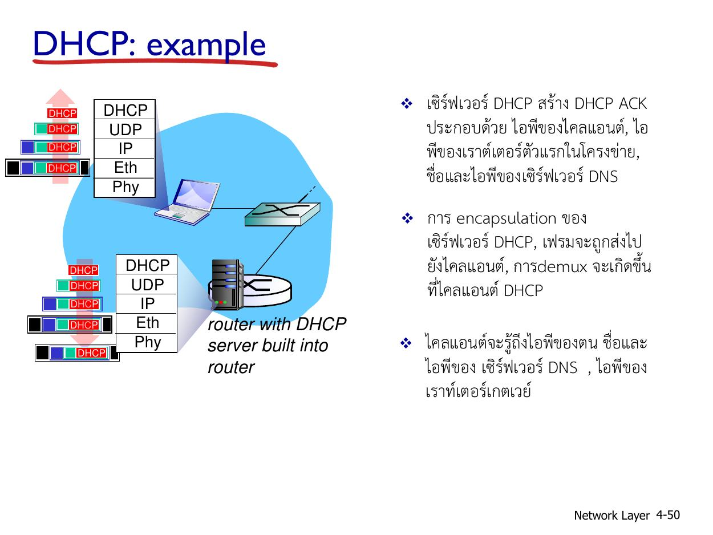
คลิกภาพเพื่อเปิดขยาย
อ่านข้อความต้นฉบับที่สกัดได้ (ไทย/อังกฤษตามไฟล์) DHCP: example
DHCP DHCP เซิร์ฟเวอร์ DHCP สร้าง DHCP ACK
DHCP UDP ประกอบด้วย ไอพีของไคลแอนต์, ไอ
DHCP IP พีของเราต์เตอร์ตัวแรกในโครงข่าย,
DHCP Eth
Phy
ชื่อและไอพีของเซิร์ฟเวอร์ DNS
การ encapsulation ของ
เซิร์ฟเวอร์ DHCP, เฟรมจะถูกส่งไป
DHCP DHCP ยังไคลแอนต์, การdemux จะเกิดขึ้น
DHCP UDP ที่ไคลแอนต์ DHCP
DHCP IP
DHCP Eth router with DHCP
DHCP
Phy server built into ไคลแอนต์จะรู้ถึงไอพีของตน ชื่อและ
router ไอพีของ เซิร์ฟเวอร์ DNS , ไอพีของ
เราท์เตอร์เกตเวย์
Network Layer 4-50 ทบทวนภาษาไทย: 351 บท 4: Network Layer, Subnet และ Routing IPv4, IPv6, CIDR และการแบ่ง Subnet IP Datagram, Fragmentation, NAT และ IPv6 ARP, DHCP, ICMP และ Multicast Membership Forwarding และ Routing Algorithms ติว Subnetting แบบละเอียด พร้อมแก้ค่าคลาดเคลื่อนในต้นฉบับ
กลับสารบัญ ↑ หน้า 51 — DHCP: Wireshark ดูภาพต้นฉบับหน้า 51 คลิกภาพเพื่อเปิดขยาย
อ่านข้อความต้นฉบับที่สกัดได้ (ไทย/อังกฤษตามไฟล์) DHCP: Wireshark
output (home LAN, Message type: Boot Reply (2)
Hardware type: Ethernet reply
ข้าม)
Hardware address length: 6
Hops: 0
Transaction ID: 0x6b3a11b7
Seconds elapsed: 0
Message type: Boot Request (1) Bootp flags: 0x0000 (Unicast)
Hardware type: Ethernet Client IP address: 192.168.1.101 (192.168.1.101)
Hardware address length: 6 Your (client) IP address: 0.0.0.0 (0.0.0.0)
Hops: 0
Transaction ID: 0x6b3a11b7
request Next server IP address: 192.168.1.1 (192.168.1.1)
Relay agent IP address: 0.0.0.0 (0.0.0.0)
Seconds elapsed: 0 Client MAC address: Wistron_23:68:8a (00:16:d3:23:68:8a)
Bootp flags: 0x0000 (Unicast) Server host name not given
Client IP address: 0.0.0.0 (0.0.0.0) Boot file name not given
Your (client) IP address: 0.0.0.0 (0.0.0.0) Magic cookie: (OK)
Next server IP address: 0.0.0.0 (0.0.0.0) Option: (t=53,l=1) DHCP Message Type = DHCP ACK
Relay agent IP address: 0.0.0.0 (0.0.0.0) Option: (t=54,l=4) Server Identifier = 192.168.1.1
Client MAC address: Wistron_23:68:8a (00:16:d3:23:68:8a) Option: (t=1,l=4) Subnet Mask = 255.255.255.0
Server host name not given Option: (t=3,l=4) Router = 192.168.1.1
Boot file name not given Option: (6) Domain Name Server
Magic cookie: (OK) Length: 12; Value: 445747E2445749F244574092;
Option: (t=53,l=1) DHCP Message Type = DHCP Request IP Address: 68.87.71.226;
Option: (61) Client identifier IP Address: 68.87.73.242;
Length: 7; Value: 010016D323688A; IP Address: 68.87.64.146
Hardware type: Ethernet Option: (t=15,l=20) Domain Name = "hsd1.ma.comcast.net."
Client MAC address: Wistron_23:68:8a (00:16:d3:23:68:8a)
Option: (t=50,l=4) Requested IP Address = 192.168.1.101
Option: (t=12,l=5) Host Name = "nomad"
Option: (55) Parameter Request List
Length: 11; Value: 010F03062C2E2F1F21F92B
1 = Subnet Mask; 15 = Domain Name
3 = Router; 6 = Domain Name Server
44 = NetBIOS over TCP/IP Name Server
……
Network Layer 4-51 ทบทวนภาษาไทย: 351 บท 4: Network Layer, Subnet และ Routing IPv4, IPv6, CIDR และการแบ่ง Subnet IP Datagram, Fragmentation, NAT และ IPv6 ARP, DHCP, ICMP และ Multicast Membership Forwarding และ Routing Algorithms ติว Subnetting แบบละเอียด พร้อมแก้ค่าคลาดเคลื่อนในต้นฉบับ
กลับสารบัญ ↑ หน้า 52 — IP addresses: how to get one? ดูภาพต้นฉบับหน้า 52 คลิกภาพเพื่อเปิดขยาย
อ่านข้อความต้นฉบับที่สกัดได้ (ไทย/อังกฤษตามไฟล์) IP addresses: how to get one?
Q: how does network get subnet part of IP addr?
A: gets allocated portion of its provider ISP’s address
space
ISP's block 11001000 00010111 00010000 00000000 200.23.16.0/20
Organization 0 11001000 00010111 00010000 00000000 200.23.16.0/23
Organization 1 11001000 00010111 00010010 00000000 200.23.18.0/23
Organization 2 11001000 00010111 00010100 00000000 200.23.20.0/23
... ….. …. ….
Organization 7 11001000 00010111 00011110 00000000 200.23.30.0/23
Network Layer 4-52 ทบทวนภาษาไทย: 351 บท 4: Network Layer, Subnet และ Routing IPv4, IPv6, CIDR และการแบ่ง Subnet IP Datagram, Fragmentation, NAT และ IPv6 ARP, DHCP, ICMP และ Multicast Membership Forwarding และ Routing Algorithms ติว Subnetting แบบละเอียด พร้อมแก้ค่าคลาดเคลื่อนในต้นฉบับ
กลับสารบัญ ↑ หน้า 53 — Hierarchical addressing: route aggregation ดูภาพต้นฉบับหน้า 53 คลิกภาพเพื่อเปิดขยาย
อ่านข้อความต้นฉบับที่สกัดได้ (ไทย/อังกฤษตามไฟล์) Hierarchical addressing: route aggregation
hierarchical addressing allows efficient advertisement of routing
information:
Organization 0
200.23.16.0/23
Organization 1
“Send me anything
200.23.18.0/23 with addresses
Organization 2 beginning
200.23.20.0/23 . Fly-By-Night-ISP 200.23.16.0/20”
.
. . Internet
.
Organization 7 .
200.23.30.0/23
“Send me anything
ISPs-R-Us
with addresses
beginning
199.31.0.0/16”
Network Layer 4-53 ทบทวนภาษาไทย: 351 บท 4: Network Layer, Subnet และ Routing IPv4, IPv6, CIDR และการแบ่ง Subnet IP Datagram, Fragmentation, NAT และ IPv6 ARP, DHCP, ICMP และ Multicast Membership Forwarding และ Routing Algorithms ติว Subnetting แบบละเอียด พร้อมแก้ค่าคลาดเคลื่อนในต้นฉบับ
กลับสารบัญ ↑ หน้า 54 — Hierarchical addressing: more specific routes ดูภาพต้นฉบับหน้า 54 คลิกภาพเพื่อเปิดขยาย
อ่านข้อความต้นฉบับที่สกัดได้ (ไทย/อังกฤษตามไฟล์) Hierarchical addressing: more specific routes
ISPs-R-Us has a more specific route to Organization 1
Organization 0
200.23.16.0/23
“Send me anything
with addresses
Organization 2 beginning
200.23.20.0/23 . Fly-By-Night-ISP 200.23.16.0/20”
.
. . Internet
.
Organization 7 .
200.23.30.0/23
“Send me anything
ISPs-R-Us
with addresses
Organization 1 beginning 199.31.0.0/16
or 200.23.18.0/23”
200.23.18.0/23
Network Layer 4-54 ทบทวนภาษาไทย: 351 บท 4: Network Layer, Subnet และ Routing IPv4, IPv6, CIDR และการแบ่ง Subnet IP Datagram, Fragmentation, NAT และ IPv6 ARP, DHCP, ICMP และ Multicast Membership Forwarding และ Routing Algorithms ติว Subnetting แบบละเอียด พร้อมแก้ค่าคลาดเคลื่อนในต้นฉบับ
กลับสารบัญ ↑ หน้า 55 — IP addressing: the last word... ดูภาพต้นฉบับหน้า 55 คลิกภาพเพื่อเปิดขยาย
อ่านข้อความต้นฉบับที่สกัดได้ (ไทย/อังกฤษตามไฟล์) IP addressing: the last word...
Q: ISP ได้รับบล็อกของที่อยู่ได้อย่างไร?
A: ICANN: Internet Corporation for Assigned
Names and Numbers http://www.icann.org/
จัดสรร addresses
manage DNS
กาหนดชื่อโดเมน, ช่วยแก้ปัญหาความขัดแย้งที่เกิดขึ้น
Network Layer 4-55 ทบทวนภาษาไทย: 351 บท 4: Network Layer, Subnet และ Routing IPv4, IPv6, CIDR และการแบ่ง Subnet IP Datagram, Fragmentation, NAT และ IPv6 ARP, DHCP, ICMP และ Multicast Membership Forwarding และ Routing Algorithms ติว Subnetting แบบละเอียด พร้อมแก้ค่าคลาดเคลื่อนในต้นฉบับ
กลับสารบัญ ↑ หน้า 56 — NAT: network address translation ดูภาพต้นฉบับหน้า 56 คลิกภาพเพื่อเปิดขยาย
อ่านข้อความต้นฉบับที่สกัดได้ (ไทย/อังกฤษตามไฟล์) NAT: network address translation
rest of local network
Internet (e.g., home network)
10.0.0/24 10.0.0.1
10.0.0.4
10.0.0.2
138.76.29.7
10.0.0.3
ดาต้าแกรมทั้งหมดออกจากเครือข่ายท้องถิ่น ดาต้าแกรมจากต้นทาง หรือ ดาต้าแกรมไปยังปลายทาง
จะมี Source IP address เบอร์เดียวกัน (ซึ่ง ในเครือข่ายนี้ จะมีทอี่ ยู่ต้นทาง หรือ ปลายทางเป็น
เป็นของ NAT): 138.76.29.7, 10.0.0/24 (ตามปกติ)
ต่างที่ Source Port
Network Layer 4-56 ทบทวนภาษาไทย: 351 บท 4: Network Layer, Subnet และ Routing IPv4, IPv6, CIDR และการแบ่ง Subnet IP Datagram, Fragmentation, NAT และ IPv6 ARP, DHCP, ICMP และ Multicast Membership Forwarding และ Routing Algorithms ติว Subnetting แบบละเอียด พร้อมแก้ค่าคลาดเคลื่อนในต้นฉบับ
กลับสารบัญ ↑ หน้า 57 — NAT: network address translation ดูภาพต้นฉบับหน้า 57 คลิกภาพเพื่อเปิดขยาย
อ่านข้อความต้นฉบับที่สกัดได้ (ไทย/อังกฤษตามไฟล์) NAT: network address translation
motivation: เครือข่ายท้องถิ่นใช้ IP address หมายเลขเดียว:
โลกภายนอกจะเห็นทั้งเครือข่ายเป็น IP address เดียว (หมายเลช port ต่าง)
ไม่จาเป็นต้องขอช่วงของ IP Address จาก ISP: แค่หนึ่ง IP address สาหรับทุกอุปกรณ์
สามารถเปลี่ยนที่อยู่ของอุปกรณ์ในเครือข่ายท้องถิ่นโดยไม่ต้องแจ้งโลกภายนอก
สามารถเปลี่ยน ISP โดยไม่ต้องเปลี่ยนที่อยู่ของอุปกรณ์ในเครือข่ายท้องถิ่น
อุปกรณ์ในเครือข่ายท้องถิ่นไม่สามารถถูกระบุที่อยู่ได้อย่างชัดเจน, สามารถมองเห็นได้จากโลก
ภายนอก (ปลอดภัยเพิ่มขึ้น)
Network Layer 4-57 ทบทวนภาษาไทย: 351 บท 4: Network Layer, Subnet และ Routing IPv4, IPv6, CIDR และการแบ่ง Subnet IP Datagram, Fragmentation, NAT และ IPv6 ARP, DHCP, ICMP และ Multicast Membership Forwarding และ Routing Algorithms ติว Subnetting แบบละเอียด พร้อมแก้ค่าคลาดเคลื่อนในต้นฉบับ
กลับสารบัญ ↑ หน้า 58 — NAT: network address translation ดูภาพต้นฉบับหน้า 58 คลิกภาพเพื่อเปิดขยาย
อ่านข้อความต้นฉบับที่สกัดได้ (ไทย/อังกฤษตามไฟล์) NAT: network address translation
การดาเนินการ: router ที่เป็น NAT ต้อง:
เดต้าแกรมขาออก: แทนที่ (source IP address, หมายเลขพอร์ต) ของทุกเดตาแกรมขาออกให้
เป็น (IP address ของ NAT, หมายเลขพอร์ตใหม่)
. . . clients/servers ที่อยู่ไกลจะตอบโดยใช้ (IP address ของ NAT, หมายเลขพอร์ตใหม่) เป็นที่
อยู่ปลายทาง
จา ทุก ๆ คู่การแปลจาก (source IP address, หมายเลขพอร์ต) ไปเป็น (IP address ของ NAT,
หมายเลขพอร์ตใหม่) ในตารางการแปลของ NAT
เดต้าแกรมขาเข้า: แทนที่ (IP address ของ NAT, หมายเลขพอร์ตใหม่) ใน field ปลายทางของ
ทุก ๆ เดต้าแกรมด้วย (source IP address, หมายเลข port) ที่เป็นคู่ของมันที่ได้เก็บไว้ในตาราง
NAT
Network Layer 4-58 ทบทวนภาษาไทย: 351 บท 4: Network Layer, Subnet และ Routing IPv4, IPv6, CIDR และการแบ่ง Subnet IP Datagram, Fragmentation, NAT และ IPv6 ARP, DHCP, ICMP และ Multicast Membership Forwarding และ Routing Algorithms ติว Subnetting แบบละเอียด พร้อมแก้ค่าคลาดเคลื่อนในต้นฉบับ
กลับสารบัญ ↑ หน้า 59 — NAT: network address translation ดูภาพต้นฉบับหน้า 59 คลิกภาพเพื่อเปิดขยาย
อ่านข้อความต้นฉบับที่สกัดได้ (ไทย/อังกฤษตามไฟล์) NAT: network address translation
NAT translation table 1: host 10.0.0.1
2: NAT router WAN side addr LAN side addr
changes datagram sends datagram to
source addr from 138.76.29.7, 5001 10.0.0.1, 3345 128.119.40.186, 80
10.0.0.1, 3345 to …… ……
138.76.29.7, 5001,
updates table S: 10.0.0.1, 3345
D: 128.119.40.186, 80
10.0.0.1
1
S: 138.76.29.7, 5001
2 D: 128.119.40.186, 80 10.0.0.4
10.0.0.2
138.76.29.7 S: 128.119.40.186, 80
D: 10.0.0.1, 3345
4
S: 128.119.40.186, 80
D: 138.76.29.7, 5001 3 10.0.0.3
4: NAT router
3: reply arrives changes datagram
dest. address: dest addr from
138.76.29.7, 5001 138.76.29.7, 5001 to 10.0.0.1, 3345
Network Layer 4-59 ทบทวนภาษาไทย: 351 บท 4: Network Layer, Subnet และ Routing IPv4, IPv6, CIDR และการแบ่ง Subnet IP Datagram, Fragmentation, NAT และ IPv6 ARP, DHCP, ICMP และ Multicast Membership Forwarding และ Routing Algorithms ติว Subnetting แบบละเอียด พร้อมแก้ค่าคลาดเคลื่อนในต้นฉบับ
กลับสารบัญ ↑ หน้า 60 — ควรใช้ NATมั้ย ? (ข้าม) ดูภาพต้นฉบับหน้า 60 คลิกภาพเพื่อเปิดขยาย
อ่านข้อความต้นฉบับที่สกัดได้ (ไทย/อังกฤษตามไฟล์) ควรใช้ NATมั้ย ? (ข้าม)
16-bit port-number field:
60,000 การเชื่อมต่อพร้อมกันกับที่อยู่ LAN ด้านเดียว!
NAT is controversial:
เราเตอร์ควรจะประมวลผลได้ถึง 3 ชั้น
violates end-to-end argument
• ความเป็นไปได้ NAT จะต้องนาเข้าบัญชีโดยนักออกแบบใน app เช่นโปรแกรม
P2P
• ปัญหาการขาดแคลนที่อยู่ควรจะเป็นแทนที่จะแก้ไขได้โดยการใช้ IPv6
Network Layer 4-60 ทบทวนภาษาไทย: 351 บท 4: Network Layer, Subnet และ Routing IPv4, IPv6, CIDR และการแบ่ง Subnet IP Datagram, Fragmentation, NAT และ IPv6 ARP, DHCP, ICMP และ Multicast Membership Forwarding และ Routing Algorithms ติว Subnetting แบบละเอียด พร้อมแก้ค่าคลาดเคลื่อนในต้นฉบับ
กลับสารบัญ ↑ หน้า 61 — NAT traversal problem (ข้าม) ดูภาพต้นฉบับหน้า 61 คลิกภาพเพื่อเปิดขยาย
อ่านข้อความต้นฉบับที่สกัดได้ (ไทย/อังกฤษตามไฟล์) NAT traversal problem (ข้าม)
client ต้องการที่จะเชื่อมต่อกับเซิร์ฟเวอร์ที่มี
address 10.0.0.1
server address 10.0.0.1 local to LAN (client ไม่ 10.0.0.1
สามารถใช้เป็นปลายทาง address ได้) client
ภายนอกเท่านั้นที่มอง NATed address: 138.76.29.7 ?
ทางแก้1: แบบคงที่กาหนดค่า NAT จะเข้ามาส่งต่อ 10.0.0.4
การร้องขอการเชื่อมต่อที่พอร์ตให้กับเซิร์ฟเวอร์
138.76.29.7 NAT
e.g., (123.76.29.7, port 2500) always forwarded router
to 10.0.0.1 port 25000
Network Layer 4-61 ทบทวนภาษาไทย: 351 บท 4: Network Layer, Subnet และ Routing IPv4, IPv6, CIDR และการแบ่ง Subnet IP Datagram, Fragmentation, NAT และ IPv6 ARP, DHCP, ICMP และ Multicast Membership Forwarding และ Routing Algorithms ติว Subnetting แบบละเอียด พร้อมแก้ค่าคลาดเคลื่อนในต้นฉบับ
กลับสารบัญ ↑ หน้า 62 — NAT traversal problem (ข้าม) ดูภาพต้นฉบับหน้า 62 คลิกภาพเพื่อเปิดขยาย
อ่านข้อความต้นฉบับที่สกัดได้ (ไทย/อังกฤษตามไฟล์) NAT traversal problem (ข้าม)
ทางแก้ 2: ใช้Universal Plug and Play (UPnP)
Internet Gateway Device (IGD) Protocol.
Allows NATed เพื่อช่วยให้: 10.0.0.1
learn public IP address (138.76.29.7)
IGD
add/remove port mappings (with lease
times)
i.e., โดยอัตโนมัติการกาหนดค่า NAT port map NAT
router
configuration
Network Layer 4-62 ทบทวนภาษาไทย: 351 บท 4: Network Layer, Subnet และ Routing IPv4, IPv6, CIDR และการแบ่ง Subnet IP Datagram, Fragmentation, NAT และ IPv6 ARP, DHCP, ICMP และ Multicast Membership Forwarding และ Routing Algorithms ติว Subnetting แบบละเอียด พร้อมแก้ค่าคลาดเคลื่อนในต้นฉบับ
กลับสารบัญ ↑ หน้า 63 — NAT traversal problem (ข้าม) ดูภาพต้นฉบับหน้า 63 คลิกภาพเพื่อเปิดขยาย
อ่านข้อความต้นฉบับที่สกัดได้ (ไทย/อังกฤษตามไฟล์) NAT traversal problem (ข้าม)
solution 3: การถ่ายโอนข้อมูล (ในการใช้โปรแกรม Skype)
ผู้รับบริการเริ่มการเชื่อมต่อเพื่อการถ่ายโอนข้อมูลด้วยวิธีการ NAT
ผู้รับบริการภายนอกทาการเชื่อมต่อที่จะถ่ายโอนข้อมูล
การเชื่อมต่อระหว่างกันแบบนี้จะทาให้เกิดเป็นสะพานในการถ่ายโอนข้อมูล
2. ผู้รับบริการเริ่มการ
เชื่อมต่อเพื่อการถ่ายโอน 1. NAT โฮส เริ่มการเชื่อมต่อ 10.0.0.1
ข้อมูล เพื่อการถ่ายโอนข้อมูล
3. การยอมรับในการถ่ายโอน
client ข้อมูล
138.76.29.7 NAT
router
Network Layer 4-63 ทบทวนภาษาไทย: 351 บท 4: Network Layer, Subnet และ Routing IPv4, IPv6, CIDR และการแบ่ง Subnet IP Datagram, Fragmentation, NAT และ IPv6 ARP, DHCP, ICMP และ Multicast Membership Forwarding และ Routing Algorithms ติว Subnetting แบบละเอียด พร้อมแก้ค่าคลาดเคลื่อนในต้นฉบับ
กลับสารบัญ ↑ หน้า 64 — Chapter 4: outline ดูภาพต้นฉบับหน้า 64 คลิกภาพเพื่อเปิดขยาย
อ่านข้อความต้นฉบับที่สกัดได้ (ไทย/อังกฤษตามไฟล์) Chapter 4: outline
4.1 introduction 4.5 routing algorithms
4.2 virtual circuit and link state
datagram networks distance vector
4.3 what’s inside a router hierarchical routing
4.4 IP: Internet Protocol 4.6 routing in the Internet
datagram format RIP
IPv4 addressing OSPF
ICMP BGP
IPv6 4.7 broadcast and multicast
routing
Network Layer 4-64 ทบทวนภาษาไทย: 351 บท 4: Network Layer, Subnet และ Routing IPv4, IPv6, CIDR และการแบ่ง Subnet IP Datagram, Fragmentation, NAT และ IPv6 ARP, DHCP, ICMP และ Multicast Membership Forwarding และ Routing Algorithms ติว Subnetting แบบละเอียด พร้อมแก้ค่าคลาดเคลื่อนในต้นฉบับ
กลับสารบัญ ↑ หน้า 65 — ICMP: internet control message protocol (ข้าม) ดูภาพต้นฉบับหน้า 65 คลิกภาพเพื่อเปิดขยาย
อ่านข้อความต้นฉบับที่สกัดได้ (ไทย/อังกฤษตามไฟล์) ICMP: internet control message protocol (ข้าม)
การใช้โฮสและระดับเครือข่ายสารสนเทศ
ของการติดต่อสื่อสารใน routers Type Code description
0 0 echo reply (ping)
การรายงานข้อผิดพลาด : ไม่สามารถเข้าถึง
3 0 dest. network unreachable
host, network, port, protocol
3 1 dest host unreachable
การตอบสนองต่อ ความต้องการ/การถ่าย 3 2 dest protocol unreachable
โอนข้อมูล (ด้วยการใช้คาสั่ง ping) 3 3 dest port unreachable
network-layer “เหนือกว่า” IP: 3 6 dest network unknown
ข้อความที่ส่งไปใน IP datagrams ของ 3 7 dest host unknown
ICMP 4 0 source quench (congestion
ICMP message: ใน IP datagramtype control - not used)
8 0 echo request (ping)
ก่อให้เกิดข้อผิดพลาดของ รหัสคาสั่ง 8 9 0 route advertisement
ไบต์แรก 10 0 router discovery
11 0 TTL expired
12 0 bad IP header
Network Layer 4-65 ทบทวนภาษาไทย: 351 บท 4: Network Layer, Subnet และ Routing IPv4, IPv6, CIDR และการแบ่ง Subnet IP Datagram, Fragmentation, NAT และ IPv6 ARP, DHCP, ICMP และ Multicast Membership Forwarding และ Routing Algorithms ติว Subnetting แบบละเอียด พร้อมแก้ค่าคลาดเคลื่อนในต้นฉบับ
กลับสารบัญ ↑ หน้า 66 — Traceroute and ICMP ดูภาพต้นฉบับหน้า 66 คลิกภาพเพื่อเปิดขยาย
อ่านข้อความต้นฉบับที่สกัดได้ (ไทย/อังกฤษตามไฟล์) Traceroute and ICMP
การส่งชุดต้นฉบับของส่วนปลายทางใน เมื่อ messages ของ ICMP และ เรคค
UDP อร์ดของ RTTs มาถึง
ครั้งแรก กาหนดให้ TTL =1
ครั้งที่สอง กาหนดให้ TTL=2, และอื่นๆ
หมายเลขของพอร์ตที่ไม่น่าจะเกิดขึ้น บรรทัดฐานของการ stopping :
เมื่อค่าของ datagrams ที่ nth กาหนดไป เมื่อส่วนของ UDP มาถึงที่โฮสปลายทาง
ถึง nth router: เมื่อ message ของ ICMP ย้อนกลับที่
Datagrams จะถูก router ตัดทิ้ง ปลายทาง “ไม่สามารถเข้าถึงพอร์ต”
และทาการส่ง messages ต้นฉบับของ ICMP (type 3, code 3)
(type 11, code 0)
source stops
ใน ICMP messages จะรวมถึง ชื่อของ
router และหมายเลข IP
3 probes 3 probes
3 probes
Network Layer 4-66 ทบทวนภาษาไทย: 351 บท 4: Network Layer, Subnet และ Routing IPv4, IPv6, CIDR และการแบ่ง Subnet IP Datagram, Fragmentation, NAT และ IPv6 ARP, DHCP, ICMP และ Multicast Membership Forwarding และ Routing Algorithms ติว Subnetting แบบละเอียด พร้อมแก้ค่าคลาดเคลื่อนในต้นฉบับ
กลับสารบัญ ↑ หน้า 67 — IPv6: motivation ดูภาพต้นฉบับหน้า 67 คลิกภาพเพื่อเปิดขยาย
อ่านข้อความต้นฉบับที่สกัดได้ (ไทย/อังกฤษตามไฟล์) IPv6: motivation
มูลเหตุจูงใจเริ่มแรก : ความเป็นไปได้ที่จะเกิดสูญญากาศในเร็วๆ นี้ ของการจัดสรร
หมายเลข IP แบบ 32-bit
มูลเหตุจูงใจเพิ่มเติม :
รูปแบบที่ header จะช่วยให้การประมวลผลและการส่งต่อมีความรวดเร็วมากขึ้น
การเปลี่ยนแปลงที่ header ทาให้การทา QoS สะดวกขึ้น
รูปแบบของ datagram IPv6 :
กาหนดให้ header มีความยาว 40 byte
ไม่ยินยอมให้มีการแตกกระจาย
Network Layer 4-67 ทบทวนภาษาไทย: 351 บท 4: Network Layer, Subnet และ Routing IPv4, IPv6, CIDR และการแบ่ง Subnet IP Datagram, Fragmentation, NAT และ IPv6 ARP, DHCP, ICMP และ Multicast Membership Forwarding และ Routing Algorithms ติว Subnetting แบบละเอียด พร้อมแก้ค่าคลาดเคลื่อนในต้นฉบับ
กลับสารบัญ ↑ หน้า 68 — IPv6 datagram format ดูภาพต้นฉบับหน้า 68 คลิกภาพเพื่อเปิดขยาย
อ่านข้อความต้นฉบับที่สกัดได้ (ไทย/อังกฤษตามไฟล์) IPv6 datagram format
ลาดับความสาคัญ : ระบุความสาคัญของ datagrams ใน flow
ป้ายชื่อของ flow : ระบุ datagrams ใน “flow” เดียวกัน
(แนวคิดของ “flow” ไม่ได้กาหนดเป็นนิยามไว้)
next header : ระบุให้อยู่เหนือเลเยอร์โปรโตคอลของชั้น data
ver pri flow label
payload len next hdr hop limit
source address
(128 bits)
destination address
(128 bits)
data
32 bits
Network Layer 4-68 ทบทวนภาษาไทย: 351 บท 4: Network Layer, Subnet และ Routing IPv4, IPv6, CIDR และการแบ่ง Subnet IP Datagram, Fragmentation, NAT และ IPv6 ARP, DHCP, ICMP และ Multicast Membership Forwarding และ Routing Algorithms ติว Subnetting แบบละเอียด พร้อมแก้ค่าคลาดเคลื่อนในต้นฉบับ
กลับสารบัญ ↑ หน้า 69 — Other changes from IPv4 ดูภาพต้นฉบับหน้า 69 คลิกภาพเพื่อเปิดขยาย
อ่านข้อความต้นฉบับที่สกัดได้ (ไทย/อังกฤษตามไฟล์) Other changes from IPv4
checksum: เอา checksum ออก เพื่อให้เวลาในการประมวลผลของแต่ละ
hop ลดลง
Options : ยอมให้มี Options แต่ไม่ได้อยู่ใน Header จะนาไปไว้ในส่วนของ
“Next Header” field
ICMPv6: เวอร์ชันใหม่ของ ICMP
มีเพิ่มเติมในส่วนของชนิด message จะเป็นแบบ e.g. “Packet Too Big”
จะมีฟังก์ชันในการจัดการ การแพร่สัญญาณเฉพาะกลุ่ม
Network Layer 4-69 ทบทวนภาษาไทย: 351 บท 4: Network Layer, Subnet และ Routing IPv4, IPv6, CIDR และการแบ่ง Subnet IP Datagram, Fragmentation, NAT และ IPv6 ARP, DHCP, ICMP และ Multicast Membership Forwarding และ Routing Algorithms ติว Subnetting แบบละเอียด พร้อมแก้ค่าคลาดเคลื่อนในต้นฉบับ
กลับสารบัญ ↑ หน้า 70 — Transition from IPv4 to IPv6 (ข้าม) ดูภาพต้นฉบับหน้า 70 คลิกภาพเพื่อเปิดขยาย
อ่านข้อความต้นฉบับที่สกัดได้ (ไทย/อังกฤษตามไฟล์) Transition from IPv4 to IPv6 (ข้าม)
การเปลี่ยนผ่านไม่สามารถทาได้พร้อมกันทั้งหมด
ไม่มีตัวบ่งชี้ว่าจะสามารถเปลี่ยนผ่านให้กับทุกคนได้ในวันเดียว (no “flag
days”)
ในการปฏิบัติทางเครือข่ายแสดงว่าจะต้องมีการผสมผสานกันระหว่าง IPv4 กับ
IPv6
การใช้เทคนิคทางเครือข่ายแบบการขุดอุโมง (tunneling) : การสร้าง datagram
ของ IPv6 ที่ถูกส่งไปใน datagram ของ IPv4
IPv4 header fields IPv6 header fields
IPv4 payload
IPv4 source, dest addr IPv6 source dest addr
UDP/TCP payload
IPv6 datagram
IPv4 datagram
Network Layer 4-70 ทบทวนภาษาไทย: 351 บท 4: Network Layer, Subnet และ Routing IPv4, IPv6, CIDR และการแบ่ง Subnet IP Datagram, Fragmentation, NAT และ IPv6 ARP, DHCP, ICMP และ Multicast Membership Forwarding และ Routing Algorithms ติว Subnetting แบบละเอียด พร้อมแก้ค่าคลาดเคลื่อนในต้นฉบับ
กลับสารบัญ ↑ หน้า 71 — Tunneling (ข้าม) ดูภาพต้นฉบับหน้า 71 คลิกภาพเพื่อเปิดขยาย
อ่านข้อความต้นฉบับที่สกัดได้ (ไทย/อังกฤษตามไฟล์) Tunneling (ข้าม)
A B IPv4 tunnel E F
connecting IPv6 routers
logical view:
IPv6 IPv6 IPv6 IPv6
A B C D E F
physical view:
IPv6 IPv6 IPv4 IPv4 IPv6 IPv6
Network Layer 4-71 ทบทวนภาษาไทย: 351 บท 4: Network Layer, Subnet และ Routing IPv4, IPv6, CIDR และการแบ่ง Subnet IP Datagram, Fragmentation, NAT และ IPv6 ARP, DHCP, ICMP และ Multicast Membership Forwarding และ Routing Algorithms ติว Subnetting แบบละเอียด พร้อมแก้ค่าคลาดเคลื่อนในต้นฉบับ
กลับสารบัญ ↑ หน้า 72 — Tunneling (ข้าม) ดูภาพต้นฉบับหน้า 72 คลิกภาพเพื่อเปิดขยาย
อ่านข้อความต้นฉบับที่สกัดได้ (ไทย/อังกฤษตามไฟล์) Tunneling (ข้าม)
A B IPv4 tunnel E F
connecting IPv6 routers
logical view:
IPv6 IPv6 IPv6 IPv6
A B C D E F
physical view:
IPv6 IPv6 IPv4 IPv4 IPv6 IPv6
flow: X src:B src:B flow: X
src: A dest: E src: A
dest: F
dest: E
dest: F
Flow: X Flow: X
Src: A Src: A
data Dest: F Dest: F data
data data
A-to-B: E-to-F:
IPv6 B-to-C: B-to-C: IPv6
IPv6 inside IPv6 inside
IPv4 IPv4 Network Layer 4-72 ทบทวนภาษาไทย: 351 บท 4: Network Layer, Subnet และ Routing IPv4, IPv6, CIDR และการแบ่ง Subnet IP Datagram, Fragmentation, NAT และ IPv6 ARP, DHCP, ICMP และ Multicast Membership Forwarding และ Routing Algorithms ติว Subnetting แบบละเอียด พร้อมแก้ค่าคลาดเคลื่อนในต้นฉบับ
กลับสารบัญ ↑ หน้า 73 — Chapter 4: outline ดูภาพต้นฉบับหน้า 73 คลิกภาพเพื่อเปิดขยาย
อ่านข้อความต้นฉบับที่สกัดได้ (ไทย/อังกฤษตามไฟล์) Chapter 4: outline
4.1 introduction 4.5 routing algorithms
4.2 virtual circuit and link state
datagram networks distance vector
4.3 what’s inside a router hierarchical routing
4.4 IP: Internet Protocol 4.6 routing in the Internet
datagram format RIP
IPv4 addressing OSPF
ICMP BGP
IPv6 4.7 broadcast and multicast
routing
Network Layer 4-73 ทบทวนภาษาไทย: 351 บท 4: Network Layer, Subnet และ Routing IPv4, IPv6, CIDR และการแบ่ง Subnet IP Datagram, Fragmentation, NAT และ IPv6 ARP, DHCP, ICMP และ Multicast Membership Forwarding และ Routing Algorithms ติว Subnetting แบบละเอียด พร้อมแก้ค่าคลาดเคลื่อนในต้นฉบับ
กลับสารบัญ ↑ หน้า 74 — Interplay between routing, forwarding ดูภาพต้นฉบับหน้า 74 คลิกภาพเพื่อเปิดขยาย
อ่านข้อความต้นฉบับที่สกัดได้ (ไทย/อังกฤษตามไฟล์) Interplay between routing, forwarding
routing algorithm determines
routing algorithm
end-end-path through network
forwarding table determines
local forwarding table
local forwarding at this router
dest address output link
address-range 1 3
address-range 2 2
address-range 3 2
address-range 4 1
IP destination address in
arriving packet’s header
1
3 2
Network Layer 4-74 ทบทวนภาษาไทย: 351 บท 4: Network Layer, Subnet และ Routing IPv4, IPv6, CIDR และการแบ่ง Subnet IP Datagram, Fragmentation, NAT และ IPv6 ARP, DHCP, ICMP และ Multicast Membership Forwarding และ Routing Algorithms ติว Subnetting แบบละเอียด พร้อมแก้ค่าคลาดเคลื่อนในต้นฉบับ
กลับสารบัญ ↑ หน้า 75 — Graph abstraction ดูภาพต้นฉบับหน้า 75 คลิกภาพเพื่อเปิดขยาย
อ่านข้อความต้นฉบับที่สกัดได้ (ไทย/อังกฤษตามไฟล์) Graph abstraction
5
v 3 w
2 5
u 2 1 z
3
1 2
x 1
y
graph: G = (N,E)
N = set of routers = { u, v, w, x, y, z }
E = set of links ={ (u,v), (u,x), (v,x), (v,w), (x,w), (x,y), (w,y), (w,z), (y,z) }
ในอีกด้าน : กราฟนั้นมีประโยชน์มากในการบรรยายเครือข่ายในแบบต่างๆ เช่น
P2P, where N is set of peers and E is set of TCP connections
Network Layer 4-75 ทบทวนภาษาไทย: 351 บท 4: Network Layer, Subnet และ Routing IPv4, IPv6, CIDR และการแบ่ง Subnet IP Datagram, Fragmentation, NAT และ IPv6 ARP, DHCP, ICMP และ Multicast Membership Forwarding และ Routing Algorithms ติว Subnetting แบบละเอียด พร้อมแก้ค่าคลาดเคลื่อนในต้นฉบับ
กลับสารบัญ ↑ หน้า 76 — Graph abstraction: costs ดูภาพต้นฉบับหน้า 76 คลิกภาพเพื่อเปิดขยาย
อ่านข้อความต้นฉบับที่สกัดได้ (ไทย/อังกฤษตามไฟล์) Graph abstraction: costs
5 c(x,x’) = cost of link (x,x’)
3 e.g., c(w,z) = 5
v w 5
2
u cost จะเป็น 1 เสมอ หรือ
2
3
1 z ความแปรผันขึ้นอยู่กับ bandwidth
1 2 หรือ congestion
x 1
y
cost of path (x1, x2, x3,…, xp) = c(x1,x2) + c(x2,x3) + … + c(xp-1,xp)
key question: อะไรคือเส้นทางที่สั้นที่สุดระหว่าง u และ z ?
routing algorithm: algorithm ที่หาเส้นทางที่สั้นที่สุด
Network Layer 4-76 ทบทวนภาษาไทย: 351 บท 4: Network Layer, Subnet และ Routing IPv4, IPv6, CIDR และการแบ่ง Subnet IP Datagram, Fragmentation, NAT และ IPv6 ARP, DHCP, ICMP และ Multicast Membership Forwarding และ Routing Algorithms ติว Subnetting แบบละเอียด พร้อมแก้ค่าคลาดเคลื่อนในต้นฉบับ
กลับสารบัญ ↑ หน้า 77 — Routing algorithm classification ดูภาพต้นฉบับหน้า 77 คลิกภาพเพื่อเปิดขยาย
อ่านข้อความต้นฉบับที่สกัดได้ (ไทย/อังกฤษตามไฟล์) Routing algorithm classification
Q: global or decentralized information? Q: static or dynamic?
global: static:
Router ทุกตัวมีข้อมูลทั้งหมดของtopology( เส้นทางเปลี่ยนช้า(ไม่ค่อยเปลี่ยน)
ข้อมูลlink cost) dynamic:
“link state” algorithms เส้นทางเปลี่ยนเร็วมาก(บ่อย)
decentralized: มีการอัพเดทเป็นช่วงๆ
router มีข้อมูลแค่เพื่อนบ้าน, (link costs ไป
เมื่อมีการตอบกลับว่าlink cost
หาเพื่อนบ้าน) เปลี่ยน
มีกระบวนการซ้าๆในการแลกเปลี่ยนข้อมูลกับ
เพื่อนบ้าน
“distance vector” algorithms
Network Layer 4-77 ทบทวนภาษาไทย: 351 บท 4: Network Layer, Subnet และ Routing IPv4, IPv6, CIDR และการแบ่ง Subnet IP Datagram, Fragmentation, NAT และ IPv6 ARP, DHCP, ICMP และ Multicast Membership Forwarding และ Routing Algorithms ติว Subnetting แบบละเอียด พร้อมแก้ค่าคลาดเคลื่อนในต้นฉบับ
กลับสารบัญ ↑ หน้า 78 — Chapter 4: outline ดูภาพต้นฉบับหน้า 78 คลิกภาพเพื่อเปิดขยาย
อ่านข้อความต้นฉบับที่สกัดได้ (ไทย/อังกฤษตามไฟล์) Chapter 4: outline
4.1 introduction 4.5 routing algorithms
4.2 virtual circuit and link state
datagram networks distance vector
4.3 what’s inside a router hierarchical routing
4.4 IP: Internet Protocol 4.6 routing in the Internet
datagram format RIP
IPv4 addressing OSPF
ICMP BGP
IPv6 4.7 broadcast and multicast
routing
Network Layer 4-78 ทบทวนภาษาไทย: 351 บท 4: Network Layer, Subnet และ Routing IPv4, IPv6, CIDR และการแบ่ง Subnet IP Datagram, Fragmentation, NAT และ IPv6 ARP, DHCP, ICMP และ Multicast Membership Forwarding และ Routing Algorithms ติว Subnetting แบบละเอียด พร้อมแก้ค่าคลาดเคลื่อนในต้นฉบับ
กลับสารบัญ ↑ หน้า 79 — A Link-State Routing Algorithm ดูภาพต้นฉบับหน้า 79 คลิกภาพเพื่อเปิดขยาย
อ่านข้อความต้นฉบับที่สกัดได้ (ไทย/อังกฤษตามไฟล์) A Link-State Routing Algorithm
Dijkstra’s algorithm notation:
ทุก node รู้ link cost ของทั้ง network c(x,y): link cost from node x
topology to y; = ∞ ถ้าไม่ได้เป็น node
ทางานผ่าน“link state broadcast” เพื่อนบ้าน
ทุก node มีข้อมูลเหมือนๆกัน
คานวนเส้นทางที่สั้นที่สุดจาก node หนึ่ง D(v): cost ปัจจุบันของเส้นทาง
(‘source”) ไป nodeอื่นทุกnode จากต้นทางไปยังปลายทาง
ส่ง forwarding table ไปให้ nodeนั้น p(v): predecessor node along
iterative: after k iterations, know path from source to v
least cost path to k dest.’s N': set ของโหนดที่หาเส้นทางที่
cost น้อยที่สุดได้แล้ว
Network Layer 4-79 ทบทวนภาษาไทย: 351 บท 4: Network Layer, Subnet และ Routing IPv4, IPv6, CIDR และการแบ่ง Subnet IP Datagram, Fragmentation, NAT และ IPv6 ARP, DHCP, ICMP และ Multicast Membership Forwarding และ Routing Algorithms ติว Subnetting แบบละเอียด พร้อมแก้ค่าคลาดเคลื่อนในต้นฉบับ
กลับสารบัญ ↑ หน้า 80 — Dijsktra’s Algorithm ดูภาพต้นฉบับหน้า 80 คลิกภาพเพื่อเปิดขยาย
อ่านข้อความต้นฉบับที่สกัดได้ (ไทย/อังกฤษตามไฟล์) Dijsktra’s Algorithm
1 Initialization:
2 N' = {u}
3 for all nodes v
4 if v adjacent to u
5 then D(v) = c(u,v)
6 else D(v) = ∞
7
8 Loop
9 find w not in N' such that D(w) is a minimum
10 add w to N'
11 update D(v) for all v adjacent to w and not in N' :
12 D(v) = min( D(v), D(w) + c(w,v) )
13 /* new cost to v is either old cost to v or known
14 shortest path cost to w plus cost from w to v */
15 until all nodes in N'
Network Layer 4-80 ทบทวนภาษาไทย: 351 บท 4: Network Layer, Subnet และ Routing IPv4, IPv6, CIDR และการแบ่ง Subnet IP Datagram, Fragmentation, NAT และ IPv6 ARP, DHCP, ICMP และ Multicast Membership Forwarding และ Routing Algorithms ติว Subnetting แบบละเอียด พร้อมแก้ค่าคลาดเคลื่อนในต้นฉบับ
กลับสารบัญ ↑ หน้า 81 — Dijkstra’s algorithm: example ดูภาพต้นฉบับหน้า 81 คลิกภาพเพื่อเปิดขยาย
อ่านข้อความต้นฉบับที่สกัดได้ (ไทย/อังกฤษตามไฟล์) Dijkstra’s algorithm: example
D(v) D(w) D(x) D(y) D(z)
Step N' p(v) p(w) p(x) p(y) p(z)
0 u 7,u 3,u 5,u ∞ ∞
1 uw 6,w 5,u 11,w ∞
2 uwx 6,w 11,w 14,x
3 uwxv 10,v 14,x
4 uwxvy 12,y
5 uwxvyz x
9
notes: 5
4
7
สร้าง tree เส้นทางที่สั้นที่สุดโดย 8
การ tracing predecessor nodes u 3 w y z
ความสัมพันธ์สามารถอยู่(อาจ
2
สามารถเปลี่ยนได้ตามความ 7
3
4
เหมาะสม)
v
Network Layer 4-81 ทบทวนภาษาไทย: 351 บท 4: Network Layer, Subnet และ Routing IPv4, IPv6, CIDR และการแบ่ง Subnet IP Datagram, Fragmentation, NAT และ IPv6 ARP, DHCP, ICMP และ Multicast Membership Forwarding และ Routing Algorithms ติว Subnetting แบบละเอียด พร้อมแก้ค่าคลาดเคลื่อนในต้นฉบับ
กลับสารบัญ ↑ หน้า 82 — Dijkstra’s algorithm: another example ดูภาพต้นฉบับหน้า 82 คลิกภาพเพื่อเปิดขยาย
อ่านข้อความต้นฉบับที่สกัดได้ (ไทย/อังกฤษตามไฟล์) Dijkstra’s algorithm: another example
Step N' D(v),p(v) D(w),p(w) D(x),p(x) D(y),p(y) D(z),p(z)
0 u 2,u 5,u 1,u ∞ ∞
1 ux 2,u 4,x 2,x ∞
2 uxy 2,u 3,y 4,y
3 uxyv 3,y 4,y
4 uxyvw 4,y
5 uxyvwz
5
v 3 w
2 5
u 2 1 z
3
1 2
x 1
y
Network Layer 4-82 ทบทวนภาษาไทย: 351 บท 4: Network Layer, Subnet และ Routing IPv4, IPv6, CIDR และการแบ่ง Subnet IP Datagram, Fragmentation, NAT และ IPv6 ARP, DHCP, ICMP และ Multicast Membership Forwarding และ Routing Algorithms ติว Subnetting แบบละเอียด พร้อมแก้ค่าคลาดเคลื่อนในต้นฉบับ
กลับสารบัญ ↑ หน้า 83 — Dijkstra’s algorithm: example (2) ดูภาพต้นฉบับหน้า 83 คลิกภาพเพื่อเปิดขยาย
อ่านข้อความต้นฉบับที่สกัดได้ (ไทย/อังกฤษตามไฟล์) Dijkstra’s algorithm: example (2)
ผลลัพธ์ของ tree เส้นทางที่สั้นที่สุดจาก u:
v w
u z
x y
ผลลัพธ์ของ forwarding table ใน u:
destination link
v (u,v)
x (u,x)
y (u,x)
w (u,x)
z (u,x)
Network Layer 4-83 ทบทวนภาษาไทย: 351 บท 4: Network Layer, Subnet และ Routing IPv4, IPv6, CIDR และการแบ่ง Subnet IP Datagram, Fragmentation, NAT และ IPv6 ARP, DHCP, ICMP และ Multicast Membership Forwarding และ Routing Algorithms ติว Subnetting แบบละเอียด พร้อมแก้ค่าคลาดเคลื่อนในต้นฉบับ
กลับสารบัญ ↑ หน้า 84 — Dijkstra’s algorithm, discussion (ขาม) ดูภาพต้นฉบับหน้า 84 คลิกภาพเพื่อเปิดขยาย
อ่านข้อความต้นฉบับที่สกัดได้ (ไทย/อังกฤษตามไฟล์) Dijkstra’s algorithm, discussion (ขาม)
้
algorithm complexity: n nodes
แต่ละการทาซ้า : จาเป็นต้องเช็คทุก nodes, w, not in N
n(n+1)/2 comparisons: O(n2)
ความเป็นไปได้ของประสิทธิภาพในการนาไปใช้ : O(nlogn)
oscillations possible:
e.g., support link cost equals amount of carried traffic:
1
A 1+e A A A
2+e 0 0 2+e 2+e 0
D 0 0 B D 1+e 1 B D B D 1+e 1 B
0 0
0 e 0 0
C 0 1 0
1 C C 1+e C
1
e
given these costs, given these costs, given these costs,
initially find new routing…. find new routing…. find new routing….
resulting in new costs resulting in new costs resulting in new costs
Network Layer 4-84 ทบทวนภาษาไทย: 351 บท 4: Network Layer, Subnet และ Routing IPv4, IPv6, CIDR และการแบ่ง Subnet IP Datagram, Fragmentation, NAT และ IPv6 ARP, DHCP, ICMP และ Multicast Membership Forwarding และ Routing Algorithms ติว Subnetting แบบละเอียด พร้อมแก้ค่าคลาดเคลื่อนในต้นฉบับ
กลับสารบัญ ↑ หน้า 85 — Chapter 4: outline ดูภาพต้นฉบับหน้า 85 คลิกภาพเพื่อเปิดขยาย
อ่านข้อความต้นฉบับที่สกัดได้ (ไทย/อังกฤษตามไฟล์) Chapter 4: outline
4.1 introduction 4.5 routing algorithms
4.2 virtual circuit and link state
datagram networks distance vector
4.3 what’s inside a router hierarchical routing
4.4 IP: Internet Protocol 4.6 routing in the Internet
datagram format RIP
IPv4 addressing OSPF
ICMP BGP
IPv6 4.7 broadcast and multicast
routing
Network Layer 4-85 ทบทวนภาษาไทย: 351 บท 4: Network Layer, Subnet และ Routing IPv4, IPv6, CIDR และการแบ่ง Subnet IP Datagram, Fragmentation, NAT และ IPv6 ARP, DHCP, ICMP และ Multicast Membership Forwarding และ Routing Algorithms ติว Subnetting แบบละเอียด พร้อมแก้ค่าคลาดเคลื่อนในต้นฉบับ
กลับสารบัญ ↑ หน้า 86 — Distance vector algorithm ดูภาพต้นฉบับหน้า 86 คลิกภาพเพื่อเปิดขยาย
อ่านข้อความต้นฉบับที่สกัดได้ (ไทย/อังกฤษตามไฟล์) Distance vector algorithm
Bellman-Ford equation (dynamic programming)
let
dx(y) := cost of least-cost path from x to y
then
dx(y) = min
v
{c(x,v) + d v (y) }
cost from neighbor v to destination y
cost to neighbor v
min taken over all neighbors v of x
Network Layer 4-86 ทบทวนภาษาไทย: 351 บท 4: Network Layer, Subnet และ Routing IPv4, IPv6, CIDR และการแบ่ง Subnet IP Datagram, Fragmentation, NAT และ IPv6 ARP, DHCP, ICMP และ Multicast Membership Forwarding และ Routing Algorithms ติว Subnetting แบบละเอียด พร้อมแก้ค่าคลาดเคลื่อนในต้นฉบับ
กลับสารบัญ ↑ หน้า 87 — Bellman-Ford example ดูภาพต้นฉบับหน้า 87 คลิกภาพเพื่อเปิดขยาย
อ่านข้อความต้นฉบับที่สกัดได้ (ไทย/อังกฤษตามไฟล์) Bellman-Ford example
5
3
clearly, dv(z) = 5, dx(z) = 3, dw(z) = 3
v w 5
2
u 2 1 z B-F equation says:
3
1 2 du(z) = min { c(u,v) + dv(z),
x y
1 c(u,x) + dx(z),
c(u,w) + dw(z) }
= min {2 + 5,
1 + 3,
5 + 3} = 4
node achieving minimum is next
hop in shortest path, used in forwarding table
Network Layer 4-87 ทบทวนภาษาไทย: 351 บท 4: Network Layer, Subnet และ Routing IPv4, IPv6, CIDR และการแบ่ง Subnet IP Datagram, Fragmentation, NAT และ IPv6 ARP, DHCP, ICMP และ Multicast Membership Forwarding และ Routing Algorithms ติว Subnetting แบบละเอียด พร้อมแก้ค่าคลาดเคลื่อนในต้นฉบับ
กลับสารบัญ ↑ หน้า 88 — Distance vector algorithm ดูภาพต้นฉบับหน้า 88 คลิกภาพเพื่อเปิดขยาย
อ่านข้อความต้นฉบับที่สกัดได้ (ไทย/อังกฤษตามไฟล์) Distance vector algorithm
Dx(y) = ประมาณ least cost จาก x to y
x maintains distance vector Dx = [Dx(y): y є N ]
node x:
รู้ cost ในการไปถึงแต่ละเพื่อนบ้าน : c(x,v)
การmaintainsระยะทางของเพื่อนบ้าน แต่ละเพื่อนบ้านจะต้องmaintains x,v
Dv = [Dv(y): y є N ]
Network Layer 4-88 ทบทวนภาษาไทย: 351 บท 4: Network Layer, Subnet และ Routing IPv4, IPv6, CIDR และการแบ่ง Subnet IP Datagram, Fragmentation, NAT และ IPv6 ARP, DHCP, ICMP และ Multicast Membership Forwarding และ Routing Algorithms ติว Subnetting แบบละเอียด พร้อมแก้ค่าคลาดเคลื่อนในต้นฉบับ
กลับสารบัญ ↑ หน้า 89 — Distance vector algorithm ดูภาพต้นฉบับหน้า 89 คลิกภาพเพื่อเปิดขยาย
อ่านข้อความต้นฉบับที่สกัดได้ (ไทย/อังกฤษตามไฟล์) Distance vector algorithm
key idea:
from time-to-time, แต่ละnodeส่งการประเมินระยะทางของตัวเองไป
ยังเพื่อนบ้าน
เมื่อ x ได้รับการประเมินเส้นทางอันใหม่จากเพื่อบ้าน, มันจะอัพเดทเส้นทางของ
มันโดยใช้ B-F equation:
Dx(y) ← minv{c(x,v) + Dv(y)} for each node y ∊ N
under minor, natural conditions, the estimate Dx(y)
converge to the actual least cost dx(y)
Network Layer 4-89 ทบทวนภาษาไทย: 351 บท 4: Network Layer, Subnet และ Routing IPv4, IPv6, CIDR และการแบ่ง Subnet IP Datagram, Fragmentation, NAT และ IPv6 ARP, DHCP, ICMP และ Multicast Membership Forwarding และ Routing Algorithms ติว Subnetting แบบละเอียด พร้อมแก้ค่าคลาดเคลื่อนในต้นฉบับ
กลับสารบัญ ↑ หน้า 90 — Distance vector algorithm ดูภาพต้นฉบับหน้า 90 คลิกภาพเพื่อเปิดขยาย
อ่านข้อความต้นฉบับที่สกัดได้ (ไทย/อังกฤษตามไฟล์) Distance vector algorithm
iterative, asynchronous: แต่ละ each node:
local iteration มีผลมาจาก:
การเปลี่ยน local link cost wait for (การเปลี่ยน local link cost
มีข้อความอัพเดทระยะทางมาจากเพื่อน หรือข้อความจากเพื่อนบ้าน)
บ้าน
distributed:
แต่ละ nodeจะมีการแจ้งเพื่อนบ้าน recompute estimates
เฉพาะเวลาที่ระยะทางเปลี่ยน
เพื่อนบ้านจะแจ้งเพื่อนบ้านเท่าที่จาเป็น
ถ้าระยะทางไปที่จุดหมายใดๆเปลี่ยน
ก็แจ้งเพื่อนบ้าน
Network Layer 4-90 ทบทวนภาษาไทย: 351 บท 4: Network Layer, Subnet และ Routing IPv4, IPv6, CIDR และการแบ่ง Subnet IP Datagram, Fragmentation, NAT และ IPv6 ARP, DHCP, ICMP และ Multicast Membership Forwarding และ Routing Algorithms ติว Subnetting แบบละเอียด พร้อมแก้ค่าคลาดเคลื่อนในต้นฉบับ
กลับสารบัญ ↑ หน้า 91 — Dx(z) = min{c(x,y) + ดูภาพต้นฉบับหน้า 91 คลิกภาพเพื่อเปิดขยาย
อ่านข้อความต้นฉบับที่สกัดได้ (ไทย/อังกฤษตามไฟล์) Dx(z) = min{c(x,y) +
Dx(y) = min{c(x,y) + Dy(y), c(x,z) + Dz(y)}
= min{2+0 , 7+1} = 2 Dy(z), c(x,z) + Dz(z)}
= min{2+1 , 7+0} = 3
node x cost to cost to
table x y z x y z
x 0 2 7 x 0 2 3
from
from
y ∞∞ ∞ y 2 0 1
z ∞∞ ∞ z 7 1 0
node y cost to
table x y z y
2 1
x ∞ ∞ ∞
x z
from
y 2 0 1 7
z ∞∞ ∞
node z cost to
table x y z
x ∞∞ ∞
from
y ∞∞ ∞
z 7 1 0
time
Network Layer 4-91 ทบทวนภาษาไทย: 351 บท 4: Network Layer, Subnet และ Routing IPv4, IPv6, CIDR และการแบ่ง Subnet IP Datagram, Fragmentation, NAT และ IPv6 ARP, DHCP, ICMP และ Multicast Membership Forwarding และ Routing Algorithms ติว Subnetting แบบละเอียด พร้อมแก้ค่าคลาดเคลื่อนในต้นฉบับ
กลับสารบัญ ↑ หน้า 92 — Dx(z) = min{c(x,y) + ดูภาพต้นฉบับหน้า 92 คลิกภาพเพื่อเปิดขยาย
อ่านข้อความต้นฉบับที่สกัดได้ (ไทย/อังกฤษตามไฟล์) Dx(z) = min{c(x,y) +
Dx(y) = min{c(x,y) + Dy(y), c(x,z) + Dz(y)}
= min{2+0 , 7+1} = 2 Dy(z), c(x,z) + Dz(z)}
= min{2+1 , 7+0} = 3
node x cost to cost to cost to
table x y z x y z x y z
x 0 2 7 x 0 2 3 x 0 2 3
from
from
y ∞∞ ∞ y 2 0 1
from
y 2 0 1
z ∞∞ ∞ z 7 1 0 z 3 1 0
node y cost to cost to cost to
table x y z x y z x y z y
2 1
x ∞ ∞ ∞ x 0 2 7 x 0 2 3 x z
from
from
y 2 0 1 y 2 0 1 7
from
y 2 0 1
z ∞∞ ∞ z 7 1 0 z 3 1 0
node z cost to cost to cost to
table x y z x y z x y z
x ∞∞ ∞ x 0 2 7 x 0 2 3
from
from
y 2 0 1 y 2 0 1
from
y ∞∞ ∞
z 7 1 0 z 3 1 0 z 3 1 0
time
Network Layer 4-92 ทบทวนภาษาไทย: 351 บท 4: Network Layer, Subnet และ Routing IPv4, IPv6, CIDR และการแบ่ง Subnet IP Datagram, Fragmentation, NAT และ IPv6 ARP, DHCP, ICMP และ Multicast Membership Forwarding และ Routing Algorithms ติว Subnetting แบบละเอียด พร้อมแก้ค่าคลาดเคลื่อนในต้นฉบับ
กลับสารบัญ ↑ หน้า 93 — Distance vector: ต้นทุนของlinkเปลี่ยน ดูภาพต้นฉบับหน้า 93 คลิกภาพเพื่อเปิดขยาย
อ่านข้อความต้นฉบับที่สกัดได้ (ไทย/อังกฤษตามไฟล์) Distance vector: ต้นทุนของlinkเปลี่ยน
ต้นทุนของ link เปลี่ยน:
nodeจะตรวจพบว่าต้นทุนของlinkมีการเปลี่ยนยัง 1 y
Updates ข้อมูลที่เกี่ยวกับ routing และคานวณ
4 1
x z
distance vector 50
ถ้า distance vector เปลี่ยนจะมีการบอกเพื่อนบ้าน
t0 : y ตรวจพบต้นทุนของ link เปลี่ยนRouterจะมีการ updates distance
“ข่าวดี
จะกระจายเร็ว” vector ในตัวเองและจะมีการแจ้งไปยังเพื่อนบ้าน.
t1 : z ได้รับการ update จาก from ของ y ซึ่งมีการ update ตารางแล้วมีการ
คานวณต้นทุนหรือระยะทางที่น้อยที่สุดไปยัง x และจะมีการส่งข้อมูลไปยังเพื่อน
บ้าน.
t2 : y ได้รับข้อมูลจาก z’s ที่มีการ updateแล้วก็มีการ updates ระยะทางในตาราง
ของตัวเองถ้า y’s มีต้นทุนน้อยก็ไม่มีการเปลี่ยนแปลงดังนั้น y ไม่มีการส่งข้อความไปยัง
z. Network Layer 4-93 ทบทวนภาษาไทย: 351 บท 4: Network Layer, Subnet และ Routing IPv4, IPv6, CIDR และการแบ่ง Subnet IP Datagram, Fragmentation, NAT และ IPv6 ARP, DHCP, ICMP และ Multicast Membership Forwarding และ Routing Algorithms ติว Subnetting แบบละเอียด พร้อมแก้ค่าคลาดเคลื่อนในต้นฉบับ
กลับสารบัญ ↑ หน้า 94 — Distance vector: link cost changes ดูภาพต้นฉบับหน้า 94 คลิกภาพเพื่อเปิดขยาย
อ่านข้อความต้นฉบับที่สกัดได้ (ไทย/อังกฤษตามไฟล์) Distance vector: link cost changes
ต้นทุนของ link เปลี่ยน:
60
nodeจะตรวจพบต้นทุนของ local link ที่มีการเปลี่ยน y
4 1
bad news travels slow - “นับไปจนถึงinfinity”
x z
ปัญหา! 50
ก่อนจะทาวิธีการรักษาจะมีการทางานซ้ากันก่อน
จานวน 44 รอบ: ถึงจะเห็นข้อความ
poisoned reverse:
If Z routes through Y to get to X :
Z จะบอกY โดยตัวของ (Z’s) จะบอกระยะทางของ X ว่ามีระยะทางที่มาก(ดังนั้น Y จะไม่ ไป
เส้นทางของ X เพราะจะเลือกเส้นทางไป Z แทน)
จะแก้ปัญหานี้สมบรูณ์ได้อย่างไรนับจากปัญหาที่ไม่มีวันสิ้นสุด?
Network Layer 4-94 ทบทวนภาษาไทย: 351 บท 4: Network Layer, Subnet และ Routing IPv4, IPv6, CIDR และการแบ่ง Subnet IP Datagram, Fragmentation, NAT และ IPv6 ARP, DHCP, ICMP และ Multicast Membership Forwarding และ Routing Algorithms ติว Subnetting แบบละเอียด พร้อมแก้ค่าคลาดเคลื่อนในต้นฉบับ
กลับสารบัญ ↑ หน้า 95 — Comparison of LS and DV algorithms ดูภาพต้นฉบับหน้า 95 คลิกภาพเพื่อเปิดขยาย
อ่านข้อความต้นฉบับที่สกัดได้ (ไทย/อังกฤษตามไฟล์) Comparison of LS and DV algorithms
ควำมซับซ้อนของข้อควำม ความแข็งแรง: อะไรที่เกิดขึ้นถ้า router ทางานผิดปกติ
LS: ด้วย n โหนด, E links, O(nE) ทาการส่งข้อความ
LS:
DV: มีการแรกเปลี่ยนระหว่างเพื่อนบ้านเท่านั้น
node สามารถโฆษณา link cost ไม่ถูกต้อง
จะมีเวลาที่แตกต่างกันไปจนกว่าจะมาบรรจบ
กัน แต่ละ node จะคานวณเพียงตารางของตนเอง
DV:
ควำมเร็วของกำรบรรจบกัน
DV node สามารถโฆษณาต้นทุนเส้นทางทีไ่ ม่
LS: O(n2) ขั้นตอนที่ต้องการO(nE) ของข้อความ
ถูกต้อง
อาจจะมีการแกว่ง
แต่ละ node’s จะมีตารางที่ใช้โดยคนอื่น
DV: เวลาจะมีความแตกต่างกันไปจนกว่าจะบรรจบกัน
• error ในการเผยแพร่ผ่านเครือข่าย
อาจจะมี routing loops
ปัญหาการนับถึง infinity
Network Layer 4-95 ทบทวนภาษาไทย: 351 บท 4: Network Layer, Subnet และ Routing IPv4, IPv6, CIDR และการแบ่ง Subnet IP Datagram, Fragmentation, NAT และ IPv6 ARP, DHCP, ICMP และ Multicast Membership Forwarding และ Routing Algorithms ติว Subnetting แบบละเอียด พร้อมแก้ค่าคลาดเคลื่อนในต้นฉบับ
กลับสารบัญ ↑ หน้า 96 — Chapter 4: outline ดูภาพต้นฉบับหน้า 96 คลิกภาพเพื่อเปิดขยาย
อ่านข้อความต้นฉบับที่สกัดได้ (ไทย/อังกฤษตามไฟล์) Chapter 4: outline
4.1 introduction 4.5 routing algorithms
4.2 virtual circuit and link state
datagram networks distance vector
4.3 what’s inside a router hierarchical routing
4.4 IP: Internet Protocol 4.6 routing in the Internet
datagram format RIP
IPv4 addressing OSPF
ICMP BGP
IPv6 4.7 broadcast and multicast
routing
Network Layer 4-96 ทบทวนภาษาไทย: 351 บท 4: Network Layer, Subnet และ Routing IPv4, IPv6, CIDR และการแบ่ง Subnet IP Datagram, Fragmentation, NAT และ IPv6 ARP, DHCP, ICMP และ Multicast Membership Forwarding และ Routing Algorithms ติว Subnetting แบบละเอียด พร้อมแก้ค่าคลาดเคลื่อนในต้นฉบับ
กลับสารบัญ ↑ หน้า 97 — Hierarchical routing ดูภาพต้นฉบับหน้า 97 คลิกภาพเพื่อเปิดขยาย
อ่านข้อความต้นฉบับที่สกัดได้ (ไทย/อังกฤษตามไฟล์) Hierarchical routing
Routing ของเราได้เรียนรู้ thus far - idealization
Routers เหมือนกันทั้งหมด
network “เรียบ”
… ไม่เป็นจริงในทางปฏิบัติ
มาตราส่วน: ที่มี 600 ล้านสถานที่ : อิสระในการบริหารจัดการ
ไม่สามารถเก็บทุกปลายทางใน internet = เครือข่ายของ
ตารางเส้นทาง! เครือข่าย
เส้นทางของตารางมีการแลกเปลี่ยน แต่ละเครือข่ายอาจจะต้องควบคุม
ที่จะเชื่อมโยงท่วม! เส้นทางในเครือข่ายของตัวเอง
Network Layer 4-97 ทบทวนภาษาไทย: 351 บท 4: Network Layer, Subnet และ Routing IPv4, IPv6, CIDR และการแบ่ง Subnet IP Datagram, Fragmentation, NAT และ IPv6 ARP, DHCP, ICMP และ Multicast Membership Forwarding และ Routing Algorithms ติว Subnetting แบบละเอียด พร้อมแก้ค่าคลาดเคลื่อนในต้นฉบับ
กลับสารบัญ ↑ หน้า 98 — Hierarchical routing ดูภาพต้นฉบับหน้า 98 คลิกภาพเพื่อเปิดขยาย
อ่านข้อความต้นฉบับที่สกัดได้ (ไทย/อังกฤษตามไฟล์) Hierarchical routing
การรวบรวม routersไว้ที่เดียวกันซึ่งเรียกกันว่า, gateway router:
“autonomous systems” (AS) มี“edge” ส่วนปลายของ AS
routers ใน AS เดียวกันมันก็จะใช้ routing protocol
เดียวกัน มี link ไปยัง router ในคนละ AS
“intra-AS” routing protocol
routers ที่อยู่คนละ AS ก็จะมี
routing protocol คนละตัว
Network Layer 4-98 ทบทวนภาษาไทย: 351 บท 4: Network Layer, Subnet และ Routing IPv4, IPv6, CIDR และการแบ่ง Subnet IP Datagram, Fragmentation, NAT และ IPv6 ARP, DHCP, ICMP และ Multicast Membership Forwarding และ Routing Algorithms ติว Subnetting แบบละเอียด พร้อมแก้ค่าคลาดเคลื่อนในต้นฉบับ
กลับสารบัญ ↑ หน้า 99 — Interconnected ASes ดูภาพต้นฉบับหน้า 99 คลิกภาพเพื่อเปิดขยาย
อ่านข้อความต้นฉบับที่สกัดได้ (ไทย/อังกฤษตามไฟล์) Interconnected ASes
3c
3a 2c
3b 2a
AS3 2b
1c AS2
1a 1b AS1
1d ตั้งค่าการส่งของตารางโดย
ทั้งภายใน ระหว่าง AS routing algorithm
ภายในของ AS เป็นรายการชุด
Intra-AS Inter-AS
สาหรับปลายทางภายใน
Routing
algorithm
Routing
algorithm
ระหว่าง AS & intra-AS sets
entries สาหรับ ปลายทางภายนอก
Forwarding
table
Network Layer 4-99 ทบทวนภาษาไทย: 351 บท 4: Network Layer, Subnet และ Routing IPv4, IPv6, CIDR และการแบ่ง Subnet IP Datagram, Fragmentation, NAT และ IPv6 ARP, DHCP, ICMP และ Multicast Membership Forwarding และ Routing Algorithms ติว Subnetting แบบละเอียด พร้อมแก้ค่าคลาดเคลื่อนในต้นฉบับ
กลับสารบัญ ↑ หน้า 100 — Inter-AS tasks ดูภาพต้นฉบับหน้า 100 คลิกภาพเพื่อเปิดขยาย
อ่านข้อความต้นฉบับที่สกัดได้ (ไทย/อังกฤษตามไฟล์) Inter-AS tasks
สมมุติ router in AS1 ได้รับdatagram มุ่งข้างนอกของ
AS1:
AS1 ต้อง:
router ควรส่ง packet ไปยัง 1. เรียนรู้ซึ่งปลายทางสามารถเข้าถึงได้ผ่าน
gateway router, แต่เป็นที่หนึ่ง? AS2 ซึ่งผ่าน AS3
2. เผยแพร่ข้อมูลreachability เข้าไป
ทั้งหมด routers ใน AS1
งานของ inter-AS routing!
3c
3a
3b
AS3 2c other
1c 2a networks
other 1a 2b
networks 1b AS2
AS1 1d
Network Layer 4-100 ทบทวนภาษาไทย: 351 บท 4: Network Layer, Subnet และ Routing IPv4, IPv6, CIDR และการแบ่ง Subnet IP Datagram, Fragmentation, NAT และ IPv6 ARP, DHCP, ICMP และ Multicast Membership Forwarding และ Routing Algorithms ติว Subnetting แบบละเอียด พร้อมแก้ค่าคลาดเคลื่อนในต้นฉบับ
กลับสารบัญ ↑ หน้า 101 — Example: setting forwarding table in router 1d ดูภาพต้นฉบับหน้า 101 คลิกภาพเพื่อเปิดขยาย
อ่านข้อความต้นฉบับที่สกัดได้ (ไทย/อังกฤษตามไฟล์) Example: setting forwarding table in router 1d
สมมุติว่า ASI เรียนรู้ (ผ่านระหว่าง AS โปรโตคอล) ที่ x สามารถเข้าถึงได้ผ่านทางเครือข่ายย่อย AS3
(ประตู Lc) แต่ไม่ผ่าน AS2
ระหว่างเป็นโปรโตคอลแพร่กระจายข้อมูล reachability ทุกเราเตอร์ภายใน
router 1d determines from intra-AS routing info that its
interface I is on the least cost path to 1c
installs forwarding table entry (x,I)
3c
x
3a
3b
AS3 2c other
1c 2a networks
other 1a 2b
networks 1b AS2
AS1 1d
Network Layer 4-101 ทบทวนภาษาไทย: 351 บท 4: Network Layer, Subnet และ Routing IPv4, IPv6, CIDR และการแบ่ง Subnet IP Datagram, Fragmentation, NAT และ IPv6 ARP, DHCP, ICMP และ Multicast Membership Forwarding และ Routing Algorithms ติว Subnetting แบบละเอียด พร้อมแก้ค่าคลาดเคลื่อนในต้นฉบับ
กลับสารบัญ ↑ หน้า 102 — Example: choosing among multiple ASes ดูภาพต้นฉบับหน้า 102 คลิกภาพเพื่อเปิดขยาย
อ่านข้อความต้นฉบับที่สกัดได้ (ไทย/อังกฤษตามไฟล์) Example: choosing among multiple ASes
now suppose AS1 learns from inter-AS protocol that subnet
x is reachable from AS3 and from AS2.
to configure forwarding table, router 1d must determine
which gateway it should forward packets towards for dest x
this is also job of inter-AS routing protocol!
3c
x
3a
3b
AS3 2c other
1c 2a networks
other 1a 2b
networks 1b AS2
AS1 1d
?
Network Layer 4-102 ทบทวนภาษาไทย: 351 บท 4: Network Layer, Subnet และ Routing IPv4, IPv6, CIDR และการแบ่ง Subnet IP Datagram, Fragmentation, NAT และ IPv6 ARP, DHCP, ICMP และ Multicast Membership Forwarding และ Routing Algorithms ติว Subnetting แบบละเอียด พร้อมแก้ค่าคลาดเคลื่อนในต้นฉบับ
กลับสารบัญ ↑ หน้า 103 — Example: choosing among multiple ASes ดูภาพต้นฉบับหน้า 103 คลิกภาพเพื่อเปิดขยาย
อ่านข้อความต้นฉบับที่สกัดได้ (ไทย/อังกฤษตามไฟล์) Example: choosing among multiple ASes
now suppose AS1 learns from inter-AS protocol that subnet
x is reachable from AS3 and from AS2.
to configure forwarding table, router 1d must determine
towards which gateway it should forward packets for dest x
this is also job of inter-AS routing protocol!
hot potato routing: send packet towards closest of two
routers.
use routing info determine from
learn from inter-AS hot potato routing: forwarding table the
from intra-AS
protocol that subnet choose the gateway interface I that leads
protocol to determine
x is reachable via that has the to least-cost gateway.
costs of least-cost
multiple gateways smallest least cost Enter (x,I) in
paths to each
of the gateways forwarding table
Network Layer 4-103 ทบทวนภาษาไทย: 351 บท 4: Network Layer, Subnet และ Routing IPv4, IPv6, CIDR และการแบ่ง Subnet IP Datagram, Fragmentation, NAT และ IPv6 ARP, DHCP, ICMP และ Multicast Membership Forwarding และ Routing Algorithms ติว Subnetting แบบละเอียด พร้อมแก้ค่าคลาดเคลื่อนในต้นฉบับ
กลับสารบัญ ↑ หน้า 104 — Chapter 4: outline ดูภาพต้นฉบับหน้า 104 คลิกภาพเพื่อเปิดขยาย
อ่านข้อความต้นฉบับที่สกัดได้ (ไทย/อังกฤษตามไฟล์) Chapter 4: outline
4.1 introduction 4.5 routing algorithms
4.2 virtual circuit and link state
datagram networks distance vector
4.3 what’s inside a router hierarchical routing
4.4 IP: Internet Protocol 4.6 routing in the Internet
datagram format RIP
IPv4 addressing OSPF
ICMP BGP
IPv6 4.7 broadcast and multicast
routing
Network Layer 4-104 ทบทวนภาษาไทย: 351 บท 4: Network Layer, Subnet และ Routing IPv4, IPv6, CIDR และการแบ่ง Subnet IP Datagram, Fragmentation, NAT และ IPv6 ARP, DHCP, ICMP และ Multicast Membership Forwarding และ Routing Algorithms ติว Subnetting แบบละเอียด พร้อมแก้ค่าคลาดเคลื่อนในต้นฉบับ
กลับสารบัญ ↑ หน้า 105 — Intra-AS Routing ดูภาพต้นฉบับหน้า 105 คลิกภาพเพื่อเปิดขยาย
อ่านข้อความต้นฉบับที่สกัดได้ (ไทย/อังกฤษตามไฟล์) Intra-AS Routing
also known as interior gateway protocols (IGP)
most common intra-AS routing protocols:
RIP: Routing Information Protocol
OSPF: Open Shortest Path First
IGRP: Interior Gateway Routing Protocol
(Cisco proprietary)
Network Layer 4-105 ทบทวนภาษาไทย: 351 บท 4: Network Layer, Subnet และ Routing IPv4, IPv6, CIDR และการแบ่ง Subnet IP Datagram, Fragmentation, NAT และ IPv6 ARP, DHCP, ICMP และ Multicast Membership Forwarding และ Routing Algorithms ติว Subnetting แบบละเอียด พร้อมแก้ค่าคลาดเคลื่อนในต้นฉบับ
กลับสารบัญ ↑ หน้า 106 — RIP ( Routing Information Protocol) ดูภาพต้นฉบับหน้า 106 คลิกภาพเพื่อเปิดขยาย
อ่านข้อความต้นฉบับที่สกัดได้ (ไทย/อังกฤษตามไฟล์) RIP ( Routing Information Protocol)
included in BSD-UNIX distribution in 1982
distance vector algorithm
distance metric: # hops (max = 15 hops), each link has cost 1
DVs exchanged with neighbors every 30 sec in response message (aka
advertisement)
each advertisement: list of up to 25 destination subnets (in IP addressing
sense)
from router A to destination subnets:
u v subnet hops
w u 1
A B
v 2
w 2
x x 3
z C D y 3
y z 2
Network Layer 4-106 ทบทวนภาษาไทย: 351 บท 4: Network Layer, Subnet และ Routing IPv4, IPv6, CIDR และการแบ่ง Subnet IP Datagram, Fragmentation, NAT และ IPv6 ARP, DHCP, ICMP และ Multicast Membership Forwarding และ Routing Algorithms ติว Subnetting แบบละเอียด พร้อมแก้ค่าคลาดเคลื่อนในต้นฉบับ
กลับสารบัญ ↑ หน้า 107 — RIP: example ดูภาพต้นฉบับหน้า 107 คลิกภาพเพื่อเปิดขยาย
อ่านข้อความต้นฉบับที่สกัดได้ (ไทย/อังกฤษตามไฟล์) RIP: example
z
w x y
A D B
C
routing table in router D
destination subnet next router # hops to dest
w A 2
y B 2
z B 7
x -- 1
…. …. ....
Network Layer 4-107 ทบทวนภาษาไทย: 351 บท 4: Network Layer, Subnet และ Routing IPv4, IPv6, CIDR และการแบ่ง Subnet IP Datagram, Fragmentation, NAT และ IPv6 ARP, DHCP, ICMP และ Multicast Membership Forwarding และ Routing Algorithms ติว Subnetting แบบละเอียด พร้อมแก้ค่าคลาดเคลื่อนในต้นฉบับ
กลับสารบัญ ↑ หน้า 108 — RIP: example ดูภาพต้นฉบับหน้า 108 คลิกภาพเพื่อเปิดขยาย
อ่านข้อความต้นฉบับที่สกัดได้ (ไทย/อังกฤษตามไฟล์) RIP: example
A-to-D advertisement
dest next hops
w - 1
x - 1
z C 4
…. … ... z
w x y
A D B
C
routing table in router D
destination subnet next router # hops to dest
w A 2
y B 2
A 5
z B 7
x -- 1
…. …. ....
Network Layer 4-108 ทบทวนภาษาไทย: 351 บท 4: Network Layer, Subnet และ Routing IPv4, IPv6, CIDR และการแบ่ง Subnet IP Datagram, Fragmentation, NAT และ IPv6 ARP, DHCP, ICMP และ Multicast Membership Forwarding และ Routing Algorithms ติว Subnetting แบบละเอียด พร้อมแก้ค่าคลาดเคลื่อนในต้นฉบับ
กลับสารบัญ ↑ หน้า 109 — RIP: link failure, recovery ดูภาพต้นฉบับหน้า 109 คลิกภาพเพื่อเปิดขยาย
อ่านข้อความต้นฉบับที่สกัดได้ (ไทย/อังกฤษตามไฟล์) RIP: link failure, recovery
if no advertisement heard after 180 sec -->
neighbor/link declared dead
routes via neighbor invalidated
new advertisements sent to neighbors
neighbors in turn send out new advertisements (if tables
changed)
link failure info quickly (?) propagates to entire net
poison reverse used to prevent ping-pong loops (infinite
distance = 16 hops)
Network Layer 4-109 ทบทวนภาษาไทย: 351 บท 4: Network Layer, Subnet และ Routing IPv4, IPv6, CIDR และการแบ่ง Subnet IP Datagram, Fragmentation, NAT และ IPv6 ARP, DHCP, ICMP และ Multicast Membership Forwarding และ Routing Algorithms ติว Subnetting แบบละเอียด พร้อมแก้ค่าคลาดเคลื่อนในต้นฉบับ
กลับสารบัญ ↑ หน้า 110 — RIP table processing ดูภาพต้นฉบับหน้า 110 คลิกภาพเพื่อเปิดขยาย
อ่านข้อความต้นฉบับที่สกัดได้ (ไทย/อังกฤษตามไฟล์) RIP table processing
RIP routing tables managed by application-level
process called route-d (daemon)
advertisements sent in UDP packets, periodically
repeated
routed routed
transport transprt
(UDP) (UDP)
network forwarding forwarding network
(IP) table table (IP)
link link
physical physical
Network Layer 4-110 ทบทวนภาษาไทย: 351 บท 4: Network Layer, Subnet และ Routing IPv4, IPv6, CIDR และการแบ่ง Subnet IP Datagram, Fragmentation, NAT และ IPv6 ARP, DHCP, ICMP และ Multicast Membership Forwarding และ Routing Algorithms ติว Subnetting แบบละเอียด พร้อมแก้ค่าคลาดเคลื่อนในต้นฉบับ
กลับสารบัญ ↑ หน้า 111 — OSPF (Open Shortest Path First) ดูภาพต้นฉบับหน้า 111 คลิกภาพเพื่อเปิดขยาย
อ่านข้อความต้นฉบับที่สกัดได้ (ไทย/อังกฤษตามไฟล์) OSPF (Open Shortest Path First)
เปิดให้ใช้งานได้อย่างสาธารณะ
ใช้อัลกอริทึมแบบ Link State
ทาการส่ง LS packet แบบกระจายทั่วไปในเครือข่าย
เก็บข้อมูล topology map ของทุกๆ node
คานวนเส้นทางโดยใช้ Dijkstra’s algorithm
OSPF ประกาศข้อมูล 1 entry ต่อเพื่อนบ้าน 1 จุด
ทาการประกาศข้อมูลไปยัง AS ทั้งหมด
ส่งข้อมูล OSPF messages โดยตรงผ่านทาง IP (มากกว่าที่จะใช้ TCP หรือ UDP)
IS-IS routing protocol: มีรูปแบบคล้ายคลึงกับ OSPF
Network Layer 4-111 ทบทวนภาษาไทย: 351 บท 4: Network Layer, Subnet และ Routing IPv4, IPv6, CIDR และการแบ่ง Subnet IP Datagram, Fragmentation, NAT และ IPv6 ARP, DHCP, ICMP และ Multicast Membership Forwarding และ Routing Algorithms ติว Subnetting แบบละเอียด พร้อมแก้ค่าคลาดเคลื่อนในต้นฉบับ
กลับสารบัญ ↑ หน้า 112 — OSPF “advanced” features (not in RIP) ดูภาพต้นฉบับหน้า 112 คลิกภาพเพื่อเปิดขยาย
อ่านข้อความต้นฉบับที่สกัดได้ (ไทย/อังกฤษตามไฟล์) OSPF “advanced” features (not in RIP)
security: ข้อมูล OSPF messages ทั้งหมดต้องมีการ authenticated (เพื่อป้องกัน
การบุกรุกที่ไม่ประสงค์ดี)
ยินยอมให้มีเส้นทางที่มี cost เท่ากันได้หลายเส้นทาง (RIP จะยินยอมให้มีได้เพียง
เส้นทางเดียว)
ในแต่ละ link , สามารถมี cost metrics ได้หลายชนิด ขึ้นอยู่กับประเภทของบริการ
ที่ต้องการ (ตัวอย่างเช่น , link ผ่านดาวเทียม กาหนด cost “low” สาหรับบริการ
แบบ best effort; high สาหรับบริการแบบ real time)
รองรับการทางานร่วมกับ uni- และ multicast:
Multicast OSPF (MOSPF) ใช้งานข้อมูล topology รูปแบบเดียวกับ OSPF
hierarchical OSPF นิยมใช้ใน domain ขนาดใหญ่.
Network Layer 4-112 ทบทวนภาษาไทย: 351 บท 4: Network Layer, Subnet และ Routing IPv4, IPv6, CIDR และการแบ่ง Subnet IP Datagram, Fragmentation, NAT และ IPv6 ARP, DHCP, ICMP และ Multicast Membership Forwarding และ Routing Algorithms ติว Subnetting แบบละเอียด พร้อมแก้ค่าคลาดเคลื่อนในต้นฉบับ
กลับสารบัญ ↑ หน้า 113 — Hierarchical OSPF ดูภาพต้นฉบับหน้า 113 คลิกภาพเพื่อเปิดขยาย
อ่านข้อความต้นฉบับที่สกัดได้ (ไทย/อังกฤษตามไฟล์) Hierarchical OSPF
boundary router
backbone router
backbone
area
border
routers
area 3
internal
routers
area 1
area 2
Network Layer 4-113 ทบทวนภาษาไทย: 351 บท 4: Network Layer, Subnet และ Routing IPv4, IPv6, CIDR และการแบ่ง Subnet IP Datagram, Fragmentation, NAT และ IPv6 ARP, DHCP, ICMP และ Multicast Membership Forwarding และ Routing Algorithms ติว Subnetting แบบละเอียด พร้อมแก้ค่าคลาดเคลื่อนในต้นฉบับ
กลับสารบัญ ↑ หน้า 114 — Hierarchical OSPF ดูภาพต้นฉบับหน้า 114 คลิกภาพเพื่อเปิดขยาย
อ่านข้อความต้นฉบับที่สกัดได้ (ไทย/อังกฤษตามไฟล์) Hierarchical OSPF
two-level hierarchy: local area, backbone.
การประกาศข้อมูล link-state ทาอย่างมีขอบเขต
แต่ละ nodes จะมีข้อมูลรายละเอียด topology ในเขตของตนเอง; และจะมี
เพียงข้อมูลเส้นทางที่ใกล้ที่สุดสาหรับพื้นที่นอกเขต.
area border routers: “summarize” ระยะทางในเขตพื้นที่ของตนเอง, และ
ประกาศข้อมูลไปยัง Area Border routers อื่นๆ.
backbone routers: ใช้ OSPF routing ให้บริการจากัดเฉพาะกลุ่ม backbone.
boundary routers: เชื่อมต่อไปยัง AS อื่นๆ.
Network Layer 4-114 ทบทวนภาษาไทย: 351 บท 4: Network Layer, Subnet และ Routing IPv4, IPv6, CIDR และการแบ่ง Subnet IP Datagram, Fragmentation, NAT และ IPv6 ARP, DHCP, ICMP และ Multicast Membership Forwarding และ Routing Algorithms ติว Subnetting แบบละเอียด พร้อมแก้ค่าคลาดเคลื่อนในต้นฉบับ
กลับสารบัญ ↑ หน้า 115 — Internet inter-AS routing: BGP ดูภาพต้นฉบับหน้า 115 คลิกภาพเพื่อเปิดขยาย
อ่านข้อความต้นฉบับที่สกัดได้ (ไทย/อังกฤษตามไฟล์) Internet inter-AS routing: BGP
BGP (Border Gateway Protocol): เป็น protocol ที่ใช้งานจริงในกลุ่ม
inter-domain routing protocol ในปัจจุบัน
“เชื่อมโยง Internet เข้าด้วยกัน”
BGP ให้บริการแต่ละ AS ดังนี้:
eBGP: รับข้อมูลการเข้าถึง subnet จาก AS เพื่อนบ้านต่างๆ.
iBGP: ส่งข้อมูลการเข้าถึงไปยัง AS-internal routers ทั้งหมด.
กาหนดเส้นทางที่ดีสาหรับ network อื่นๆ โดยอ้างอิงจากข้อมูลการเข้าถึงและ
นโยบาย.
ยินยอมให้ subnet ประกาศข้อมูลแสดงถึงการมีอยู่ของตนเองไปทั่วทั้ง
เครือข่าย Internet: “I am here”
Network Layer 4-115 ทบทวนภาษาไทย: 351 บท 4: Network Layer, Subnet และ Routing IPv4, IPv6, CIDR และการแบ่ง Subnet IP Datagram, Fragmentation, NAT และ IPv6 ARP, DHCP, ICMP และ Multicast Membership Forwarding และ Routing Algorithms ติว Subnetting แบบละเอียด พร้อมแก้ค่าคลาดเคลื่อนในต้นฉบับ
กลับสารบัญ ↑ หน้า 116 — BGP basics ดูภาพต้นฉบับหน้า 116 คลิกภาพเพื่อเปิดขยาย
อ่านข้อความต้นฉบับที่สกัดได้ (ไทย/อังกฤษตามไฟล์) BGP basics
BGP session: BGP routers 2 ตัว (“peers”) เพื่อแลกเปลี่ยนข้อมูล BGP messages:
ประกาศข้อมูล เส้นทาง ไปยัง Network ปลายทางที่มี Prefix แตกต่างกัน (“path vector” protocol)
ทาการแลกเปลี่ยนข้อมูลผ่านทาง semi-permanent TCP connections
เมื่อ AS3 ประกาศข้อมูล prefix ไปยัง AS1:
AS3 ให้สัญญาว่า จะส่งต่อ Datagram ไปยัง prefix นั้น
AS3 สามารถรวบรวมข้อมูล Prefix หลายๆ Prefix เข้าด้วยกันในการประกาศข้อมูลเดียว
3c
BGP
3a message
3b
AS3 2c other
1c 2a networks
other 1a 2b
networks 1b AS2
AS1 1d
Network Layer 4-116 ทบทวนภาษาไทย: 351 บท 4: Network Layer, Subnet และ Routing IPv4, IPv6, CIDR และการแบ่ง Subnet IP Datagram, Fragmentation, NAT และ IPv6 ARP, DHCP, ICMP และ Multicast Membership Forwarding และ Routing Algorithms ติว Subnetting แบบละเอียด พร้อมแก้ค่าคลาดเคลื่อนในต้นฉบับ
กลับสารบัญ ↑ หน้า 117 — BGP basics: distributing path information ดูภาพต้นฉบับหน้า 117 คลิกภาพเพื่อเปิดขยาย
อ่านข้อความต้นฉบับที่สกัดได้ (ไทย/อังกฤษตามไฟล์) BGP basics: distributing path information
การใช้งาน eBGP session ระหว่าง 3a และ 1c, AS3 ส่งข้อมูล prefix reachability ไปยัง
AS1.
1c จะสามารถใช้ iBGP เพื่อส่งข้อมูล prefix ใหม่ไปยัง routers ทุกตัวใน AS1
1b จะสามารถประกาศข้อมูลการเข้าถึง อีกครั้งไปยัง AS2 ผ่านทาง 1b-ไปยัง-2a eBGP session
เมื่อ router รับรู้ prefix ใหม่, จะทาการสร้าง entry สาหรับ prefix ใน forwarding table
ของตนเอง.
eBGP session
3a iBGP session
3b
AS3 2c other
1c 2a networks
other 1a 2b
networks 1b AS2
AS1 1d
Network Layer 4-117 ทบทวนภาษาไทย: 351 บท 4: Network Layer, Subnet และ Routing IPv4, IPv6, CIDR และการแบ่ง Subnet IP Datagram, Fragmentation, NAT และ IPv6 ARP, DHCP, ICMP และ Multicast Membership Forwarding และ Routing Algorithms ติว Subnetting แบบละเอียด พร้อมแก้ค่าคลาดเคลื่อนในต้นฉบับ
กลับสารบัญ ↑ หน้า 118 — Path attributes and BGP routes ดูภาพต้นฉบับหน้า 118 คลิกภาพเพื่อเปิดขยาย
อ่านข้อความต้นฉบับที่สกัดได้ (ไทย/อังกฤษตามไฟล์) Path attributes and BGP routes
advertised prefix includes BGP attributes
prefix + attributes = “route”
two important attributes:
AS-PATH: contains ASs through which prefix
advertisement has passed: e.g., AS 67, AS 17
NEXT-HOP: indicates specific internal-AS router to next-
hop AS. (may be multiple links from current AS to next-
hop-AS)
gateway router receiving route advertisement uses
import policy to accept/decline
e.g., never route through AS x
policy-based routing
Network Layer 4-118 ทบทวนภาษาไทย: 351 บท 4: Network Layer, Subnet และ Routing IPv4, IPv6, CIDR และการแบ่ง Subnet IP Datagram, Fragmentation, NAT และ IPv6 ARP, DHCP, ICMP และ Multicast Membership Forwarding และ Routing Algorithms ติว Subnetting แบบละเอียด พร้อมแก้ค่าคลาดเคลื่อนในต้นฉบับ
กลับสารบัญ ↑ หน้า 119 — BGP route selection ดูภาพต้นฉบับหน้า 119 คลิกภาพเพื่อเปิดขยาย
อ่านข้อความต้นฉบับที่สกัดได้ (ไทย/อังกฤษตามไฟล์) BGP route selection
router จะคานวณเส้นทางจากต้นทางไปยังปลายทาง ซึ่งจะคานวณเส้นทางโดย
ดูจากข้อมูลต่อไปนี้ :
1. local preference value attribute: policy decision
2. shortest AS-PATH
3. closest NEXT-HOP router: hot potato routing
4. additional criteria
Network Layer 4-119 ทบทวนภาษาไทย: 351 บท 4: Network Layer, Subnet และ Routing IPv4, IPv6, CIDR และการแบ่ง Subnet IP Datagram, Fragmentation, NAT และ IPv6 ARP, DHCP, ICMP และ Multicast Membership Forwarding และ Routing Algorithms ติว Subnetting แบบละเอียด พร้อมแก้ค่าคลาดเคลื่อนในต้นฉบับ
กลับสารบัญ ↑ หน้า 120 — BGP messages ดูภาพต้นฉบับหน้า 120 คลิกภาพเพื่อเปิดขยาย
อ่านข้อความต้นฉบับที่สกัดได้ (ไทย/อังกฤษตามไฟล์) BGP messages
ข้อความ BGP ถูกแลกเปลี่ยนระหว่างเพียร์ บนการเชื่อมต่อแบบ TCP
ข้อความ BGP :
OPEN: เปิดการเชื่อมต่อ TCP ไปยังเพียร์และตรวจสอบผู้ส่ง
UPDATE: แจ้งช่องทางใหม่หรือยกเลิกอันเก่า
KEEPALIVE: รักษาการเชื่อมต่อให้คงอยู่เมื่อขาด UPDATES รวมถึงการร้องขอ ACKs OPEN
NOTIFICATION: รายงานข้อผิดพลาดในข้อความที่ผ่านมารวมถึงการใช้เพื่อปิดการเชื่อมต่อ
Network Layer 4-120 ทบทวนภาษาไทย: 351 บท 4: Network Layer, Subnet และ Routing IPv4, IPv6, CIDR และการแบ่ง Subnet IP Datagram, Fragmentation, NAT และ IPv6 ARP, DHCP, ICMP และ Multicast Membership Forwarding และ Routing Algorithms ติว Subnetting แบบละเอียด พร้อมแก้ค่าคลาดเคลื่อนในต้นฉบับ
กลับสารบัญ ↑ หน้า 121 — BGP routing policy ดูภาพต้นฉบับหน้า 121 คลิกภาพเพื่อเปิดขยาย
อ่านข้อความต้นฉบับที่สกัดได้ (ไทย/อังกฤษตามไฟล์) BGP routing policy
สัญลักษณ์ : เครือข่ายของผูใ้ ห้บริการ
B
X
W A เครือข่ายของลูกค้า
C
Y
A,B,C คือ เครือข่ายของผู้ให้บริการ
X,W,Y คือลูกค้าของผู้ให้บริการแต่ละราย
X คือ dual-homed: เชื่อมต่อกับสองเครือข่าย
X dไม่ต้องการให้ B เชื่อมต่อกับ C โดยผ่าน X
.. ดังนั้น X จึงไม่บอก B ว่าเชื่อมต่อกับ C ได้
Network Layer 4-121 ทบทวนภาษาไทย: 351 บท 4: Network Layer, Subnet และ Routing IPv4, IPv6, CIDR และการแบ่ง Subnet IP Datagram, Fragmentation, NAT และ IPv6 ARP, DHCP, ICMP และ Multicast Membership Forwarding และ Routing Algorithms ติว Subnetting แบบละเอียด พร้อมแก้ค่าคลาดเคลื่อนในต้นฉบับ
กลับสารบัญ ↑ หน้า 122 — BGP routing policy (2) ดูภาพต้นฉบับหน้า 122 คลิกภาพเพื่อเปิดขยาย
อ่านข้อความต้นฉบับที่สกัดได้ (ไทย/อังกฤษตามไฟล์) BGP routing policy (2)
สัญลักษณ์ : เครือข่ายของผูใ้ ห้บริการ
B
X
W A เครือข่ายของลูกค้า
C
Y
A ประกาศการเส้นทาง Aw ไปยัง B
B ประกาศการเส้นทาง BAw ไปยัง X
B ควรจะประกาศเส้นทาง BAw ไปยัง C หรือไม่?
ไม่มีทาง! เพราะ B ไม่ได้รายได้จากการเชื่อมต่อ CBAw เนื่องจาก w และ C ไม่ใช่ลูกค้าของ B
B ต้องการบังคับให้ C เชื่อมต่อไปยัง w ผ่าน A
B ต้องการให้ยริการเฉพาะลูกค้าตัวเอง
Network Layer 4-122 ทบทวนภาษาไทย: 351 บท 4: Network Layer, Subnet และ Routing IPv4, IPv6, CIDR และการแบ่ง Subnet IP Datagram, Fragmentation, NAT และ IPv6 ARP, DHCP, ICMP และ Multicast Membership Forwarding และ Routing Algorithms ติว Subnetting แบบละเอียด พร้อมแก้ค่าคลาดเคลื่อนในต้นฉบับ
กลับสารบัญ ↑ หน้า 123 — Why different Intra-, Inter-AS routing ? ดูภาพต้นฉบับหน้า 123 คลิกภาพเพื่อเปิดขยาย
อ่านข้อความต้นฉบับที่สกัดได้ (ไทย/อังกฤษตามไฟล์) Why different Intra-, Inter-AS routing ?
policy:
inter-AS: แอดมินต้องการควบคุมเส้นทางและมีหลายคนจึงต้องมีนโยบายในการ
ตัดสินใจ
intra-AS: มีแอดมินคนเดียวจึงไม่มีความต้องการนโยบายในการตัดสินใจ
scale:
การจัดเส้นทางแบบเป็นลาดับขั้นประหยัดเนื้อที่ในการเก็บข้อมูล จึงทาให้ลดปริมาณ
ข้อมูลอัพเดท
performance:
intra-AS: มีประสิทธิภาพ
inter-AS: นโยบายอาจส่งผลต่อประสิทธิภาพ
Network Layer 4-123 ทบทวนภาษาไทย: 351 บท 4: Network Layer, Subnet และ Routing IPv4, IPv6, CIDR และการแบ่ง Subnet IP Datagram, Fragmentation, NAT และ IPv6 ARP, DHCP, ICMP และ Multicast Membership Forwarding และ Routing Algorithms ติว Subnetting แบบละเอียด พร้อมแก้ค่าคลาดเคลื่อนในต้นฉบับ
กลับสารบัญ ↑ หน้า 124 — Chapter 4: outline ดูภาพต้นฉบับหน้า 124 คลิกภาพเพื่อเปิดขยาย
อ่านข้อความต้นฉบับที่สกัดได้ (ไทย/อังกฤษตามไฟล์) Chapter 4: outline
4.1 introduction 4.5 routing algorithms
4.2 virtual circuit and link state
datagram networks distance vector
4.3 what’s inside a router hierarchical routing
4.4 IP: Internet Protocol 4.6 routing in the Internet
datagram format RIP
IPv4 addressing OSPF
ICMP BGP
IPv6 4.7 broadcast and multicast
routing
Network Layer 4-124 ทบทวนภาษาไทย: 351 บท 4: Network Layer, Subnet และ Routing IPv4, IPv6, CIDR และการแบ่ง Subnet IP Datagram, Fragmentation, NAT และ IPv6 ARP, DHCP, ICMP และ Multicast Membership Forwarding และ Routing Algorithms ติว Subnetting แบบละเอียด พร้อมแก้ค่าคลาดเคลื่อนในต้นฉบับ
กลับสารบัญ ↑ หน้า 125 — Broadcast routing ดูภาพต้นฉบับหน้า 125 คลิกภาพเพื่อเปิดขยาย
อ่านข้อความต้นฉบับที่สกัดได้ (ไทย/อังกฤษตามไฟล์) Broadcast routing
ส่งแพ็คเกจจากต้นทางไปยังทุกๆโหนดอื่น
การทาสาเนาจากต้นทางจะไม่มีประสิทธิภาพ:
การสร้างซ้าจากต้นทาง/การส่งสัญญาณซ้า
duplicate R1 R1
duplicate
R2 R2
R3 R4 R3 R4
การทาสาเนาจากต้นทาง การทาสาเนาภายในเครื อข่าย
การทาสาเนาจากต้นทาง: ต้นทางจะกาหนดที่อยู่ผู้รับปลายทางได้อย่างไร ?
Network Layer 4-125 ทบทวนภาษาไทย: 351 บท 4: Network Layer, Subnet และ Routing IPv4, IPv6, CIDR และการแบ่ง Subnet IP Datagram, Fragmentation, NAT และ IPv6 ARP, DHCP, ICMP และ Multicast Membership Forwarding และ Routing Algorithms ติว Subnetting แบบละเอียด พร้อมแก้ค่าคลาดเคลื่อนในต้นฉบับ
กลับสารบัญ ↑ หน้า 126 — In-network duplication ดูภาพต้นฉบับหน้า 126 คลิกภาพเพื่อเปิดขยาย
อ่านข้อความต้นฉบับที่สกัดได้ (ไทย/อังกฤษตามไฟล์) In-network duplication
flooding: เมื่อโหนดได้รับการกระจายแพ็คเกจ, ก็จะส่งสาเนาไปยังจุดที่
เชื่อมต่ออื่นๆกันด้วย
ปัญหาที่พบ: รอบของการส่งและการกระจายการส่งอย่างหนัก
controlled flooding: โหนดแค่กระจายแพ็คเกจถ้ามันยังไม่ได้กระจาย
แพ็คเกจนั้นมาก่อน
โหนดคอยตามจับไอดีของแพ็คเกจที่กระจายมาแล้วเท่านั้น
หรือ reverse path forwarding (RPF): ส่งต่อแพ็คเกจเฉพาะในเส้นทางที่สั้นที่สุด
ระหว่างโหนดกับต้นทาง
spanning tree:
แต่ละโหนดจะไม่ได้รับแพ็คเกจที่ซ้ากัน
Network Layer 4-126 ทบทวนภาษาไทย: 351 บท 4: Network Layer, Subnet และ Routing IPv4, IPv6, CIDR และการแบ่ง Subnet IP Datagram, Fragmentation, NAT และ IPv6 ARP, DHCP, ICMP และ Multicast Membership Forwarding และ Routing Algorithms ติว Subnetting แบบละเอียด พร้อมแก้ค่าคลาดเคลื่อนในต้นฉบับ
กลับสารบัญ ↑ หน้า 127 — Spanning tree ดูภาพต้นฉบับหน้า 127 คลิกภาพเพื่อเปิดขยาย
อ่านข้อความต้นฉบับที่สกัดได้ (ไทย/อังกฤษตามไฟล์) Spanning tree
สร้าง spanning tree มาก่อน
โหนดส่งต่อ/ทาซ้าไปตามทาง spanning tree
A A
B B
c c
D D
F E F E
G G
(a) กระจายสัญญาณโดยเริ่มที่ A (b) กระจายสัญญาณโดยเริ่มที่ D
Network Layer 4-127 ทบทวนภาษาไทย: 351 บท 4: Network Layer, Subnet และ Routing IPv4, IPv6, CIDR และการแบ่ง Subnet IP Datagram, Fragmentation, NAT และ IPv6 ARP, DHCP, ICMP และ Multicast Membership Forwarding และ Routing Algorithms ติว Subnetting แบบละเอียด พร้อมแก้ค่าคลาดเคลื่อนในต้นฉบับ
กลับสารบัญ ↑ หน้า 128 — Spanning tree: creation ดูภาพต้นฉบับหน้า 128 คลิกภาพเพื่อเปิดขยาย
อ่านข้อความต้นฉบับที่สกัดได้ (ไทย/อังกฤษตามไฟล์) Spanning tree: creation
โหนดหลัก
แต่ละโหนดส่ง unicast รวมข้อความไปถึงโหลดหลัก
ข้อความจะถูกส่งไปจนกระทั่งมันไปถึงแต่ละโหนดของ spanning tree แล้ว
A A
3
B B
c c
4
2
D D
F E F E
1 5
G G
(a)ขันตอนของการสร้าง spanning tree (โหนด (b) spanning tree ที่ถูกสร้างแล้ว
หลักที่: E)
Network Layer 4-128 ทบทวนภาษาไทย: 351 บท 4: Network Layer, Subnet และ Routing IPv4, IPv6, CIDR และการแบ่ง Subnet IP Datagram, Fragmentation, NAT และ IPv6 ARP, DHCP, ICMP และ Multicast Membership Forwarding และ Routing Algorithms ติว Subnetting แบบละเอียด พร้อมแก้ค่าคลาดเคลื่อนในต้นฉบับ
กลับสารบัญ ↑ หน้า 129 — Multicast routing: problem statement ดูภาพต้นฉบับหน้า 129 คลิกภาพเพื่อเปิดขยาย
อ่านข้อความต้นฉบับที่สกัดได้ (ไทย/อังกฤษตามไฟล์) Multicast routing: problem statement
เป้าหมาย: ค้นหา tree หรือ trees ที่ router กาลังเชื่อมต่อกันเพื่อกระขายสัญญาณ
ให้กับกลุ่มผู้ใช้ legend
tree: ไม่ได้ใช้ทุกเส้นทางที่ routers เชื่อมต่อกัน กลุ่มผู้ใช้
shared-tree: same tree ถูกใช้โดยทุกคนในกลุ่มผู้ใช้
source-based: different tree จากแต่ละผู้ส่งไปยังผู้รับ นอกกลุ่มผู้ใช้
Router กลุ่มผู้ใช้
Router
นอกกลุ่มผู้ใช้
shared tree source-based trees
Network Layer 4-129 ทบทวนภาษาไทย: 351 บท 4: Network Layer, Subnet และ Routing IPv4, IPv6, CIDR และการแบ่ง Subnet IP Datagram, Fragmentation, NAT และ IPv6 ARP, DHCP, ICMP และ Multicast Membership Forwarding และ Routing Algorithms ติว Subnetting แบบละเอียด พร้อมแก้ค่าคลาดเคลื่อนในต้นฉบับ
กลับสารบัญ ↑ หน้า 130 — Approaches for building mcast trees ดูภาพต้นฉบับหน้า 130 คลิกภาพเพื่อเปิดขยาย
อ่านข้อความต้นฉบับที่สกัดได้ (ไทย/อังกฤษตามไฟล์) Approaches for building mcast trees
วิธีการทา:
source-based tree: หนึ่งผังต่อแหล่ง
ผังที่มีเส้นทางที่สั้นที่สุด
ย้อนเส้นทางกลับในการส่งต่อ
group-shared tree: จัดกลุ่มต่อการใช้งานหนึ่งผัง
ระยะทางสั้น/น้อย (Steiner)
ผังรวมศูนย์
…ให้เราดูวิธีการเบื้องต้นก่อน จากนั้นค่อยระบุโปรโตคอลที่เหมาะสมกับวิธีการเหล่านี้
Network Layer 4-130 ทบทวนภาษาไทย: 351 บท 4: Network Layer, Subnet และ Routing IPv4, IPv6, CIDR และการแบ่ง Subnet IP Datagram, Fragmentation, NAT และ IPv6 ARP, DHCP, ICMP และ Multicast Membership Forwarding และ Routing Algorithms ติว Subnetting แบบละเอียด พร้อมแก้ค่าคลาดเคลื่อนในต้นฉบับ
กลับสารบัญ ↑ หน้า 131 — Shortest path tree ดูภาพต้นฉบับหน้า 131 คลิกภาพเพื่อเปิดขยาย
อ่านข้อความต้นฉบับที่สกัดได้ (ไทย/อังกฤษตามไฟล์) Shortest path tree
mcast การส่งต่อ tree: tree ที่สั้นที่สุด เส้นทาง routes จากแหล่งต้นทางไปสู่
ผู้รับทั้งหมด
Dijkstra’s algorithm
s: source LEGEND
R1 2 router ที่มีสมาชิกกลุ่ม
1 R4
R2 5 router ที่ไม่มีสมาชิกกลุ่ม
3 4
R5
i link ที่ใช้ในการส่งต่อ,
R3 6
order link จะทางานด้วยการใช้ algorithm
R6 R7
Network Layer 4-131 ทบทวนภาษาไทย: 351 บท 4: Network Layer, Subnet และ Routing IPv4, IPv6, CIDR และการแบ่ง Subnet IP Datagram, Fragmentation, NAT และ IPv6 ARP, DHCP, ICMP และ Multicast Membership Forwarding และ Routing Algorithms ติว Subnetting แบบละเอียด พร้อมแก้ค่าคลาดเคลื่อนในต้นฉบับ
กลับสารบัญ ↑ หน้า 132 — Reverse path forwarding ดูภาพต้นฉบับหน้า 132 คลิกภาพเพื่อเปิดขยาย
อ่านข้อความต้นฉบับที่สกัดได้ (ไทย/อังกฤษตามไฟล์) Reverse path forwarding
พึ่งพาข้อมูลจากเร้าเตอร์ในการหาเส้นทางที่สั้นที่สุดจากเร้าเตอร์ไปยังผู้ส่ง
แต่ละ router มีพฤติกรรมการส่งต่ออย่างง่าย :
if (mcast datagram ที่ได้รับจาก link ขาเข้า เมื่อเดินทางกลับจะกลับเส้นทางที่
สั้นที่สุดไปสู่ center)
และ flood datagram ไปสู่ links ขาออกทั้งหมด
else ignore datagram
Network Layer 4-132 ทบทวนภาษาไทย: 351 บท 4: Network Layer, Subnet และ Routing IPv4, IPv6, CIDR และการแบ่ง Subnet IP Datagram, Fragmentation, NAT และ IPv6 ARP, DHCP, ICMP และ Multicast Membership Forwarding และ Routing Algorithms ติว Subnetting แบบละเอียด พร้อมแก้ค่าคลาดเคลื่อนในต้นฉบับ
กลับสารบัญ ↑ หน้า 133 — Reverse path forwarding: example ดูภาพต้นฉบับหน้า 133 คลิกภาพเพื่อเปิดขยาย
อ่านข้อความต้นฉบับที่สกัดได้ (ไทย/อังกฤษตามไฟล์) Reverse path forwarding: example
s: source LEGEND
R1
R4 router ที่มีสมาชิกกลุ่ม
R2
router ที่ไม่มีสมาชิกกลุ่ม
R5
R3 datagram ที่ส่งต่อ
R6 R7
datagram ที่ไม่ส่งต่อ
ผลคือจะย้อนกลับไปที่ SPT
บางทีอาจจะเป็นทางเลือกที่ไม่ดีที่การเชื่อมโยงไม่สมมาตร
Network Layer 4-133 ทบทวนภาษาไทย: 351 บท 4: Network Layer, Subnet และ Routing IPv4, IPv6, CIDR และการแบ่ง Subnet IP Datagram, Fragmentation, NAT และ IPv6 ARP, DHCP, ICMP และ Multicast Membership Forwarding และ Routing Algorithms ติว Subnetting แบบละเอียด พร้อมแก้ค่าคลาดเคลื่อนในต้นฉบับ
กลับสารบัญ ↑ หน้า 134 — Reverse path forwarding: pruning ดูภาพต้นฉบับหน้า 134 คลิกภาพเพื่อเปิดขยาย
อ่านข้อความต้นฉบับที่สกัดได้ (ไทย/อังกฤษตามไฟล์) Reverse path forwarding: pruning
forwarding tree ประกอบด้วย subtrees กับไม่มีสมาชิกกลุ่ม mcast
ไม่ต้องการ เพื่อส่งต่อ datagrams down subtree
“prune” msgs ส่ง upstream โดย router กับ ไม่ downstream สมาชิกกลุ่ม
s: source
LEGEND
R1
R4
router ที่มีสมาชิกกลุ่ม
R2
P
router ที่ไม่มีสมาชิกกลุ่ม
R5
P ส่งข้อความ
R3 P
R6 การเชื่อมโยงแบบหลายการส่งต่อ
R7
Network Layer 4-134 ทบทวนภาษาไทย: 351 บท 4: Network Layer, Subnet และ Routing IPv4, IPv6, CIDR และการแบ่ง Subnet IP Datagram, Fragmentation, NAT และ IPv6 ARP, DHCP, ICMP และ Multicast Membership Forwarding และ Routing Algorithms ติว Subnetting แบบละเอียด พร้อมแก้ค่าคลาดเคลื่อนในต้นฉบับ
กลับสารบัญ ↑ หน้า 135 — Shared-tree: steiner tree ดูภาพต้นฉบับหน้า 135 คลิกภาพเพื่อเปิดขยาย
อ่านข้อความต้นฉบับที่สกัดได้ (ไทย/อังกฤษตามไฟล์) Shared-tree: steiner tree
steiner tree: minimum cost tree connecting all
routers with attached group members
problem is NP-complete
excellent heuristics exists
not used in practice:
computational complexity
information about entire network needed
monolithic: rerun whenever a router needs to
join/leave
Network Layer 4-135 ทบทวนภาษาไทย: 351 บท 4: Network Layer, Subnet และ Routing IPv4, IPv6, CIDR และการแบ่ง Subnet IP Datagram, Fragmentation, NAT และ IPv6 ARP, DHCP, ICMP และ Multicast Membership Forwarding และ Routing Algorithms ติว Subnetting แบบละเอียด พร้อมแก้ค่าคลาดเคลื่อนในต้นฉบับ
กลับสารบัญ ↑ หน้า 136 — Center-based trees ดูภาพต้นฉบับหน้า 136 คลิกภาพเพื่อเปิดขยาย
อ่านข้อความต้นฉบับที่สกัดได้ (ไทย/อังกฤษตามไฟล์) Center-based trees
single delivery tree shared by all
one router identified as “center” of tree
to join:
edge router sends unicast join-msg addressed to center
router
join-msg “processed” by intermediate routers and
forwarded towards center
join-msg either hits existing tree branch for this center,
or arrives at center
path taken by join-msg becomes new branch of tree for
this router
Network Layer 4-136 ทบทวนภาษาไทย: 351 บท 4: Network Layer, Subnet และ Routing IPv4, IPv6, CIDR และการแบ่ง Subnet IP Datagram, Fragmentation, NAT และ IPv6 ARP, DHCP, ICMP และ Multicast Membership Forwarding และ Routing Algorithms ติว Subnetting แบบละเอียด พร้อมแก้ค่าคลาดเคลื่อนในต้นฉบับ
กลับสารบัญ ↑ หน้า 137 — Center-based trees: example ดูภาพต้นฉบับหน้า 137 คลิกภาพเพื่อเปิดขยาย
อ่านข้อความต้นฉบับที่สกัดได้ (ไทย/อังกฤษตามไฟล์) Center-based trees: example
suppose R6 chosen as center:
LEGEND
R1 router with attached
R4
3 group member
R2 router with no attached
2 group member
1
R5 path order in which join
messages generated
R3
1 R6
R7
Network Layer 4-137 ทบทวนภาษาไทย: 351 บท 4: Network Layer, Subnet และ Routing IPv4, IPv6, CIDR และการแบ่ง Subnet IP Datagram, Fragmentation, NAT และ IPv6 ARP, DHCP, ICMP และ Multicast Membership Forwarding และ Routing Algorithms ติว Subnetting แบบละเอียด พร้อมแก้ค่าคลาดเคลื่อนในต้นฉบับ
กลับสารบัญ ↑ หน้า 138 — Internet Multicasting Routing: DVMRP ดูภาพต้นฉบับหน้า 138 คลิกภาพเพื่อเปิดขยาย
อ่านข้อความต้นฉบับที่สกัดได้ (ไทย/อังกฤษตามไฟล์) Internet Multicasting Routing: DVMRP
DVMRP: distance vector multicast routing
protocol, RFC1075
flood and prune: reverse path forwarding, source-
based tree
RPF tree based on DVMRP’s own routing tables
constructed by communicating DVMRP routers
no assumptions about underlying unicast
initial datagram to mcast group flooded everywhere
via RPF
routers not wanting group: send upstream prune msgs
Network Layer 4-138 ทบทวนภาษาไทย: 351 บท 4: Network Layer, Subnet และ Routing IPv4, IPv6, CIDR และการแบ่ง Subnet IP Datagram, Fragmentation, NAT และ IPv6 ARP, DHCP, ICMP และ Multicast Membership Forwarding และ Routing Algorithms ติว Subnetting แบบละเอียด พร้อมแก้ค่าคลาดเคลื่อนในต้นฉบับ
กลับสารบัญ ↑ หน้า 139 — DVMRP: continued… ดูภาพต้นฉบับหน้า 139 คลิกภาพเพื่อเปิดขยาย
อ่านข้อความต้นฉบับที่สกัดได้ (ไทย/อังกฤษตามไฟล์) DVMRP: continued…
soft state: DVMRP router periodically (1 min.)
“forgets” branches are pruned:
mcast data again flows down unpruned branch
downstream router: reprune or else continue to receive
data
routers can quickly regraft to tree
following IGMP join at leaf
odds and ends
commonly implemented in commercial router
Network Layer 4-139 ทบทวนภาษาไทย: 351 บท 4: Network Layer, Subnet และ Routing IPv4, IPv6, CIDR และการแบ่ง Subnet IP Datagram, Fragmentation, NAT และ IPv6 ARP, DHCP, ICMP และ Multicast Membership Forwarding และ Routing Algorithms ติว Subnetting แบบละเอียด พร้อมแก้ค่าคลาดเคลื่อนในต้นฉบับ
กลับสารบัญ ↑ หน้า 140 — Tunneling ดูภาพต้นฉบับหน้า 140 คลิกภาพเพื่อเปิดขยาย
อ่านข้อความต้นฉบับที่สกัดได้ (ไทย/อังกฤษตามไฟล์) Tunneling
Q: how to connect “islands” of multicast routers in a
“sea” of unicast routers?
physical topology logical topology
mcast datagram encapsulated inside “normal” (non-
multicast-addressed) datagram
normal IP datagram sent thru “tunnel” via regular IP unicast
to receiving mcast router (recall IPv6 inside IPv4 tunneling)
receiving mcast router unencapsulates to get mcast
datagram
Network Layer 4-140 ทบทวนภาษาไทย: 351 บท 4: Network Layer, Subnet และ Routing IPv4, IPv6, CIDR และการแบ่ง Subnet IP Datagram, Fragmentation, NAT และ IPv6 ARP, DHCP, ICMP และ Multicast Membership Forwarding และ Routing Algorithms ติว Subnetting แบบละเอียด พร้อมแก้ค่าคลาดเคลื่อนในต้นฉบับ
กลับสารบัญ ↑ หน้า 141 — PIM: Protocol Independent Multicast ดูภาพต้นฉบับหน้า 141 คลิกภาพเพื่อเปิดขยาย
อ่านข้อความต้นฉบับที่สกัดได้ (ไทย/อังกฤษตามไฟล์) PIM: Protocol Independent Multicast
not dependent on any specific underlying unicast
routing algorithm (works with all)
two different multicast distribution scenarios :
dense: sparse:
group members densely # networks with group
packed, in “close” members small wrt #
proximity. interconnected networks
bandwidth more plentiful group members “widely
dispersed”
bandwidth not plentiful
Network Layer 4-141 ทบทวนภาษาไทย: 351 บท 4: Network Layer, Subnet และ Routing IPv4, IPv6, CIDR และการแบ่ง Subnet IP Datagram, Fragmentation, NAT และ IPv6 ARP, DHCP, ICMP และ Multicast Membership Forwarding และ Routing Algorithms ติว Subnetting แบบละเอียด พร้อมแก้ค่าคลาดเคลื่อนในต้นฉบับ
กลับสารบัญ ↑ หน้า 142 — Consequences of sparse-dense dichotomy: ดูภาพต้นฉบับหน้า 142 คลิกภาพเพื่อเปิดขยาย
อ่านข้อความต้นฉบับที่สกัดได้ (ไทย/อังกฤษตามไฟล์) Consequences of sparse-dense dichotomy:
dense sparse:
group membership by no membership until routers
routers assumed until explicitly join
routers explicitly prune receiver- driven construction
data-driven construction on of mcast tree (e.g., center-
mcast tree (e.g., RPF) based)
bandwidth and non-group- bandwidth and non-group-
router processing profligate router processing conservative
Network Layer 4-142 ทบทวนภาษาไทย: 351 บท 4: Network Layer, Subnet และ Routing IPv4, IPv6, CIDR และการแบ่ง Subnet IP Datagram, Fragmentation, NAT และ IPv6 ARP, DHCP, ICMP และ Multicast Membership Forwarding และ Routing Algorithms ติว Subnetting แบบละเอียด พร้อมแก้ค่าคลาดเคลื่อนในต้นฉบับ
กลับสารบัญ ↑ หน้า 143 — PIM- dense mode ดูภาพต้นฉบับหน้า 143 คลิกภาพเพื่อเปิดขยาย
อ่านข้อความต้นฉบับที่สกัดได้ (ไทย/อังกฤษตามไฟล์) PIM- dense mode
flood-and-prune RPF: similar to DVMRP but…
underlying unicast protocol provides RPF info
for incoming datagram
less complicated (less efficient) downstream
flood than DVMRP reduces reliance on
underlying routing algorithm
has protocol mechanism for router to detect it
is a leaf-node router
Network Layer 4-143 ทบทวนภาษาไทย: 351 บท 4: Network Layer, Subnet และ Routing IPv4, IPv6, CIDR และการแบ่ง Subnet IP Datagram, Fragmentation, NAT และ IPv6 ARP, DHCP, ICMP และ Multicast Membership Forwarding และ Routing Algorithms ติว Subnetting แบบละเอียด พร้อมแก้ค่าคลาดเคลื่อนในต้นฉบับ
กลับสารบัญ ↑ หน้า 144 — PIM - sparse mode ดูภาพต้นฉบับหน้า 144 คลิกภาพเพื่อเปิดขยาย
อ่านข้อความต้นฉบับที่สกัดได้ (ไทย/อังกฤษตามไฟล์) PIM - sparse mode
center-based approach
router sends join msg to R1
R4
rendezvous point (RP) join
intermediate routers R2
update state and join
forward join R5
join
after joining via RP, router R3
can switch to source- R6
specific tree R7
all data multicast rendezvous
increased from rendezvous point
performance: less point
concentration, shorter
paths
Network Layer 4-144 ทบทวนภาษาไทย: 351 บท 4: Network Layer, Subnet และ Routing IPv4, IPv6, CIDR และการแบ่ง Subnet IP Datagram, Fragmentation, NAT และ IPv6 ARP, DHCP, ICMP และ Multicast Membership Forwarding และ Routing Algorithms ติว Subnetting แบบละเอียด พร้อมแก้ค่าคลาดเคลื่อนในต้นฉบับ
กลับสารบัญ ↑ หน้า 145 — PIM - sparse mode ดูภาพต้นฉบับหน้า 145 คลิกภาพเพื่อเปิดขยาย
อ่านข้อความต้นฉบับที่สกัดได้ (ไทย/อังกฤษตามไฟล์) PIM - sparse mode
sender(s):
R1
unicast data to RP, R4
which distributes join
down RP-rooted tree R2
join
RP can extend mcast R5
tree upstream to R3
join
source R6
RP can send stop msg all data multicast R7
rendezvous
if no attached from rendezvous
point
point
receivers
“no one is listening!”
Network Layer 4-145 ทบทวนภาษาไทย: 351 บท 4: Network Layer, Subnet และ Routing IPv4, IPv6, CIDR และการแบ่ง Subnet IP Datagram, Fragmentation, NAT และ IPv6 ARP, DHCP, ICMP และ Multicast Membership Forwarding และ Routing Algorithms ติว Subnetting แบบละเอียด พร้อมแก้ค่าคลาดเคลื่อนในต้นฉบับ
กลับสารบัญ ↑ หน้า 146 — Chapter 4: done! ดูภาพต้นฉบับหน้า 146 คลิกภาพเพื่อเปิดขยาย
อ่านข้อความต้นฉบับที่สกัดได้ (ไทย/อังกฤษตามไฟล์) Chapter 4: done!
4.1 introduction 4.5 routing algorithms
4.2 virtual circuit and link state, distance vector,
datagram networks hierarchical routing
4.3 what’s inside a router 4.6 routing in the Internet
RIP, OSPF, BGP
4.4 IP: Internet Protocol
datagram format, IPv4
4.7 broadcast and multicast
addressing, ICMP, IPv6 routing
understand principles behind network layer services:
network layer service models, forwarding versus routing
how a router works, routing (path selection), broadcast,
multicast
instantiation, implementation in the Internet
Network Layer 4-146 ทบทวนภาษาไทย: 351 บท 4: Network Layer, Subnet และ Routing IPv4, IPv6, CIDR และการแบ่ง Subnet IP Datagram, Fragmentation, NAT และ IPv6 ARP, DHCP, ICMP และ Multicast Membership Forwarding และ Routing Algorithms ติว Subnetting แบบละเอียด พร้อมแก้ค่าคลาดเคลื่อนในต้นฉบับ
กลับสารบัญ ↑